สารบัญ
เกี่ยวกับระบบ
เว็บแผนที่นี้ติดตามจุดความร้อน (hotspot) จากดาวเทียมในแนวเขตกลุ่มป่าดงพญาเย็น-เขาใหญ่แบบใกล้เวลาจริง แล้วนำข้อมูลมาประกอบกับสภาพอากาศ ภูมิประเทศ ชนิดป่า และสถิติย้อนหลัง เพื่อช่วยเจ้าหน้าที่ตัดสินใจเรื่องการเฝ้าระวัง การเข้าตรวจสอบ และการวางแผนป้องกันไฟป่า
- ขอบเขตพื้นที่: พื้นที่อนุรักษ์ 7 แห่ง ได้แก่ อุทยานแห่งชาติเขาใหญ่ ทับลาน ปางสีดา ตาพระยา เขตรักษาพันธุ์สัตว์ป่าดงใหญ่ และเขตห้ามล่าสัตว์ป่าเขาฉกรรจ์ กับโคกสูง (เตรียมการ) รวมพื้นที่รับผิดชอบของสถานีควบคุมไฟป่า 8 แห่ง
- ที่อยู่เว็บ: takiang71.github.io/fire-map-dpky เปิดได้ทั้งคอมพิวเตอร์ แท็บเล็ต และมือถือ ไม่ต้องติดตั้งโปรแกรม ไม่ต้องล็อกอิน
- ข้อมูลอัปเดตเอง: ระบบดึงจุดความร้อนใหม่ทุกประมาณ 5 นาที และหน้าเว็บที่เปิดค้างไว้จะดึงข้อมูลใหม่ให้ทุก 5 นาที
- ภาษา: ภาษาไทยทั้งหมด วันที่เป็นปีพุทธศักราช เวลาเป็นเวลาประเทศไทย
ส่วนประกอบของหน้าจอ
เมื่อเปิดเว็บบนคอมพิวเตอร์ หน้าจอแบ่งเป็นส่วนต่างๆ ตามหมายเลขในภาพ
 1234567
1234567
บนมือถือ

- แผ่นล่าง: ลากแถบเทาด้านบนของแผ่นขึ้นเพื่อขยาย ลากลงเพื่อย่อ หรือเลื่อนเนื้อหาในแผ่นขึ้นลงตามปกติ
- ปุ่มควบคุม: เรียงเป็นคอลัมน์ชิดขวาบน และจะซ่อนเองเมื่อแผ่นล่างถูกดึงขึ้นมาสูงจนบังปุ่ม
- แผงชั้นข้อมูลและแผงรายละเอียดจุด เปิดเป็นแผ่นจากด้านล่างเช่นกัน ปิดด้วยปุ่ม ✕
- ใช้นิ้วสองนิ้วซูม/หมุนแผนที่ ใช้นิ้วเดียวเลื่อน
- กล่องลอย ⌄ เลื่อนลงเพื่อดูเนื้อหาเพิ่มเติม แสดงเมื่อยังมีเนื้อหาด้านล่าง แตะเพื่อเลื่อนลง
ส่วนหัวสรุปสถานการณ์
- ป้าย "อัปเดต HH:MM น." (มุมขวาบน จุดสีเขียว) — เวลาที่หน้าเว็บดึงข้อมูลสำเร็จครั้งล่าสุด
- ตัวเลขสรุป 5 บรรทัด — จุดความร้อนใน 24 ชม. ล่าสุด, จำนวนพื้นที่อนุรักษ์ที่พบจุด (พร้อมรายชื่อย่อ เช่น "8 อช.เขาใหญ่"), จังหวัด อำเภอ และตำบลที่พบมากที่สุด · คลิกชื่อพื้นที่เพื่อซูมไปที่พื้นที่นั้น
- บรรทัดสถานะ — แหล่งข้อมูล (Land Fire Alerts Thailand · WFSRU/ThaiREN), ดาวเทียม VIIRS 375 ม., "ระบบต้นทางอัปเดต …" (เวลาที่ระบบต้นทางประมวลผลรอบล่าสุด อ่านจากหน้าเว็บต้นทาง), จำนวนจุดในกลุ่มป่า และช่วงข้อมูลบนแผนที่ (ย้อนหลัง 2 วัน)
- สวิตช์ "แสดงจุดความร้อนตัวอย่าง" — สร้างจุดปลอมสุ่มในแนวเขตเพื่อดูการทำงานของหน้าจอช่วงที่ไม่มีไฟ (ปิดเป็นค่าเริ่มต้น และจะปิดเองทุกครั้งที่เปิดเว็บใหม่) จุดตัวอย่างมีป้าย "ไม่ใช่ข้อมูลจริง" กำกับทุกที่ ห้ามนำตัวเลขขณะเปิดสวิตช์นี้ไปรายงาน
การ์ดจุดความร้อนที่ตรวจพบ
 12345678910
12345678910
การคลิกในรายการ
- คลิกชื่อพื้นที่ = ซูมแผนที่ไปที่พื้นที่นั้น และเลือกพื้นที่เป็นตัวกรองของตาราง/CSV/รายงาน (มีป้ายใต้รายการบอกพื้นที่ที่เลือก กด ✕ ที่ป้ายหรือคลิกชื่อเดิมซ้ำเพื่อยกเลิก)
- สถานีฯ นับจุดตามแปลงรับผิดชอบที่จุดอยู่ จุดนอกแปลงรวมเป็น "พื้นที่ไม่มีสถานีฯไฟป่ารับผิดชอบ"
การใช้แผนที่
สัญลักษณ์จุดความร้อน
| สัญลักษณ์ | ความหมาย |
|---|---|
| แดง | ตรวจพบภายใน 6 ชม. |
| ส้ม | 6–12 ชม. |
| เหลือง | 12–24 ชม. |
| น้ำตาล | เก่ากว่า 24 ชม. (แสดงถึง 48 ชม.) |
| วงส้ม | จุดสะสมปีงบ (เมื่อเลือกแท็บ "จุดสะสมปีงบ" ในการ์ด) |
| วงเหลือง | จุดความร้อนของวันที่ภาพดาวเทียมย้อนหลังที่เลือกอยู่ |
คลิกบนแผนที่
- คลิกจุดความร้อน → เปิด แผงรายละเอียดจุดความร้อน ทางขวา
- คลิกตำแหน่งอื่น → ป๊อปอัปข้อมูลตำแหน่ง: พื้นที่อนุรักษ์ สถานีฯ ที่รับผิดชอบ, พื้นที่เผาไหม้/เผาซ้ำซาก (ถ้าเปิดชั้น), ชนิดป่า, พิกัด, สภาพอากาศขณะนั้น, ตำบล/อำเภอ/จังหวัด และลิงก์ นำทางด้วย Google Maps
- คลิกสถานีควบคุมไฟป่า / สถานีวัดฝุ่น → ป๊อปอัปชื่อ ที่ตั้ง และลิงก์ Google Maps
- ชี้เมาส์ บนชั้นดัชนีอันตรายไฟป่า FWI / สภาพอากาศรายชั่วโมง / อัตราการระบายอากาศ เพื่อดูค่า ณ ตำแหน่งนั้น
การเลื่อนและซูม
- ลากเพื่อเลื่อน · ล้อเมาส์หรือปุ่ม + − เพื่อซูม · ดับเบิลคลิกเพื่อซูมเข้า
- คลิกขวาค้างแล้วลาก (หรือ Ctrl+ลาก) เพื่อหมุนและเอียง · ปุ่มเข็มทิศเพื่อหันทิศเหนือขึ้น
- ป้ายชื่อสถานีฯ จะแสดงเมื่อซูมเข้าใกล้พอ
ปุ่มควบคุมแผนที่
ชี้เมาส์ที่ปุ่มเพื่อดูชื่อปุ่ม (เรียงจากซ้ายไปขวาบนคอมพิวเตอร์ / ล่างขึ้นบนบนมือถือ)
บนมือถือ คอลัมน์ปุ่มขวาบนแสดงเฉพาะปุ่มที่ใช้บ่อย (กลับมุมมองเริ่มต้น · ทิศเหนือ · ซูมเข้า/ออก · ชั้นข้อมูล · ตำแหน่งของฉัน) ส่วนเครื่องมืออื่นรวมอยู่ในปุ่ม เครื่องมือแผนที่ — แตะแล้วปุ่ม วัดระยะทางและพื้นที่ · วาดและจัดการชั้นข้อมูล · วิเคราะห์ภูมิประเทศ · โหมด 3 มิติ เรียงออกมาทางซ้าย แตะเครื่องมือหรือแตะที่อื่นเพื่อเก็บ · ขณะเครื่องมือใดทำงานอยู่ ปุ่มนี้มีจุดแดง · แผ่นล่างจึงแสดงสรุปจุดความร้อนได้มากขึ้น (สูงราว 44% ของจอ)
| ปุ่ม | หน้าที่ |
|---|---|
| ตำแหน่งของฉัน | แสดงตำแหน่งปัจจุบันจาก GPS ของอุปกรณ์ (เบราว์เซอร์จะขออนุญาตก่อน) เป็นจุดสีฟ้า พร้อมวงจางรอบจุด = ขอบเขตความแม่นยำ และติดตามตำแหน่งต่อเนื่องขณะเคลื่อนที่ (ปุ่มเป็นสีเข้ม) · กดปุ่มอีกครั้ง = กลับไปที่ตำแหน่ง · กดเมื่อแผนที่อยู่ที่ตำแหน่งแล้ว = ปิด · แตะจุดสีฟ้า = ดูพื้นที่อนุรักษ์ สถานีฯ ที่รับผิดชอบ พิกัด และสภาพอากาศ ณ ตำแหน่งนั้น ใช้ดูว่าอยู่ห่างจุดความร้อนเท่าไร |
| ชั้นข้อมูล | เปิด/ปิด แผงชั้นข้อมูล |
| วัดระยะทางและพื้นที่ | ดู เครื่องมือวัด (ปุ่มเป็นสีน้ำเงินเข้มขณะเปิดใช้) |
| วาดและจัดการชั้นข้อมูล | ดู เครื่องมือวาดและชั้นข้อมูลของผู้ใช้ |
| วิเคราะห์ภูมิประเทศ | เส้นชั้นความสูง ความลาดชัน และทิศด้านลาดในพื้นที่ที่วาด — ดู เครื่องมือวิเคราะห์ภูมิประเทศ |
| พิมพ์แผนที่ | จัดหน้าแผนที่แล้วพิมพ์หรือบันทึกเป็น PDF/ภาพ/KMZ — ดู พิมพ์แผนที่ (บนมือถือเปิดจากลิงก์ท้ายแผงชั้นข้อมูล) |
| ซูมเข้า / ซูมออก | |
| โหมด 3 มิติ | เอียงแผนที่และแสดงภูมิประเทศนูน (ความสูงขยาย) ดูสันเขาและหุบเขาที่ไฟมักลาม |
| รีเซ็ตทิศเหนือ | หมุนแผนที่ให้ทิศเหนือขึ้นและเลิกเอียง (ไอคอนเข็มทิศหมุนตามทิศของแผนที่) |
| กลับมุมมองเริ่มต้น | ซูมให้เห็นทั้งกลุ่มป่า (จัดให้อยู่กลางช่องที่แผงไม่บัง) · หลังกดปุ่มนี้ การเปิด/ปิดแผงจะจัดทั้งกลุ่มป่าใหม่ทุกครั้งจนกว่าจะซูม/เลื่อนแผนที่เอง |
แป้นลัด: Esc ปิดแผงหรือเครื่องมือที่เปิดอยู่
แผงชั้นข้อมูล

เปิดจากปุ่ม ในปุ่มควบคุม แต่ละแถวมีสวิตช์เปิด/ปิด ชี้เมาส์ที่ชื่อชั้น (หรือแตะชื่อบนจอสัมผัส) เพื่อดูคำอธิบายย่อ ชั้นที่มีตัวเลือกเพิ่มเติมจะแสดงกล่องตั้งค่าใต้แถวเมื่อเปิด
- ตั้งที่เลือกเป็นค่าเริ่มต้น (มุมบนของแผง) — จำชั้นที่เปิด แผนที่ฐาน ดาวเทียม ปุ่มดงใหญ่ และค่าตั้งของกองจุด/Windy ไว้ในเบราว์เซอร์นี้ ครั้งต่อไปจะเปิดมาแบบเดิม (เก็บเฉพาะเครื่องนั้น)
- ค่าเริ่มต้นของระบบ: เปิดจุดความร้อน พื้นที่อนุรักษ์ แหล่งน้ำ ถนน · ปิดเส้นจังหวัด พื้นที่รับผิดชอบสถานีฯ ที่ตั้งสถานีฯ
- เปิด/ปิดแผงนี้ แผนที่จะเลื่อนให้กลุ่มป่าอยู่กลางช่องที่เหลือเอง
แผนที่ฐาน
กดปุ่มด้านบนสุดของแผงเพื่อเปลี่ยนพื้นหลังของแผนที่ ชั้นข้อมูลอื่นทั้งหมด (จุดความร้อน แนวเขต ฯลฯ) ยังอยู่ครบ · ชี้เมาส์ที่ปุ่มเพื่อดูที่มาของแผนที่


แหล่งภาพดาวเทียมและการดูภาพย้อนหลัง
เมื่อเลือก "ดาวเทียม" จะมีแถวปุ่มแหล่งภาพ และ (ยกเว้น Google) แถบเลื่อนดูภาพย้อนหลัง ‹ › ทีละภาพ กด ล่าสุด เพื่อกลับภาพปัจจุบัน · จุดความร้อนของวันที่ภาพแสดงเป็นวงเหลือง
| ปุ่ม | รายละเอียด | ดูย้อนหลัง |
|---|---|---|
| ภาพละเอียดสูง (ค่าเริ่มต้น) ไม่ทราบวันที่ถ่าย · ถ้าโหลดไม่ได้ ระบบสลับเป็น Esri ให้เอง | – | |
| Esri | World Imagery · ป้ายกลางบนจอบอกวันที่ถ่ายภาพ ณ กลางจอ (เมื่อซูมใกล้พอ) | Esri Wayback — แถบเลื่อนแสดงเฉพาะรุ่นที่ภาพ ณ บริเวณกลางจอเปลี่ยนจริง เรียงตามวันที่ถ่าย ย้อนได้ถึงราว พ.ศ. 2555 · เลื่อนแผนที่แล้วระบบค้นใหม่ · ใช้เทียบสภาพป่าก่อน–หลังไฟไหม้ |
| Sentinel-2 | ภาพไร้เมฆรายปี 10 ม. (EOX Sentinel-2 cloudless, CC BY-NC-SA) | รายปี 2559, 2561–2568 |
| NOAA-20 | ภาพ VIIRS รายวันจาก NASA GIBS ความละเอียดต่ำ เห็นกลุ่มควันและเมฆ | รายวัน ตั้งแต่ 1 ม.ค. 2561 · ขีดบนแถบ = วันที่มีจุดความร้อน · ช่องเลือกวันที่ · ใช้ดูควันไฟวันที่เกิดเหตุ |
หมวดไฟป่า
จุดความร้อน ค่าเริ่มต้น: เปิด

- แสดงจุด VIIRS 48 ชม. ล่าสุด เฉพาะในแนวเขต สีตามอายุ: ภายใน 6 ชม. 6–12 ชม. 12–24 ชม. เก่ากว่า 24 ชม. · ไอคอนเปลวไฟมีขอบขาว ไม่มีวงเรืองแสง จึงเห็นแยกได้เมื่อหลายจุดอยู่ใกล้กัน · กล่อง อายุจุดความร้อน ขวาล่างเหนือปุ่มควบคุมบอกสัญลักษณ์และจำนวนจุดแต่ละช่วง (ซ่อนเมื่อปิดชั้นนี้ หรือเมื่อเปิดแผงด้านขวา) · บนมือถือ กล่องย่อเป็นแถวเดียว (ไอคอน + จำนวน) เพื่อไม่บังแผนที่: แตะ = ขยายดูคำอธิบาย/ย่อกลับ · ปัดไปทางขวา = ซ่อนเหลือแท็บเล็กที่ขอบจอ (แสดงจำนวนรวม) แตะแท็บเพื่อแสดงกลับ · ระบบจำรูปแบบที่เลือกไว้
- ปุ่มดาวเทียม (NOAA-20 / NOAA-21) ใต้สวิตช์ = ชุดเดียวกับในการ์ด ตัวเลขบนปุ่ม = จุดสะสมปีงบของดวงนั้น · ตัวเลขขวาของแต่ละแถวอายุ = จำนวนจุดบนแผนที่ขณะนี้
- ↻ ดึงข้อมูลใหม่ ดึงทันที (ปกติดึงเองทุก 5 นาที)
- คลิกจุด → แผงรายละเอียด · ชี้เมาส์ → ป้ายเวลาและดาวเทียม
- ดาวเทียมหลายดวงอาจตรวจไฟเดียวกันในเวลาใกล้กัน จึงเห็นจุดซ้อนกัน 2–3 จุดได้ · ใช้ กองจุดความร้อน เพื่อนับเป็น "เหตุการณ์"
ดาวเทียมรอบถัดไป NOAA-20/21 ค่าเริ่มต้น: เปิด
บอกว่าดาวเทียม NOAA-20 และ NOAA-21 ซึ่งเป็นดาวเทียมที่ตรวจจับจุดความร้อน (เครื่องวัด VIIRS) อยู่ตรงไหนของโลกตอนนี้ และอีกนานเท่าไรจะสแกนผ่านกลุ่มป่า สวิตช์นี้เปิด/ปิดทั้งกล่องนับถอยหลังและเส้นทางโคจรบนแผนที่
- กล่องนับถอยหลัง — เดสก์ท็อปอยู่มุมขวาบนของแผนที่ (ขยับไปทางซ้ายเมื่อเปิดแผงด้านขวา) · มือถืออยู่มุมซ้ายบน เริ่มแบบย่อเป็นแถบเดียวที่แสดงรอบที่ใกล้ที่สุด · แตะหัวกล่องเพื่อย่อ/ขยาย (ระบบจำไว้)
- แต่ละดวงแสดง เวลาผ่านรอบถัดไป (☀ กลางวัน ราว 12:30–14:30 น. / ☾ กลางคืน ราว 00:30–02:30 น.), มุมสแกน ที่กลุ่มป่า และ เวลานับถอยหลัง ชั่วโมง:นาที:วินาที
- สถานะ "กำลังสแกน" = ดาวเทียมอยู่ใกล้กลุ่มป่าที่สุดในช่วง ±1.5 นาที · "รอข้อมูล" = สแกนแล้วไม่เกิน 40 นาที บอกช่วงเวลาที่จุดความร้อนน่าจะเข้าระบบ (ปกติราว 20–40 นาทีหลังสแกน) แล้วจึงนับถอยหลังรอบถัดไป
- นับทุกรอบที่ดาวเทียมสแกนผ่าน: VIIRS กวาดแถบกว้างราว 3,000 กม. (มุมสแกน ±56°) ทุกครั้งที่กลุ่มป่าอยู่ในแถบจะขึ้นเวลาและนับถอยหลัง — โดยเฉลี่ยราว 4–6 รอบต่อวันรวมสองดวง · รอบที่มุมสแกนเกิน 45° (ห่างแนวใต้ดาวเทียมเกินราว 900 กม.) มีป้าย "ขอบแถบ" เพราะพิกเซลใหญ่ขึ้นจาก 375 ม. จนถึงราว 800 ม. จับไฟเล็กได้ยากกว่า แต่ก็ยังพบจุดได้ (เช่น NOAA-21 24 ต.ค. 69 มุมสแกน 52°)
- แผนที่โลกย่อ ในกล่อง: จุดสีส้ม = NOAA-20, ฟ้า = NOAA-21 (ตำแหน่งขณะนี้) · เส้นทึบ = เส้นทางข้างหน้า 60 นาที, เส้นประ = 40 นาทีที่ผ่านมา, แถบจาง = ความกว้างแถบสแกน · พื้นมืด = ซีกโลกที่เป็นกลางคืน · จุดแดง = กลุ่มป่า · แตะแผนที่ย่อ = ซูมแผนที่หลักไปดูรอบที่ใกล้ที่สุด
- บนแผนที่หลัก: เส้นทางโคจร (จุดประ = ผ่านไปแล้ว 45 นาที, เส้นทึบ = ข้างหน้า 100 นาที) · แถบสแกนของรอบถัดไป ของแต่ละดวง: พื้นจางระหว่างเส้นทึบ = ส่วนที่มุมสแกนไม่เกิน 45°, เส้นประ = ขอบแถบสแกน 56° · ป้าย "NOAA-21 01:37" อยู่ที่ตำแหน่งดาวเทียมตอนผ่าน · ไอคอนดาวเทียมแตะได้ (ความสูง ความเร็ว ระยะจากกลุ่มป่า และรอบถัดไป) · ที่ซูมปกติของกลุ่มป่าจะเห็นไอคอนเฉพาะตอนดาวเทียมผ่านใกล้ ๆ ให้ซูมออกเพื่อดูทั้งแถบ
- สวิตช์ "บนแผนที่" ที่หัวกล่อง (แถวเดียวกับชื่อกล่อง) ค่าเริ่มต้น: ปิด — แตะแถวของดวงในกล่องจะเปิดให้เอง · เปิด/ปิดเฉพาะเส้นทางโคจร แถบสแกน และไอคอนดาวเทียมบนแผนที่หลัก กล่องนับถอยหลังยังอยู่ · สวิตช์ในแผงชั้นข้อมูล = เปิด/ปิดทั้งหมด · บนคอมพิวเตอร์กล่องแบบขยายยาวลงมาถึงเหนือแถวปุ่มแผนที่ แผนที่โลกย่อขยายเต็มที่ว่าง (ดาวเทียมที่อยู่อีกฟากโลกขึ้นเป็นป้ายชิดขอบพร้อมลูกศร) และกล่องอายุจุดความร้อนย้ายไปอยู่ทางซ้ายของกล่องนี้
- แตะแถวของดวงในกล่อง = ซูมแผนที่ไปที่ตำแหน่งดาวเทียมขณะนี้ พร้อมป๊อปอัปข้อมูล แล้วแผนที่ติดตามดาวเทียมไปทุกวินาทีจนกว่าจะเลื่อน/ซูมแผนที่เองหรือปิดป๊อปอัป (บนมือถือกล่องจะย่อเองให้เห็นแผนที่) · แสดงแถบสแกนรอบถัดไปเฉพาะดวงนั้น · แตะแผนที่โลกย่อ = ดวงที่จะผ่านกลุ่มป่าก่อน
- ป๊อปอัปดาวเทียม (แตะแถวในกล่องหรือแตะไอคอนบนแผนที่): อยู่เหนือ ประเทศ · จังหวัด/รัฐ · ท้องที่ หรือชื่อมหาสมุทร/ทะเล (ชื่อสถานที่จากบริการ BigDataCloud ค้นใหม่ทุกราว 2° ที่ดาวเทียมเคลื่อน) · พิกัดและระยะจากกลุ่มป่า · ความสูง ความเร็ว ด้านกลางวัน/กลางคืน · รอบถัดไปที่ผ่านกลุ่มป่าพร้อมนับถอยหลัง · ตัวเลขเปลี่ยนตามตำแหน่งจริงทุกวินาที
- ดาวเทียมผ่านแล้วไม่ได้แปลว่าจะพบจุดเสมอ — เมฆหนาบังได้ และไฟต้องกำลังลุกอยู่ตอนที่ดาวเทียมสแกน
- สรุปประจำวันทาง LINE และ Telegram มีบรรทัด "🛰 ดาวเทียมรอบถัดไป" บอกเวลาที่ดาวเทียมจะผ่านกลุ่มป่าใน 24 ชม. ข้างหน้า (เกณฑ์เดียวกัน)
วิธีคิด: ข้อมูลวงโคจร (TLE) ของ NOAA-20 (หมายเลข 43013) และ NOAA-21 (54234) จาก CelesTrak อัปเดตวันละ 4 รอบ คำนวณตำแหน่งในเบราว์เซอร์ด้วยแบบจำลองมาตรฐาน SGP4 (ตรวจกับชุดทดสอบของ Vallado ตรงทุกตำแหน่ง) · เวลาผ่าน = เวลาที่จุดใต้ดาวเทียมเข้าใกล้กึ่งกลางกลุ่มป่า (102.18°E 14.13°N) ที่สุดในแต่ละรอบ · มุมสแกนคิดจากความสูงจริงของดาวเทียม (~830 กม.) · ตรวจกับจุดความร้อนจริงแล้ว เวลาในระบบช้ากว่าเวลาที่คำนวณไม่ถึง 1 นาที
กองจุดความร้อนรายวัน Cluster ค่าเริ่มต้น: ปิด

- นิยาม: จุดที่เกิดวันเดียวกัน (เวลาไทย) และห่างกันไม่เกินระยะที่กำหนด (ค่าเริ่มต้น 1 กม.) ต่อเนื่องกันเป็นลูกโซ่ = 1 กอง
- อ่านแผนที่: วงกลมอยู่กลางกอง ขนาดและตัวเลขตามจำนวนจุด · สี แดง = วันล่าสุดของช่วง ไล่ไป เหลือง = วันเก่า · กองจุดเดียวเป็นวงเล็ก
- คลิกกอง → ป๊อปอัป วันที่ จำนวนจุด ช่วงเวลาที่พบ ดาวเทียม ตำบล/อำเภอ กองรวมที่กองนี้สังกัด และปุ่ม "กระจายจุด" (ใช้แทนดับเบิลคลิกบนจอสัมผัส)
- ใช้ทำอะไร: นับ "ไฟรายวัน" แทนการนับจุด (ไฟ 1 แห่งอาจให้จุดหลายจุดจากหลายพิกเซลและหลายดาวเทียม) และดูว่าวันไหนไฟกระจายตัวกว้าง

กองจุดความร้อนรวม + จุดเริ่มต้นไฟ Group ค่าเริ่มต้น: ปิด

- นิยาม: รวมจุดที่ห่างกันไม่เกินระยะที่กำหนด และเกิดห่างกันไม่เกินจำนวนวันที่กำหนด (ค่าเริ่มต้น 1 กม. · 2 วัน) เป็นไฟเหตุการณ์เดียวกัน แม้ไหม้ต่อเนื่องหลายวัน
- วงเป้า = จุดเริ่มต้นไฟ คือจุดที่ดาวเทียมพบในรอบแรกสุดของกอง (ถ้ารอบแรกมีหลายจุดใช้จุดกึ่งกลาง) · กองที่มีจุดเดียวใช้ไอคอนเล็ก
- เส้นลูกศร จากจุดเริ่มต้นไปยังกึ่งกลางจุดของแต่ละวันถัดมา = ทิศทางการลุกลาม · เส้นประ = ขอบเขตกอง (แสดงเมื่อปิดสวิตช์พื้นที่)
- คลิกวงเป้า → ป๊อปอัปสรุปกองรวม เช่น วันเวลาเริ่มต้น จำนวนวัน จำนวนจุด และพื้นที่
- ใช้ทำอะไร: หาว่าไฟมักเริ่มจากตรงไหน (ขอบป่าติดไร่ ทางเข้าป่า) เพื่อวางจุดลาดตระเวน/ประชาสัมพันธ์ และดูทิศทางที่ไฟใหญ่เคลื่อนไป
พื้นที่จุดความร้อนรวม Area ค่าเริ่มต้น: ปิด

- รูปหลายเหลี่ยมนูนครอบทุกจุดของกองรวม รวมระยะเผาไหม้รอบจุดตามที่กำหนด (ค่าเริ่มต้น 200 ม. ≈ ครึ่งพิกเซล VIIRS) · คลิกเพื่อดูไร่
- ไม่ใช่พื้นที่เผาไหม้จริง — เป็นบริเวณที่ความร้อนกระจายตัวโดยประมาณ กองที่ยาวโค้งจะได้พื้นที่เกินจริง ใช้ดูขนาดเหตุการณ์คร่าวๆ ระหว่างรอข้อมูล พื้นที่เผาไหม้ (ออกช้ากว่าราว 9 วัน)
- ช่วงเวลา — 48 ชม. / 7 วัน / 30 วัน / ปีงบปัจจุบัน / ปีงบย้อนหลังทุกปีที่มีข้อมูล (ทั้งปี ใหม่ → เก่า) · ตั้งแต่ปีงบ 2569 ใช้จุดจาก API ทุกดาวเทียม · ปีงบ 2568 ลงไป (ก่อน 1 ต.ค. 68) ใช้จุดของกรมอุทยานฯ (Suomi NPP อย่างเดียว ไม่รวมจุดจัดการเชื้อเพลิง/ตรวจสอบแล้วไม่พบไฟ — กติกาเดียวกับการ์ดและสถิติ) จึงมีจุดน้อยกว่าปีที่ใช้ทุกดาวเทียม
- ห่างกันไม่เกิน (กม.) 0.1–10 (ค่าเริ่มต้น 1) · เกิดห่างกันไม่เกิน (วัน) 0–30 (ค่าเริ่มต้น 2) · ระยะเผาไหม้รอบจุด (ม.) 50–2,000 (ค่าเริ่มต้น 200) · คืนค่าเริ่มต้น — ตัวอย่างปีงบ 2569: 1 กม./2 วัน/200 ม. = กองรายวัน 118 กองรวม 104 / 2 กม./5 วัน = กองรวม 94
- สรุปจำนวนจุด/กอง/ไร่ และรายการ 5 กองรวมใหญ่สุด แตะเพื่อซูมและเปิดป๊อปอัป
- ใช้จุดทุกดาวเทียมตามปุ่มดาวเทียมและปุ่มดงใหญ่ · วิธีคิดดู การจัดกองจุดความร้อน
จุดความร้อนย้อนหลัง ค่าเริ่มต้น: ปิด

- จุดของกรมอุทยานแห่งชาติฯ ปีงบ 2561–2569 (Suomi NPP, ตรวจสอบภาคสนามแล้ว) ตัวเลขบนแถว = จำนวนจุดตามตัวกรองปัจจุบัน
- จุดที่แสดง รูปแบบ (จุด / Cluster / ความหนาแน่น) และสี (ปีงบ / ประเภทพื้นที่ / การจัดการเชื้อเพลิง) ตั้งในการ์ดวิเคราะห์สถิติ — ลิงก์ เปิดการ์ดวิเคราะห์สถิติ →
- คลิกจุด → วันที่ เวลา ตำบล พื้นที่อนุรักษ์ สถานีฯ ประเภทพื้นที่ ชนิดป่า และการจัดการเชื้อเพลิง/ผลการตรวจสอบ
- ชนิดป่า ในป๊อปอัปจุดความร้อนทุกแบบ (จุดย้อนหลัง จุดสะสมปีงบ จุดพื้นที่เฝ้าระวังพิเศษ) และในแผงรายละเอียดจุดล่าสุด อ่านจากชั้นชนิดป่า (กรมป่าไม้ ปี 2561) ที่พิกัดของจุด — ไม่ต้องเปิดชั้นชนิดป่าก็แสดง · "ไม่ใช่พื้นที่ป่าไม้" = ชั้นข้อมูลระบุว่าไม่ใช่ป่า · "ไม่มีข้อมูล" = อยู่นอกขอบเขตชั้นข้อมูล · ต่างจาก "ประเภทป่า" (ป่าคงสภาพ/พื้นที่ราษฎรทำกิน) ซึ่งมาจากข้อมูลจุดของกรมอุทยานฯ
- ใช้ทำอะไร: หาพื้นที่ที่ไหม้ซ้ำทุกปี เพื่อวางแผนลาดตระเวน แนวกันไฟ และการจัดการเชื้อเพลิงล่วงหน้า
การดับไฟป่า ค่าเริ่มต้น: ปิด
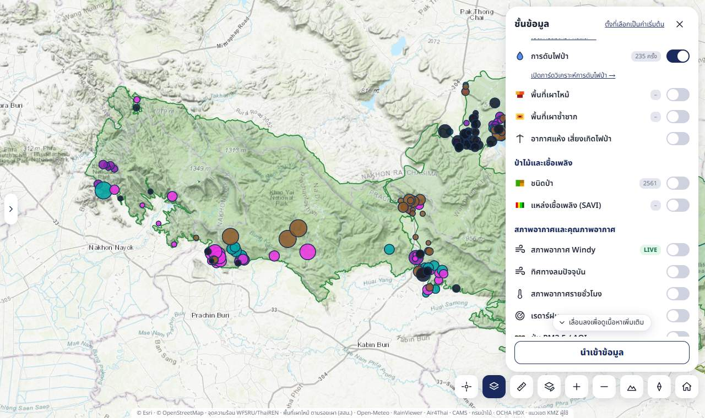
- เหตุไฟป่าที่เจ้าหน้าที่เข้าดับจริง จากรายงานสถิติดับไฟรวม อส. ปีงบ 2564–2568 เฉพาะในกลุ่มป่า (294 ครั้ง) วางตามพิกัด UTM ในรายงาน ตัวเลขบนแถว = จำนวนครั้งตามปุ่มดงใหญ่
- วิธีอ่าน: ขนาดจุด = พื้นที่เสียหาย (ไร่) · ขอบน้ำเงินเข้ม (ต่างจากจุดความร้อนย้อนหลังที่ขอบขาว) · สีตามปีงบ / สาเหตุ / ขนาดพื้นที่ เลือกในการ์ดวิเคราะห์สถิติ แท็บ "การดับไฟป่า" — ลิงก์ เปิดการ์ดวิเคราะห์การดับไฟป่า →
- คลิกจุด → วันเวลารับแจ้ง ช่องทางรับแจ้ง เวลาเข้าดับ–เสร็จสิ้น พื้นที่เสียหาย สาเหตุ สถานที่ ตำบล พื้นที่ป่าตามรายงาน พื้นที่อนุรักษ์ตามพิกัด สถานีฯ ที่ดำเนินการ จุดความร้อนใกล้เหตุ และพิกัด UTM
- ใช้ทำอะไร: เทียบเหตุไฟจริงกับจุดความร้อน ดูว่าพื้นที่ใดเกิดไฟซ้ำ ไฟใหญ่เกิดที่ไหน และหน่วยใดรับภาระมาก เพื่อวางกำลังและจุดเฝ้าระวัง
พื้นที่เผาไหม้ ค่าเริ่มต้น: ปิด

- รอยเผาไหม้จริงจากภาพดาวเทียม Sentinel-2 ความละเอียด 20 ม. (ระบบตามรอยเผา สสน.) เฉพาะในพื้นที่อนุรักษ์และพื้นที่รับผิดชอบสถานีฯ · ป้ายบนแถวบอกรอบล่าสุดที่มีข้อมูล
- ช่องเลือกช่วง: สะสมปีงบ (ค่าเริ่มต้น) / รายรอบ 7 วัน / แยกประเภทรายเดือน / แยกประเภทรายฤดูฝุ่น (ธ.ค.–เม.ย.)
- สี (สะสมและราย 7 วัน): พบ 1 ครั้ง 2 ครั้ง 3 ครั้งขึ้นไป (ครั้ง = จำนวนภาพที่เห็นรอยในรอบ)
- กล่องสรุป: ไร่รวม (และ ตร.กม.) · คำเตือนรอบที่ขาดภาพ (เมฆ) · ไร่ที่มีจุดความร้อนในรัศมี 1 กม. (%) · แท่งรายรอบของปีงบ (แตะเพื่อดูรอบนั้น) · ไร่แยกพื้นที่อนุรักษ์และสถานีฯ
- ดาวน์โหลดข้อมูล (CSV) แถวละ รอบ × พื้นที่อนุรักษ์ × สถานีฯ × ประเภท (ไร่ และไร่ที่มีจุดความร้อน) · รายงาน PDF แผนที่ + พื้นที่เผาไหม้ + แหล่งเชื้อเพลิง
- แตะแผนที่บนรอยเผา → รอบที่พบ จำนวนครั้ง ประเภท และพบจุดความร้อนใกล้หรือไม่


วงส้มรอบรอยเผา: เมื่อซูมไกลจนรอยเผาเล็กกว่าที่ตาเห็น จะมีวงส้มล้อมบอกตำแหน่ง (วงใหญ่ = หลายรอยรวมกัน) · แตะวงเพื่อซูมเข้าไป · ซูมใกล้จนเห็นรอยจริงแล้ววงจะหายเอง
ใช้ทำอะไร: ยืนยันขนาดพื้นที่ไหม้จริงหลังเหตุ รายงานผลการปฏิบัติงาน และตรวจไฟที่ดาวเทียมจุดความร้อนตกหล่น · ข้อมูลออกช้ากว่าสิ้นรอบราว 9 วัน · วิธีคิดดู พื้นที่เผาไหม้
พื้นที่เผาซ้ำซาก ค่าเริ่มต้น: ปิด

- พิกเซล 20 ม. ที่พบรอยเผาไหม้มากกว่า 1 ปีงบ จากข้อมูลตามรอยเผาทุกชุดตั้งแต่ ธ.ค. 2566
- ตัวเลือก ไหม้ ≥ 2 ปี (ค่าเริ่มต้น) / ≥ 3 ปี / ทุกพื้นที่ที่เคยไหม้ · สี 1 ปี 2 ปี 3 ปี 4 ปีขึ้นไป
- สรุปไร่ตามจำนวนปี · ไหม้ซ้ำแยกป่าไม้/เกษตร · แยกพื้นที่อนุรักษ์และสถานีฯ · ตารางรายปีงบ (พร้อมหมายเหตุว่าทำไมยอดรายปีอาจต่างจากชั้นพื้นที่เผาไหม้)
- แตะแผนที่ → ปีงบที่ไหม้และประเภท
- ใช้ทำอะไร: จัดลำดับพื้นที่ทำแนวกันไฟ ลาดตระเวน และจัดการเชื้อเพลิงก่อนฤดูไฟ (พื้นที่ไหม้ซ้ำมักเป็นจุดที่มีคนเข้าไปจุดไฟเป็นประจำ)
ดัชนีอันตรายไฟป่า FWI (กรมป่าไม้) ค่าเริ่มต้น: ปิด
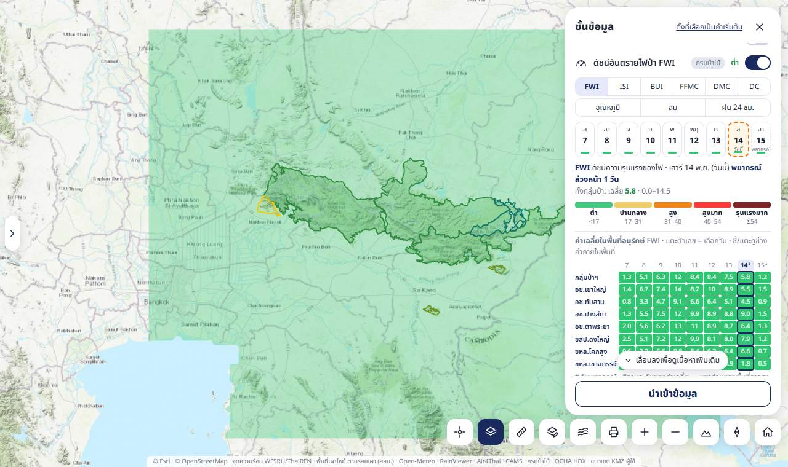
- ระบบดัชนีอันตรายไฟป่าของแคนาดา (Canadian Forest Fire Weather Index System) จากระบบ TFDRS ของกรมป่าไม้ — คำนวณด้วยโค้ด cffdrs-ng ของ Natural Resources Canada จากอุณหภูมิ ความชื้น ลมเที่ยงวัน และฝน 24 ชม. ของแบบจำลอง WRF (สสน.) ตาราง ~3 กม. วันละครั้ง · ดูวิธีคิดที่ ระบบ FWI ของแคนาดา
- ปุ่มเลือกดัชนี 6 ตัว: FWI (ความรุนแรงของไฟ — ดัชนีรวม) · ISI (การลุกลามเริ่มต้น) · BUI (เชื้อเพลิงสะสม) · FFMC (ความชื้นเชื้อเพลิงละเอียด — ความง่ายในการติดไฟ) · DMC (ความชื้นอินทรียวัตถุชั้นบน) · DC (ความแห้งแล้งสะสม) และอากาศที่ใช้คำนวณ อุณหภูมิ ลม ฝน 24 ชม.
- ชิปเลือกวัน: ย้อนหลัง 7 วัน + พยากรณ์ล่วงหน้า 2 วัน (ขอบประ) · แถบสีใต้ชิป = ระดับของค่าเฉลี่ยทั้งกลุ่มป่า · ต้นทางออกรอบใหม่วันละครั้งช่วงบ่าย (ค่าของวันนั้น = ค่าเที่ยงวัน)
- สี 5 ระดับ ต่ำ (เขียว) ปานกลาง (เหลือง) สูง (ส้ม) สูงมาก (แดง) รุนแรงมาก (แดงเข้ม) ตามเกณฑ์ที่ TFDRS ปรับเทียบสำหรับประเทศไทย (เช่น FWI 17 / 31 / 40 / 54) — ระดับต่ำแสดงโปร่งกว่าเพื่อให้ยังเห็นแผนที่ฐาน · อากาศเที่ยงวันมีชื่อระดับใต้สีด้วย: อุณหภูมิ ต่ำ/ปานกลาง/สูง/สูงมาก/ร้อนจัด (<20 · 20–25 · 25–30 · 30–35 · ≥35 °C) · ลม อ่อน/ปานกลาง/แรง/แรงมาก/รุนแรง (<5 · 5–10 · 10–15 · 15–20 · ≥20 กม./ชม.) · ฝน 24 ชม. น้อย/ปานกลาง/หนัก/หนักมาก/รุนแรง (<5 · 5–10 · 10–25 · 25–50 · ≥50 มม.) ตามช่วงเดียวกับ TFDRS
- สีบนแผนที่แสดงเฉพาะภายในแนวเขตพื้นที่อนุรักษ์ของกลุ่มป่า (รวม ขสป.ดงใหญ่) และพื้นที่เฝ้าระวังพิเศษ (จปร.) ตัดขอบสีตามเส้นแนวเขตจริง และวาดที่ความละเอียดของจอ จึงคมเมื่อซูมเข้า (ตารางจริง ~3 กม.) · ป๊อปอัปเมื่อแตะแผนที่และป้ายชี้เมาส์แสดงค่า FWI เฉพาะในขอบเขตนี้เช่นกัน
- ตารางค่าเฉลี่ยในพื้นที่อนุรักษ์ — กลุ่มป่าทั้งหมด + 7 พื้นที่อนุรักษ์ × ทุกวัน (คิดจากจุดตัวอย่างทุก 0.02° ภายในแนวเขต) · ชี้/แตะช่องดูค่าต่ำสุด–สูงสุดภายในพื้นที่และสัดส่วนพื้นที่ในแต่ละระดับ · แตะตัวเลข = เลือกวัน
- ชี้เมาส์บนแผนที่ดูค่า · แตะแผนที่ = ป๊อปอัปมีครบ 6 ดัชนีและอากาศเที่ยงวันของวันที่เลือก · แผงรายละเอียดจุดความร้อนมีบรรทัด "ระบบ FWI กรมป่าไม้" ของวันที่ตรวจพบเสมอ (แม้ไม่ได้เปิดชั้นนี้)
- รายงาน PDF (ปุ่มพิมพ์รายงานของการ์ดจุดความร้อน) มีหัวข้อ "ดัชนีอันตรายไฟป่า FWI System" ต่อจากพื้นที่เผาไหม้: ค่าเฉลี่ยรายพื้นที่อนุรักษ์ทุกดัชนีและอากาศเที่ยงวันของวันที่เลือกในแผง (ค่าเริ่มต้น = วันนี้) + ตาราง FWI รายวันทุกวันที่มี สีตามระดับ
- สรุปประจำวันทาง LINE และ Telegram (05:30 น.) มีส่วน FWI ของกลุ่มป่า วันนี้/พรุ่งนี้ (ค่าเฉลี่ย ระดับ ค่าสูงสุด) — ตัวเลขชุดเดียวกับแถว "กลุ่มป่าฯ" ในตาราง
- ใช้ทำอะไร: ประเมินอันตรายไฟป่ารายวันด้วยระบบมาตรฐานสากลที่ปรับเกณฑ์สำหรับประเทศไทย · DC/BUI บอกความแห้งสะสมของฤดู (ไฟไหม้ลึก ดับยาก) · FFMC/ISI บอกโอกาสติดไฟและลามในวันนั้น · ใช้ประกอบการวางกำลังลาดตระเวนและประกาศงดเผา · ข้อจำกัด: ไม่ได้คิดชนิด/ปริมาณเชื้อเพลิงจริงและภูมิประเทศ, ตาราง ~3 กม. หยาบกว่าหุบเขา
หมวดป่าไม้และเชื้อเพลิง
ชนิดป่า 2561 ค่าเริ่มต้น: ปิด

- ชนิดป่าจาก shapefile ของกรมป่าไม้ (โครงการจัดทำข้อมูลสภาพพื้นที่ป่าไม้ ปี 2560–2561) กริด 50 ม. เฉพาะในแนวเขต · ส่วนใหญ่เป็นป่าดิบแล้ง (~2.81 ล้านไร่) และป่าเบญจพรรณ (~0.54 ล้านไร่)
- กล่องสรุป: แท่งซ้อนไร่ต่อชนิดป่าในแต่ละพื้นที่อนุรักษ์ (ตามปุ่มดงใหญ่) · แตะแผนที่ → ชนิดป่า ณ จุดนั้น
- ใช้ทำอะไร: ป่าเต็งรังและเบญจพรรณไฟลามเร็วตามใบไม้แห้ง ป่าดิบแล้งไฟลามช้าแต่เผาลึกและฟื้นตัวนาน · โมเดลไฟในแผงรายละเอียดใช้ชั้นนี้เลือกเชื้อเพลิงอัตโนมัติ
แหล่งเชื้อเพลิง (SAVI) ค่าเริ่มต้น: ปิด

- 5 ระดับ สูงมาก สูง ปานกลาง ต่ำ ต่ำมาก · SAVI ต่ำ (พืชโปร่ง แห้ง ผลัดใบ ดินโล่ง) = ระดับสูง · ไม่มีสี = ไม่มีข้อมูล (เช่น เมฆ)
- กล่องสรุป: เลือกเดือน (เมื่อมีหลายเดือน) · แท่งสัดส่วนต่อพื้นที่อนุรักษ์ เรียงตาม % ระดับสูง–สูงมาก (ตัวเลขตามปุ่มดงใหญ่)
- ใช้ทำอะไร: ดูความต่อเนื่องของเชื้อเพลิงแห้งก่อนฤดูไฟ เลือกแนวทำแนวกันไฟและพื้นที่จัดการเชื้อเพลิง · วิธีคิดดู SAVI
หมวดสภาพอากาศและคุณภาพอากาศ
สภาพอากาศ Windy LIVE ค่าเริ่มต้น: ปิด

เหมือนปุ่มเมนู "พยากรณ์อากาศ" · กล่องตั้งค่า: เลือกชั้น (ลม ฝน อุณหภูมิ ความชื้น เรดาร์ ดาวเทียม PM2.5 ความเสี่ยงไฟป่า), เวลา ตอนนี้ / +12 / +24 ชม., ความเข้ม 20–100% (ยิ่งสูงแผนที่ฐานยิ่งจาง), และค่าสภาพอากาศกลางกลุ่มป่าตอนนี้ · รายละเอียดดู พยากรณ์อากาศ Windy
ทิศทางลมปัจจุบัน ค่าเริ่มต้น: ปิด

- เส้นลมเคลื่อนไหวตามบริเวณที่มองเห็น ปรับทุก 15 นาที · หัวเส้นแหลมชี้ทิศที่ลมพัดไป · ยิ่งยาวยิ่งแรง 5 ระดับ (ต่ำกว่า 1 ถึงเกิน 8 ม./วินาที) · บนภาพดาวเทียมเส้นเป็นสีขาว
- ใช้ทำอะไร: ไฟผิวดินลามไปทางลมพัดไป ควันก็ไปทางเดียวกัน · ใช้คู่กับจุดความร้อนเพื่อคาดว่าหมู่บ้านใดอยู่ใต้ลม
สภาพอากาศรายชั่วโมง ค่าเริ่มต้น: ปิด

- แบบจำลอง Open-Meteo (~10–25 กม.) ตามบริเวณที่มองเห็น เลือก อุณหภูมิ / ความชื้น / ฝน / เมฆ
- แถบเลื่อนเวลา ย้อนหลัง 24 ชม. ถึงพยากรณ์ 48 ชม. · ‹ › ทีละชั่วโมง · ตอนนี้ · ชี้เมาส์ดูค่า
- ใช้ทำอะไร: ช่วงบ่ายที่ความชื้นต่ำสุดและร้อนสุดไฟลุกลามแรงที่สุด ใช้เลือกเวลาเข้าดับไฟ (เช้ามืด/ค่ำ) และดูว่าจะมีฝนช่วยหรือไม่
อัตราการระบายอากาศ ค่าเริ่มต้น: ปิด
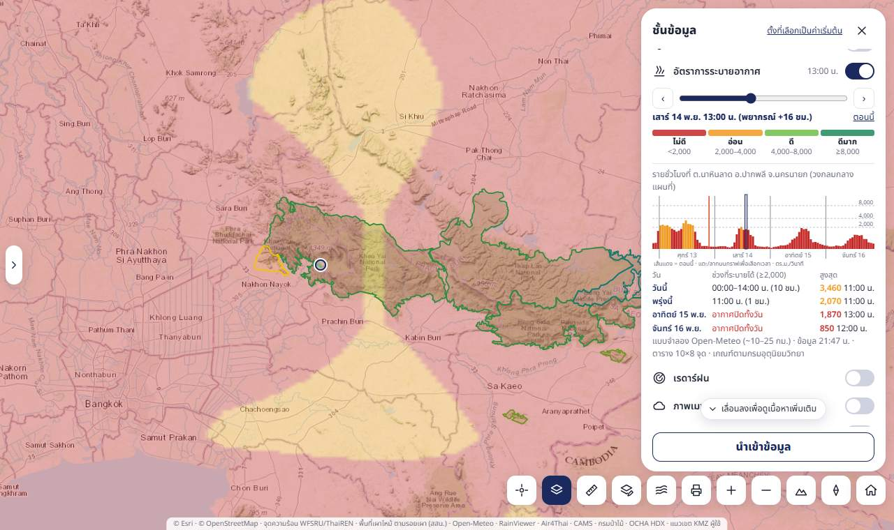
- อัตราการระบายอากาศ (Ventilation rate) = ความสูงชั้นผสมอากาศ (mixing height — ชั้นอากาศใกล้พื้นที่ควันและฝุ่นผสมขึ้นไปได้) × ความเร็วลมพา (transport wind — ลมเฉลี่ยในชั้นนั้น) หน่วย ตร.ม./วินาที · ยิ่งสูง ควันยิ่งลอยขึ้นสูงและถูกพัดออกไปเร็ว
- สีและคำแนะนำตามเกณฑ์ของกรมอุตุนิยมวิทยา 5 ระดับ: ไม่ดี ต่ำกว่า 2,000 (การเผาในที่โล่งส่งผลกระทบต่อคุณภาพอากาศมาก) · อ่อน 2,000–3,999 (เผาก่อน 11.00 น. และหลัง 16.00 น. ส่งผลกระทบค่อนข้างมาก) · ดี 4,000–7,999 (เผากลางวันเมื่ออากาศมีการยกตัว ส่งผลกระทบปานกลาง) · ดีมาก 8,000–15,999 (ส่งผลกระทบค่อนข้างน้อย) · ดีที่สุด ตั้งแต่ 16,000 (อากาศไม่มีเสถียรภาพ ลมแรง เผาด้วยความระมัดระวัง) — ตารางเต็มอยู่ในหัวข้อพับ "เกณฑ์และคำแนะนำการเผาในที่โล่ง"
- แหล่งข้อมูล: NOAA GFS — แบบจำลองพยากรณ์อากาศโลกของสหรัฐฯ ตัวแปร VRATE ซึ่งเป็นแหล่งเดียวกับที่กรมอุตุนิยมวิทยาใช้ (หน้าเว็บกรมอุตุฯ ระบุ Source: NOAA's GFS products) ตาราง 0.25° (~27 กม.) ทั้งประเทศ พยากรณ์ 7 วัน: 5 วันแรกทุกชั่วโมง 2 วันหลังทุก 3 ชม. (GFS ออกรายชั่วโมงถึง 120 ชม. หลังจากนั้นทุก 3 ชม.) — วันที่เป็นราย 3 ชม. มีเครื่องหมาย † ที่ปุ่มวัน ตาราง และกราฟ (ส่วนแรเงาลายทแยง) ค่าสูงสุดของวันนั้นอาจต่ำกว่าจริงเล็กน้อยเพราะไม่มีค่าระหว่างชั่วโมง ช่วงเวลาที่ระบายได้หยาบเป็นช่วงละ 3 ชม. และความแม่นยำลดลงตามระยะพยากรณ์ · วันที่จบแล้วหรือข้อมูลครอบไม่ถึง 12 ชม. ไม่แสดง · ปุ่มวันด้านบนเลือกวัน แล้วเลือกค่าที่แสดง: เฉลี่ยทั้งวัน = ค่าเฉลี่ย 07:00 น. ถึง 06:00 น. ของวันถัดไป (วิธีเดียวกับตัวเลขรายวันของกรมอุตุฯ — ตรวจแล้วตรงกัน เช่น กรุงเทพฯ 13 พ.ย. 69 ได้ 1,083 เทียบกับกรมอุตุฯ 1,088) · สูงสุดของวัน · รายชั่วโมง = แผนที่แสดงค่าสูงสุดของวัน (ชั่วโมงที่ระบายได้ดีที่สุด — ใช้ดูว่ามีช่วงที่เผาได้หรือไม่) เลื่อนแถบหรือแตะกราฟเพื่อดูทีละชั่วโมง ปุ่ม สูงสุดของวัน พากลับ · จุดกากบาทกลางแผนที่ (กลางพื้นที่ที่ไม่ถูกแผงบัง) = จุดอ่านค่า: ป้ายข้างกากบาทและบรรทัด "ค่าที่จุดกากบาท" ในแผงบอกค่าที่จุดนั้นทันทีระหว่างเลื่อนแผนที่ — เป็นค่าที่จุดเดียว ประมาณจากตาราง GFS ~27 กม. ไม่ใช่ค่าเฉลี่ยของพื้นที่รอบกากบาท · ค่าสูงสุดของวันคือค่าสูงสุดของค่ารายชั่วโมงที่จุดนั้น จึงเท่ากับแท่งสูงสุดในกราฟและช่อง "สูงสุด" ในตารางรายวัน · โหมดสูงสุด/รายชั่วโมงมีกราฟรายชั่วโมง 7 วันของจุดกากบาท สีแท่งตามเกณฑ์ เส้นแบ่งวันที่ 07:00 น. เส้นแดง = ตอนนี้ กรอบ = ชั่วโมงที่เลือก/ชั่วโมงที่สูงสุด และตารางรายวัน บอกช่วงเวลาแรก–สุดท้ายที่ระบายได้ (≥2,000) รวมกี่ชั่วโมง และค่าสูงสุดพร้อมเวลา (แตะชื่อวัน = เลือกวัน · * = วันที่มีข้อมูลไม่ครบ) · ตาราง 7 วันของ กลุ่มป่า (เฉลี่ยภายในแนวเขตพื้นที่อนุรักษ์) และ 6 จังหวัดรอบกลุ่มป่า (เฉลี่ยทั้งจังหวัด) ตัวเลขเป็นพัน ตร.ม./วินาที แตะตัวเลข = เลือกวัน · ชี้เมาส์ (มือถือแตะ) ที่ช่องตัวเลข = ป้ายบอกค่าต่ำสุด–สูงสุดภายในพื้นที่และสัดส่วนพื้นที่ที่ ≥2,000 (ระบายได้) เพราะค่าเฉลี่ยตัวเดียวบดบังความต่างภายในพื้นที่ — ช่องสีแดงอาจยังมีบางส่วนที่ระบายได้ · แตะชื่อจังหวัด = เปิดกราฟรายวันของกรมอุตุฯ ไว้เทียบ · ตัวเลขของกรมอุตุฯ เป็นค่าที่จุดเดียว (สถานีตรวจอากาศในตัวจังหวัด) ไม่ใช่ค่าเฉลี่ยทั้งจังหวัด: หัวกราฟระบุชื่อจุด เช่น "BANGKOK (BANG NA)" ชื่อไฟล์เป็นรหัสสถานี และเมื่อเทียบกับ GFS รอบเดียวกัน (13 พ.ย. 69 00Z ครบ 77 จังหวัด 10 วัน) จุดเดียวใกล้ตัวเมืองให้ค่าตรงกับกรมอุตุฯ คลาดเฉลี่ยวันละ ~45 ตร.ม./วินาที ส่วนค่าเฉลี่ยทั้งจังหวัดคลาด ~240 (มัธยฐาน) — ในจังหวัดเดียวกันค่าต่างกันได้หลายเท่า เช่น นครราชสีมา 21 พ.ย. ต่ำสุด 1,400 ถึงสูงสุด 5,100 จึงต่างจากตารางนี้มากในบางวัน · แตะแผนที่ = ค่าเฉลี่ย ค่าสูงสุด และเวลาที่สูงสุดของจุดนั้น + คำแนะนำ · ใช้แหล่งเดียว (เดิมมีตัวเลือกคำนวณเองจาก Open-Meteo — เอาออก 14 พ.ย. 69 เพื่อไม่ให้สับสน เพราะเป็นค่าประมาณคนละวิธีและไม่ใช่ตัวเลขที่เกณฑ์ของกรมอุตุฯ อ้างอิง)
- การอัปเดต: GFS ออกวันละ 4 รอบ (07:00 / 13:00 / 19:00 / 01:00 น.) ครบ 7 วันราว 4 ชม. หลังเวลารอบ ระบบดึงรอบใหม่จากเซิร์ฟเวอร์ NOMADS ของ NOAA ในรอบ sync (06:17 / 09:17 / 15:17 / 18:17 น.) · บรรทัดล่างบอกรอบที่ใช้อยู่ · ค่าใน GFS ละเอียดทีละ 100 ตร.ม./วินาที
- ปกติกลางคืนถึงเช้าตรู่อากาศปิด (ชั้นผสมอากาศต่ำมาก) และสูงสุดช่วงสายถึงบ่าย ค่าเฉลี่ยทั้งวันจึงมักต่ำกว่าช่วงบ่ายมาก
- สรุปประจำวันทาง LINE และ Telegram (05:30 น.) มีส่วนอัตราระบายอากาศของกลุ่มป่าจาก NOAA GFS: ค่าสูงสุดของวัน 5 วันแรก (เฉพาะวันที่เป็นรายชั่วโมง) และช่วงเวลาที่ระบายได้ (≥2,000) + ค่าเฉลี่ยทั้งวันของวันนี้
- ใช้ทำอะไร: วางแผนชิงเผา/เผาตามแผนจัดการเชื้อเพลิงในวันและช่วงเวลาที่ระบายอากาศ "อ่อน" ขึ้นไป ตามคำแนะนำของกรมอุตุฯ · คาดว่าควันจากไฟป่าจะค้างในหุบเขา/ชุมชนหรือไม่ · ใช้คู่กับชั้นฝุ่น PM2.5 และทิศทางลม
เรดาร์ฝน ค่าเริ่มต้น: ปิด

- เรดาร์ตรวจอากาศจาก RainViewer ย้อนหลัง 2 ชม. ทุก 10 นาที · ▶ เล่นภาพเคลื่อนไหว · แถบเลื่อนเวลา · ล่าสุด
- สีจากฝนเบา (ฟ้าอ่อน) ถึงหนักมาก/พายุ (เหลือง–แดง) · ละเอียดสูงสุดเท่าซูม 7 · บริเวณที่ไม่มีเรดาร์ครอบคลุมจะไม่แสดงฝน
- ใช้ทำอะไร: ดูว่ามีฝนตกในพื้นที่ไฟหรือกำลังเคลื่อนเข้ามา
ภาพเมฆ Himawari-9 ค่าเริ่มต้น: ปิด
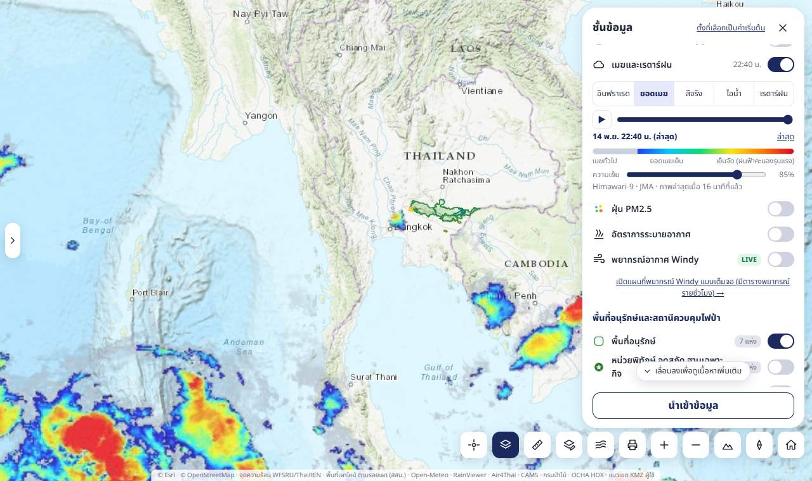
- ภาพจากดาวเทียมอุตุนิยมวิทยา Himawari-9 ของสำนักงานอุตุนิยมวิทยาญี่ปุ่น (JMA) โคจรค้างฟ้าเหนือเส้นศูนย์สูตรที่ลองจิจูด 140.7° ตะวันออก ถ่ายทุก 10 นาที · ย้อนหลัง 3 ชม. (19 ภาพ) · ▶ เล่นภาพเคลื่อนไหว · แถบเลื่อนเวลา · ล่าสุด · ความเข้ม 20–100%
- เลือกได้ 4 แบบ: อินฟราเรด (ช่อง 13, 10.4 ไมโครเมตร — ใช้ได้ทั้งกลางวันกลางคืน ยิ่งยอดเมฆสูงยิ่งเย็นยิ่งขาว ระบบตัดพื้นดินและท้องฟ้าโปร่งออกให้เห็นแผนที่ด้านล่าง เมฆบาง/ต่ำเป็นสีเทาอมฟ้า) · ยอดเมฆ (ภาพเน้นยอดเมฆของ JMA — ยอดเมฆที่เย็นจัดเป็นสีน้ำเงินถึงแดง = เมฆฝนฟ้าคะนองที่ก่อตัวสูง) · สีจริง (ภาพสีธรรมชาติ ใช้ได้เฉพาะกลางวัน — กลางคืนภาพมืดและมีข้อความเตือน) · ไอน้ำ (ช่อง 8, 6.2 ไมโครเมตร — ความชื้นในบรรยากาศชั้นบน สว่าง = ชื้น มืด = แห้ง)
- ความละเอียดราว 2 กม. (ภาพของ JMA ละเอียดสุดเท่าซูม 5 — ซูมเข้าใกล้ภาพจะเป็นช่องใหญ่) · ภาพเข้าช้ากว่าเวลาถ่ายราว 10–20 นาที (บรรทัดล่างบอกว่าภาพล่าสุดถ่ายเมื่อกี่นาทีที่แล้ว) · ดึงรายการภาพใหม่ทุก 10 นาที
- ใช้ทำอะไร: ดูกลุ่มเมฆที่กำลังเคลื่อนเข้าพื้นที่ไฟ · เมฆหนาตอนดาวเทียม VIIRS ผ่านทำให้ตรวจไม่พบจุดความร้อน (ใช้ประกอบกล่องดาวเทียมรอบถัดไป) · เมฆฝนฟ้าคะนองบ่งชี้ลมกระโชกและฟ้าผ่า · ไอน้ำบอกว่าบรรยากาศแห้งซึ่งไฟลุกลามง่าย
ฝุ่น PM2.5 / AQI ค่าเริ่มต้น: ปิด

- สี่เหลี่ยม = สถานี Air4Thai (กรมควบคุมมลพิษ) ค่าล่าสุด คลิกดูชื่อสถานีและค่า · พื้นผิวสี = แบบจำลอง CAMS ผ่าน Open-Meteo จุดห่าง 1° (~110 กม.) ครอบคลุมประเทศเพื่อนบ้าน — ซ่อนอัตโนมัติเมื่อเปิดชั้น PM2.5 แบบจำลอง CAMS ที่ละเอียดกว่า (สี่เหลี่ยมสถานียังแสดง)
- สลับ AQI (เกณฑ์ US EPA) / PM2.5 (µg/m³) · ชิปเลือกวัน (ปัจจุบัน/พยากรณ์) · คำอธิบายสี
- ใช้ทำอะไร: ใช้ร่วมกับชั้นลมดูควันจากไฟป่าและควันข้ามแดน · เกณฑ์สีดู AQI
PM2.5 แบบจำลอง CAMS ค่าเริ่มต้น: ปิด
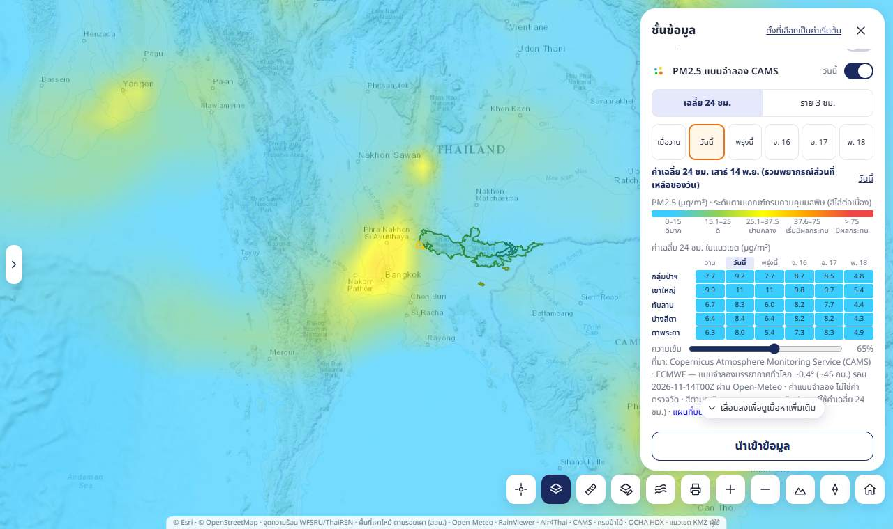
- คืออะไร: แผนที่ฝุ่น PM2.5 ใกล้ผิวดินจากแบบจำลองบรรยากาศทั่วโลกของ Copernicus Atmosphere Monitoring Service (CAMS) ที่ ECMWF ดำเนินการ (ความละเอียด ~0.4° หรือ ~45 กม.) — ระบบดึงตารางค่าทุกจุดตาราง 0.4° รอบประเทศไทย (ผ่าน Open-Meteo ค่าเท่ากับแผนที่ของ ECMWF) วันละ 2 ครั้งเมื่อแบบจำลองออกรอบใหม่ แล้ววาดสีเองบนหน้าเว็บ (ค่าระหว่างจุดตาราง = ค่าถ่วงจากจุดรอบข้าง) · แบบจำลองนี้รวมควันจากไฟที่ดาวเทียมตรวจพบ (GFAS) ด้วย จึงเห็นควันไฟป่าและควันข้ามแดนในภาพกว้าง
- เลือกค่าที่แสดง: เฉลี่ย 24 ชม. (ค่าเริ่มต้น) = ค่าเฉลี่ยของวันไทย 00:00–24:00 น. (8 เวลา 01:00, 04:00 … 22:00 น.) ตรงกับวิธีที่เกณฑ์ของไทยใช้ · ชิปวันเลือกวันตั้งแต่เมื่อวานถึงพยากรณ์ ~5 วัน (เมื่อวานมีแค่ 6 เวลา เพราะข้อมูลเริ่ม 07:00 น.) · ราย 3 ชม. = ค่าขณะนั้น เลื่อนแถบทีละ 3 ชม. หรือ ▶ เล่นภาพเคลื่อนไหว · ชิปวันในโหมดนี้ไปเวลาใกล้ 13:00 น. · วันนี้/ตอนนี้ = กลับวันหรือเวลาปัจจุบัน
- วิธีอ่าน: สีตามระดับ AQI ของกรมควบคุมมลพิษ (PM2.5 เฉลี่ย 24 ชม. ปี 2566): ฟ้า 0–15 ดีมาก · เขียว 15.1–25 ดี · เหลือง 25.1–37.5 ปานกลาง · ส้ม 37.6–75 เริ่มมีผลกระทบต่อสุขภาพ · แดง เกิน 75 มีผลกระทบต่อสุขภาพ · บนแผนที่ไล่สีต่อเนื่อง (สีตรงระดับที่ค่ากลางของแต่ละระดับ ใกล้ขอบระดับเป็นสีผสมของสองระดับ) จึงไม่เห็นเป็นก้อนสีมีขอบ · ตารางใต้คำอธิบายสี = ค่าเฉลี่ย 24 ชม. ของกลุ่มป่าฯ และ 4 อุทยานทุกวัน (เฉลี่ยจุดทุก 0.05° ในแนวเขต — ชุดเดียวกับสรุปประจำวัน) แตะหัววัน = ดูวันนั้น · แตะแผนที่ = ป๊อปอัปบอกค่าที่จุดนั้น · ปรับความเข้มได้ (ค่าเริ่มต้น 65%)
- ข้อควรรู้: เป็นค่าจากแบบจำลอง ไม่ใช่ค่าตรวจวัด — ใช้ดูทิศทางและพยากรณ์ของควันในภาพกว้าง ค่าจริงในพื้นที่ดูจากสถานี Air4Thai · โหมดราย 3 ชม. เป็นค่า ณ เวลานั้น ส่วนเกณฑ์ใช้ค่าเฉลี่ย 24 ชม. จึงเทียบระดับได้คร่าวๆ · ต่างจากภาพ PM2.5 (CAMS) ในเว็บ LFA Thailand เพราะ LFA แสดงภาพเดียวของเวลา 07:00 น. และใช้สีเกณฑ์ AQI สหรัฐฯ (12 = เหลือง, 35 = ส้ม, 55 = แดง) ข้อมูลต้นทางเป็นชุดเดียวกัน · เปิดชั้นนี้แล้วพื้นผิวสีของชั้น ฝุ่น PM2.5 / AQI ถูกซ่อนเพื่อไม่ให้ซ้อนกันสองชุด
- สรุปประจำวันทาง LINE และ Telegram (05:30 น.) มีส่วน PM2.5 ของกลุ่มป่าวันนี้และอีก 2 วัน: ค่าเฉลี่ย 24 ชม. (เฉลี่ย 8 เวลาของวันไทย 01:00–22:00 น.) ระบายสีตามระดับของกรมควบคุมมลพิษ + ค่าราย 3 ชม. สูงสุดของวัน และบรรทัด "วันนี้" บอกค่าเฉลี่ยรายอุทยาน กับเวลา/อุทยานที่ค่าสูงสุด · ตัวเลขชุดเดียวกับตารางในแผงชั้นข้อมูล — ข้อมูลไม่มีวันนี้หรือเก่ากว่า 2 วันจะไม่แสดง
- ใช้ทำอะไร: ดูว่าพรุ่งนี้ถึงอีกหลายวันข้างหน้าฝุ่นควันจะสะสมที่ไหน ใช้ร่วมกับชั้นลมและอัตราการระบายอากาศในการวางแผนชิงเผา/ประชาสัมพันธ์งดเผา
ลิงก์ เปิดแผนที่พยากรณ์ Windy แบบเต็มจอ → ท้ายหมวด เปิดหน้า Windy เต็มจอที่มีตารางพยากรณ์รายชั่วโมง
หมวดพื้นที่อนุรักษ์และสถานีควบคุมไฟป่า
พื้นที่อนุรักษ์ 7 แห่ง ค่าเริ่มต้น: เปิด

แนวเขตจากไฟล์ KMZ ของหน่วยงาน สีต่อพื้นที่ (ชี้ชื่อชั้นเพื่อดูคำอธิบายสี) · คลิกในพื้นที่ → ชื่อพื้นที่ ประเภท สังกัด ขนาด · เป็นขอบเขตที่ระบบใช้กรองจุดความร้อน
หน่วยพิทักษ์ จุดสกัด ฐานเฉพาะกิจ 85 แห่ง ค่าเริ่มต้น: ปิด
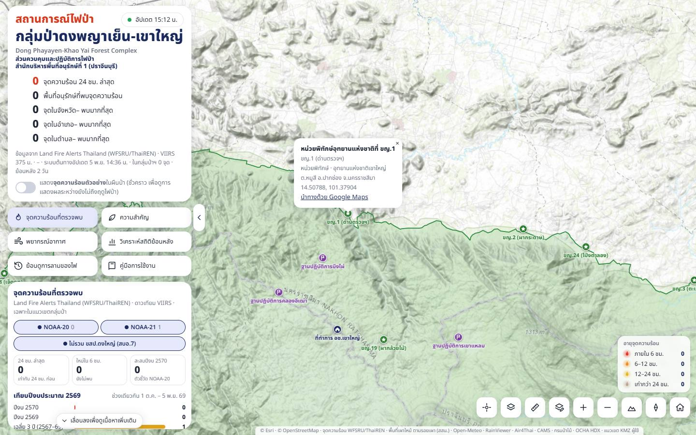
ที่ตั้งตาม shapefile ของ 4 อุทยานและดงใหญ่ (ที่ทำการ 5 · หน่วยพิทักษ์ 64 · จุดสกัด 12 · ฐานเฉพาะกิจ 4) · สัญลักษณ์: ที่ทำการ · หน่วยพิทักษ์ · จุดสกัด · ฐานเฉพาะกิจ · ซูมเข้าเพื่อดูชื่อย่อ (เช่น ขญ.1) · คลิก → ชื่อเต็ม ประเภท พื้นที่อนุรักษ์ ตำบล อำเภอ จังหวัด พิกัด และลิงก์นำทาง Google Maps · แสดงในภาพแผนที่ของรายงาน PDF ด้วย
ฐานปฏิบัติการป้องกันรักษาป่า 6 แห่ง ค่าเริ่มต้น: ปิด
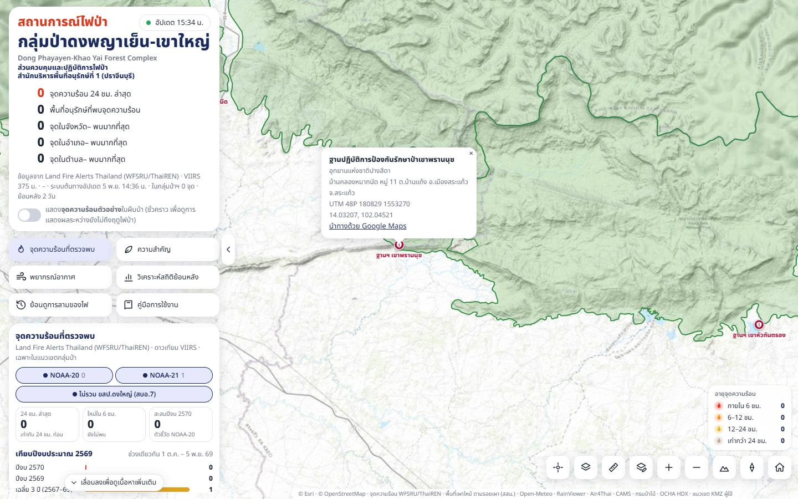
ที่ตั้งฐานปฏิบัติการป้องกันรักษาป่าตาม shapefile (เขาใหญ่ 3 · ปางสีดา 2 · ตาพระยา 1) · ซูมระดับจังหวัดขึ้นไปจะเห็นชื่อ · คลิก → ชื่อเต็ม พื้นที่อนุรักษ์ บ้าน หมู่ ตำบล อำเภอ จังหวัด พิกัด UTM ตามต้นฉบับ (47P/48P) ละติจูด/ลองจิจูด และลิงก์นำทาง Google Maps · แสดงในภาพแผนที่ของรายงาน PDF ด้วย
พื้นที่รับผิดชอบของสถานีควบคุมไฟป่า 8 แปลง ค่าเริ่มต้น: ปิด

แปลงรับผิดชอบของสถานีควบคุมไฟป่า 8 แห่ง ข้อมูลปี 2570 (บางแปลงอยู่นอกพื้นที่อนุรักษ์) · คลิกในแปลง → สถานีฯ ที่รับผิดชอบ สังกัด ชนิดป่า · ใช้ระบุว่าจุดความร้อนเป็นความรับผิดชอบของสถานีใด
สถานีควบคุมไฟป่า 8 แห่ง ค่าเริ่มต้น: ปิด

ที่ตั้งตามไฟล์ KMZ · ซูมเข้าเพื่อดูชื่อสถานี · คลิก → ชื่อ สังกัด พิกัด และลิงก์นำทาง Google Maps · ใช้ประเมินระยะเดินทางจากสถานีถึงจุดไฟ (ใช้ เครื่องมือวัด ช่วย)
หมวดพื้นที่เฝ้าระวังพิเศษ
โรงเรียนนายร้อยพระจุลจอมเกล้า 54,139 ไร่ ค่าเริ่มต้น: เปิด
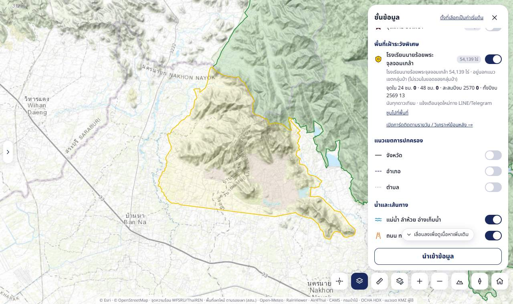
- แนวเขตพื้นที่บริเวณโรงเรียนนายร้อยพระจุลจอมเกล้า (จปร.) อ.บ้านนา และ อ.เมืองนครนายก จ.นครนายก ตามไฟล์ KMZ ของผู้ใช้ (54,139 ไร่) — อยู่นอกแนวเขตกลุ่มป่า (ติดเขาใหญ่ด้านใต้) จึงติดตามแยก ไม่รวมในยอดจุดความร้อนของกลุ่มป่า
- วิธีอ่าน: เส้นสีเหลือง (ขนาดเท่าเส้นพื้นที่อนุรักษ์) = แนวเขต · จุดความร้อน 48 ชม. ล่าสุดในพื้นที่แสดงด้วยไอคอนไฟสีตามอายุแบบเดียวกับจุดความร้อน (นับรวมในกล่องอายุจุดความร้อน) — คลิกเพื่อเปิดแผงรายละเอียดจุด (โมเดลไฟ ลม ความลาดชัน) ซึ่งมีบรรทัด "พื้นที่เฝ้าระวังพิเศษ" · ตัวเลขบนแถว = จำนวนจุด 48 ชม. (ไม่มีจุด = ขนาดพื้นที่)
- เปิดสวิตช์แล้วมีกล่องสรุป: จุดใน 24/48 ชม. · สะสมปีงบนี้ · ทั้งปีงบก่อน (นับทุกดาวเทียม) + ลิงก์ ซูมไปที่พื้นที่ และ เปิดการ์ดติดตามรายวัน / วิเคราะห์ย้อนหลัง → (การ์ดพื้นที่เฝ้าระวังพิเศษ)
- การ์ดจุดความร้อนที่ตรวจพบมีป้ายเหลือง "พื้นที่เฝ้าระวังพิเศษ จปร. · 24 ชม. … · สะสมปีงบ …" แตะเพื่อเปิดการ์ดเดียวกัน · แตะแผนที่ในพื้นที่ ป๊อปอัปมีบรรทัดบอกว่าอยู่ในพื้นที่เฝ้าระวัง
- มีผลกับฟังก์ชันจุดความร้อนอื่นด้วย (เมื่อเปิดสวิตช์นี้): กองจุดความร้อนรายวัน / กองรวม / พื้นที่จุดความร้อนรวม ทุกช่วงเวลา · ย้อนดูการลามของไฟ (จุดย้อนหลังของพื้นที่เล่นตามวันพร้อมจุดกรมอุทยานฯ ขอบน้ำตาล) · สวิตช์จุดความร้อนย้อนหลัง/แท็บจุดความร้อนของการ์ดสถิติ · วงเหลืองบนภาพดาวเทียมรายวัน NOAA-20 และขีดวันที่บนแถบเลื่อน · ปุ่มเลือกดาวเทียม · มุมมอง 3 มิติ · ประวัติบริเวณจุดไฟในแผงรายละเอียด — แต่ไม่นับรวมในตัวเลข/ตาราง/รายงานของกลุ่มป่า (ดูยอดของพื้นที่นี้ที่การ์ดพื้นที่เฝ้าระวังพิเศษ)
- ใช้ทำอะไร: เฝ้าระวังพื้นที่ที่ไม่อยู่ในความรับผิดชอบปกติแต่ไฟอาจลามเข้าป่าอนุรักษ์ ติดตามจุดใหม่ทุกวัน และรับแจ้งเตือนทาง LINE/Telegram (ดู การแจ้งเตือน)
หมวดแนวเขตการปกครอง และน้ำและเส้นทาง
จังหวัด อำเภอ ตำบล

- จังหวัด 77 จังหวัด · อำเภอ และตำบล (ค่าเริ่มต้นปิดทั้งสาม) เฉพาะ 18 จังหวัดรอบกลุ่มป่า ตำบลแสดงเมื่อซูมเข้า — กรมการปกครอง ผ่าน OCHA HDX (2565)
- แตะแผนที่ที่ใดก็ได้ ป๊อปอัปบอกตำบล อำเภอ จังหวัด (แม้ไม่ได้เปิดเส้น)
แม่น้ำ ลำห้วย อ่างเก็บน้ำ ถนน ทางรถ ทางเดิน

เปิด/ปิดแหล่งน้ำและถนนของแผนที่ฐานแบบเวกเตอร์ (มีผลกับแผนที่ฐาน เรียบ ถนน/ชุมชน โทนมืด เท่านั้น) · ค่าเริ่มต้นเปิด · ใช้หาแหล่งน้ำสำหรับดับไฟและเส้นทางเข้าถึง หรือปิดเพื่อให้แผนที่ในรายงานโล่งขึ้น
ชั้นข้อมูลของผู้ใช้ และปุ่มนำเข้าข้อมูล
- ลิงก์ วาดหมุด/เส้นทาง/พื้นที่ · นำเข้าและส่งออก → เปิด เครื่องมือวาด
- ปุ่ม นำเข้าข้อมูล ท้ายแผง — นำเข้าไฟล์จุดความร้อนย้อนหลัง (.xlsx .csv .geojson รูปแบบเดียวกับไฟล์ Excel ของกรมอุทยานฯ) เลือกได้ว่าจะเพิ่มต่อจากข้อมูลเดิม (ข้ามจุดซ้ำ) หรือแทนที่ทั้งหมด แล้วเปิดการ์ดสถิติให้วิเคราะห์ทันที — มีผลเฉพาะหน้าที่เปิดอยู่ โหลดหน้าใหม่แล้วกลับเป็นข้อมูลเดิม ประมวลผลในเบราว์เซอร์ทั้งหมด ไม่อัปโหลดไปไหน (ชั้นประเภทอื่นยังไม่รองรับ — ใช้เครื่องมือวาดแทน)
แผงรายละเอียดจุดความร้อน


ส่วนหัวและข้อมูลจุด
- ปุ่มด้านบน: ลม (เปิดชั้น Windy แล้วซูมไปที่จุด) · คัดลอกพิกัดและลิงก์ · นำทางด้วย Google Maps · ปิด
- ชื่อพื้นที่ ตำบล อำเภอ จังหวัด · พื้นที่อนุรักษ์ · สถานีฯ ที่รับผิดชอบ
- อายุ (ชม. นาที ที่แล้ว · เกิน 24 ชม. = วัน ชม. นาที) · ความแรงไฟ (FRP, MW) — API ไทยไม่ส่งค่า FRP จึงแสดง "–" สำหรับจุดจริง
- เวลาที่ตรวจพบ = เวลาที่ดาวเทียมสแกน (เวลาไทย) · ความเชื่อมั่น (ต่ำ/ปกติ/สูง) · พิกัด ทศนิยม และ UTM · ความสูง และความลาดชันพร้อมทิศลาด (จากแบบจำลองความสูง)
ประวัติในบริเวณนี้
จากข้อมูลย้อนหลังกรมอุทยานฯ: ประเภทพื้นที่ สถานีฯ สบอ. · บรรทัด "ทุกดาวเทียม ≤2 กม." นับจาก API ไทย + NASA FIRMS ปีงบ 2561 เป็นต้นไป (แยกตามดวง และวันที่ล่าสุด ไม่นับจุดวันเดียวกับจุดที่เปิด) · เคยพบในรัศมี 1 กม. / 2 กม. · กราฟจำนวนจุดในรัศมี 2 กม. แยกปีงบ · ปุ่ม แสดงจุดย้อนหลังบนแผนที่ → — จุดที่ไหม้ซ้ำทุกปีมักเป็นพื้นที่เผาเพื่อหาของป่า/เตรียมพื้นที่เกษตร
คาดการณ์การลุกลามและผลกระทบ
จำลองว่าถ้าไฟนี้ลุกลามโดยไม่มีการควบคุม จะเป็นอย่างไรในช่วงเวลาที่เลือก ผลแสดงบนแผนที่เป็นวงรีไฟ 3 ช่วงเวลา (1/3, 2/3 และเต็มช่วง) และกรวยหรือพื้นผิวกลุ่มควัน กด ซูมดูวงคาดการณ์
- ระยะเวลาคาดการณ์ 1 / 3 / 6 / 12 / 24 ชม.
- เชื้อเพลิงป่าไม้ — ระบบเลือกให้อัตโนมัติจากชั้นชนิดป่า (ถ้าไม่มีข้อมูลใช้แปลงรับผิดชอบสถานีฯ และความสูง) เหตุผลแสดงในวงเล็บ เปลี่ยนเองได้ 5 แบบ: เบญจพรรณ เต็งรัง ดิบแล้ง ดิบเขา/สน ไผ่
- โมเดลกระจายควัน — Gaussian (เร็ว ลมคงที่ เป็นกรวย) หรือ Lagrangian (อนุภาค 2,000 ตัวพัดตามลมพยากรณ์รายชั่วโมง เห็นควันเลี้ยวตามลม และขอบไฟโตแบบ Huygens)
- ปรับตัวแปรจำลอง — ความเร็วลม ทิศที่ลมพัดมา ความชื้นสัมพัทธ์ ความชัน (ค่าเริ่มต้นดึงจากสภาพอากาศจริงและแบบจำลองความสูง ณ จุดนั้น) · ใช้ค่าทดสอบ (หัวข้อ 7.3) ใช้ชุดค่ามาตรฐานที่ใช้สอบเทียบโมเดล
ผลลัพธ์:
| ค่า | ความหมาย |
|---|---|
| พื้นที่ไหม้ (ไร่) | พื้นที่วงรีไฟเมื่อครบระยะเวลา |
| อัตราไฟลามที่หัวไฟ (ม./นาที) | ความเร็วหน้าไฟด้านที่ลามเร็วที่สุด (มีข้างไฟและท้ายไฟในสมการ) |
| ความรุนแรงหน้าไฟ Byram (kW/m) | พลังงานความร้อนต่อความยาวหน้าไฟ ใช้แบ่งระดับการเข้าดับ |
| ฝุ่น PM2.5 ที่ปลดปล่อย (ตัน) | จากมวลชีวมวลที่ไหม้ × ค่าสัมประสิทธิ์การปลดปล่อยตามชนิดป่า |
| ระดับความรุนแรง 1–4 | จากความยาวเปลวไฟ พร้อมแนวทางการเข้าดับ (ดูตารางใน วิธีคิด) |
| ความชื้นสมดุลเชื้อเพลิงตาย (EMC) | ยิ่งต่ำ เชื้อเพลิงยิ่งแห้ง ติดไฟง่าย (ไฟดับเองเมื่อ EMC ≥ 24%) |
| ผลกระทบสิ่งแวดล้อม | ทิศหัวไฟ/ทิศควัน (แยกกันเมื่อความลาดชันทำให้ไฟลามคนละทางกับลม), มวลชีวมวลที่ถูกเผา, PM2.5 ในกลุ่มควัน, อัตราตายของไม้หนุ่ม, เวลาฟื้นตัวของป่า |
| พื้นที่ใต้ลมที่เสี่ยง | พิกัดและตำบลของหน้าไฟ จุดใต้ลม 7 กม. และปลายกลุ่มควัน |
กด ข้อสมการและหลักการวิทยาศาสตร์ เพื่อดูสมการพร้อมตัวเลขที่ใช้จริงของจุดนั้น
ฝุ่น PM2.5 / AQI และสภาพอากาศ ณ จุด
- ฝุ่น — ค่าแบบจำลอง CAMS ณ จุด สลับ AQI/PM2.5 พร้อมคำแนะนำด้านสุขภาพ
- สภาพอากาศตอนนี้ — เข็มทิศลม (ลูกศรชี้ทิศที่ลมพัดไป) อุณหภูมิ ความชื้น ลม · ความแห้งของอากาศ VPD · ดัชนีอันตรายไฟป่าตอนนี้ (FWI/CBI) พร้อมคำอธิบายและตารางพยากรณ์รายวัน
วิเคราะห์สถิติย้อนหลัง


การ์ดมี 3 แท็บ: กรมอุทยานฯ · ทุกดาวเทียม · การดับไฟป่า — แท็บ กรมอุทยานฯ ใช้ข้อมูลจุดความร้อนของกรมอุทยานแห่งชาติ สัตว์ป่า และพันธุ์พืช ปีงบ 2561–2569 (3,154 จุด, Suomi NPP) ที่ตรวจสอบภาคสนามแล้ว = ตัวเลขทางการ
- ช่วงปี — 3 ปีย้อนหลัง / 5 ปีย้อนหลัง / ทุกปี (นับเฉพาะปีงบที่จบแล้ว)
- ปุ่มไม่รวมดงใหญ่ — สถานะเดียวกับในการ์ดหลัก
- การ์ดตัวเลข (KPI) — จำนวนจุด (และ % ของทั้งหมด), เฉลี่ยต่อปีงบ, เดือนที่พบมากสุด, สบอ. พื้นที่อนุรักษ์ สถานีฯ จังหวัด อำเภอ ตำบลที่พบมากสุด · คลิกการ์ดเพื่อกรอง
- กราฟ ปีงบประมาณ (เส้นประ = ค่าเฉลี่ย) · เดือน (เรียง ต.ค.→ก.ย.) · สบอ. · พื้นที่อนุรักษ์ · สถานีฯ · จังหวัด · อำเภอ/ตำบล 8 อันดับ · ประเภทพื้นที่ (ป่าคงสภาพ/พื้นที่ราษฎรทำกิน) · ช่วงเวลาที่ตรวจพบ (กลางคืน/กลางวัน) · การจัดการเชื้อเพลิง/สถานะ
- คลิกแท่งหรือป้ายในกราฟเพื่อกรอง เลือกได้หลายค่า ทุกกราฟและแผนที่อัปเดตทันที · สวิตช์ แสดงจุด หน้าปุ่มซูม = แสดง/ซ่อนจุดของการ์ดบนแผนที่ (ค่าเริ่มต้นเปิด จำแยกแท็บจุดความร้อนกับการดับไฟป่า ตรงกับสวิตช์ในแผงชั้นข้อมูล — ปิดแล้วกราฟและตัวเลขยังทำงาน) · แท็บจุดความร้อนแสดงจุดย้อนหลังของพื้นที่เฝ้าระวังพิเศษ (จปร.) บนแผนที่ด้วย (ขอบน้ำตาล ในเส้นเหลือง) เปิด-ปิดตามสวิตช์เดียวกัน กรองตามปีงบ/เดือนที่เลือก แต่ไม่นับรวมในตัวเลขและกราฟของการ์ด (นับทุกดาวเทียม คนละชุดกับข้อมูลกรมอุทยานฯ) · ซ่อนระหว่างเล่นย้อน · ซูม ไปที่ข้อมูลที่กรอง · รีเซ็ต คืนค่าเริ่มต้น
- ค่าเริ่มต้นไม่รวมจุดที่มีการจัดการเชื้อเพลิงและจุดที่ตรวจสอบแล้วไม่พบไฟ (เลือกเฉพาะ "ไม่มี") — คลิกป้าย "ไม่มี" ซ้ำเพื่อดูทั้งหมด
- แสดงบนแผนที่ — จุด / Cluster / ความหนาแน่น และสีตามปีงบ / ประเภทพื้นที่ / การจัดการเชื้อเพลิง
- ข้อสังเกตจากข้อมูลที่กรอง — สรุปข้อความอัตโนมัติ เช่น ปีที่มากสุด/น้อยสุด เดือนที่พบมาก แนวโน้ม
- ปุ่มท้ายการ์ด: ตารางรายละเอียด · ดาวน์โหลดข้อมูล (CSV) · ดาวน์โหลดภาพ · พิมพ์รายงาน (KPI กราฟ แผนที่ ตารางสรุป 8 หมวด ข้อสังเกต และตารางรายจุดเมื่อไม่เกิน 500 จุด)
แท็บทุกดาวเทียม
วิเคราะห์รูปแบบเดียวกับแท็บกรมอุทยานฯ (ตัวเลข กราฟปีงบ/เดือน สบอ. พื้นที่อนุรักษ์ สถานีฯ จังหวัด อำเภอ ตำบล ช่วงเวลา ข้อสังเกต แผนที่ เล่นย้อน ตาราง CSV รายงาน ภาพ) แต่ใช้จุดความร้อนทุกดาวเทียมที่ระบบเก็บไว้ ปีงบ 2561 ถึงปัจจุบัน
- ที่มา: API ไทย (Land Fire Alerts Thailand) ตั้งแต่ 3 ส.ค. 2567 · NASA FIRMS ปีงบ 2561 – 2 ส.ค. 2567 และวันที่ API ขาดบางดาวเทียม — ไม่ใช่ตัวเลขทางการ (ไม่ผ่านการตรวจสอบภาคสนาม)
- ดาวเทียม — ปุ่มเลือกอยู่บนสุดของแท็บ (แทนหัวข้อการจัดการเชื้อเพลิง) และบรรทัดใต้แท็บบอกดวงที่กำลังแสดงกับช่วงปีงบที่มีข้อมูล: ค่าเริ่มต้น NOAA-20 = ดาวเทียมตัวชี้วัดใหม่ เทียบข้ามปีได้ตรง · แตะเพิ่ม Suomi NPP / NOAA-21 ได้ (ไฟเดียวกันอาจถูกนับจากหลายดวง) · NOAA-20 มีข้อมูลตั้งแต่ 1 เม.ย. 2561, NOAA-21 ตั้งแต่ 1 มี.ค. 2566 — ค่าเฉลี่ยต่อปีงบไม่นับปีที่ดาวเทียมที่เลือกยังไม่ครบปี
- ชนิดป่า (แทนประเภทพื้นที่): จากชั้นชนิดป่า กรมป่าไม้ 2561 ตามพิกัดจุด รวม "ไม่ใช่พื้นที่ป่าไม้" · ความเชื่อมั่น ต่ำ/ปกติ/สูง ตามข้อมูลดาวเทียม
- สีจุดบนแผนที่เลือกได้ตามปีงบ / ชนิดป่า / ดาวเทียม · ป๊อปอัปจุดบอกดาวเทียม ความเชื่อมั่น และที่มา (API ไทย หรือ NASA FIRMS)
- ตัวอย่างไม่รวม ขสป.ดงใหญ่ NOAA-20: ปีงบ 2562 489 · 2563 1,121 · 2566 429 · 2567 339 · 2568 172 · 2569 113 จุด
แท็บการดับไฟป่า
แท็บบนสุดของการ์ดสถิติสลับระหว่าง จุดความร้อน กับ การดับไฟป่า — แท็บการดับไฟป่าใช้รายงานสถิติดับไฟรวม อส. ปีงบ 2564–2568 เฉพาะในกลุ่มป่า (294 ครั้ง, ไม่รวมดงใหญ่ 235 ครั้ง) วิเคราะห์รูปแบบเดียวกับจุดความร้อน ตัวกรองของสองแท็บแยกกัน สลับแท็บแล้วแผนที่เปลี่ยนชั้นให้เอง (เปิดพร้อมกันได้จากแผงชั้นข้อมูล)
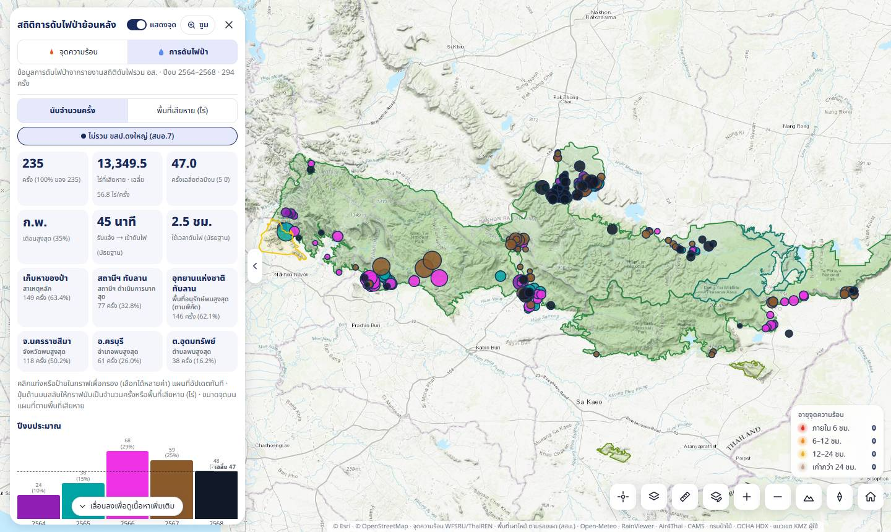
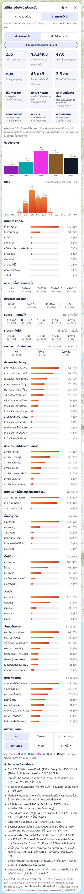
- นับจำนวนครั้ง | พื้นที่เสียหาย (ไร่) — สลับให้ทุกกราฟและการ์ด 6 ใบล่างนับเป็นจำนวนครั้งหรือรวมไร่
- การ์ดตัวเลข — จำนวนครั้ง · ไร่ที่เสียหาย (เฉลี่ยต่อครั้ง) · ครั้งเฉลี่ยต่อปีงบ · เดือนสูงสุด · รับแจ้ง → เข้าดับไฟ และใช้เวลาดับไฟ (มัธยฐาน) · สาเหตุหลัก · สถานีฯ ที่ดำเนินการมากสุด · พื้นที่อนุรักษ์ จังหวัด อำเภอ ตำบลสูงสุด — คลิกการ์ดเพื่อกรอง
- กราฟ ปีงบ (เส้นประ = เฉลี่ย) · เดือน · สาเหตุการเกิดไฟ · ขนาดพื้นที่เสียหายต่อครั้ง (≤5 / 5–20 / 20–50 / 50–100 / >100 ไร่) · ช่วงเวลารับแจ้งเหตุ · เวลาจากรับแจ้งถึงเข้าดับ · ระยะเวลาดับไฟ · พบจุดความร้อนใกล้เหตุ · ช่องทางรับแจ้งเหตุ · สถานีฯ ที่ดำเนินการ · สบอ. · พื้นที่อนุรักษ์ (ตามพิกัด) · พื้นที่ป่า (ตามรายงาน) · จังหวัด · อำเภอ/ตำบล 8 อันดับ
- คลิกแท่งหรือป้ายเพื่อกรอง เลือกได้หลายค่า · ปุ่มดงใหญ่ใช้กติกาเดียวกับจุดความร้อน · ซูม / รีเซ็ต ทำงานกับแท็บที่เปิดอยู่
- แสดงบนแผนที่ — จุด / Cluster / ความหนาแน่น (โหมดไร่ = ถ่วงน้ำหนักตามพื้นที่เสียหาย) สีตามปีงบ / สาเหตุ / ขนาดพื้นที่
- ข้อสังเกต — ปีและเดือนที่มากสุด สาเหตุหลัก สัดส่วนไฟใหญ่ ครั้งที่เสียหายมากสุด เวลาเข้าถึงและเวลาดับ ช่องทางรับแจ้ง สัดส่วนที่ดาวเทียมพบ และการเทียบปีงบล่าสุด
- ปุ่มท้ายแท็บ: ตารางรายละเอียด · ดาวน์โหลดข้อมูล (CSV 29 คอลัมน์ รวมพิกัด UTM ต้นฉบับและสถานะพิกัด) · รายงาน PDF (ตารางครั้ง+ไร่ตามพื้นที่ สาเหตุ ช่องทางรับแจ้ง เวลาปฏิบัติงาน และรายการทุกครั้ง)
การ์ดพื้นที่เฝ้าระวังพิเศษ
เปิดจากปุ่มเมนูหลัก พื้นที่เฝ้าระวังพิเศษ (แถวที่ 3) — ใช้ช่องเดียวกับการ์ดสถิติแต่ไม่มีแถบแท็บ — ติดตามรายวันและวิเคราะห์จุดความร้อนย้อนหลังของโรงเรียนนายร้อยพระจุลจอมเกล้า (พื้นที่นอกแนวเขตกลุ่มป่า) เปิดได้จากปุ่มเมนูหลัก ป้ายเหลืองในการ์ดจุดความร้อน หรือลิงก์ในแผงชั้นข้อมูล (กดปุ่มเมนูซ้ำ = ปิด) · เปิดการ์ดทุกครั้งแผนที่ซูมไปที่พื้นที่ และเมื่อเปิด/ปิดแผงชั้นข้อมูลหรือพับแผงซ้าย พื้นที่จะถูกจัดให้อยู่กลางพื้นที่ว่างของแผนที่ (การ์ดสถิติกลุ่มป่าจัดทั้งกลุ่มป่าแบบเดิม)เปิดการ์ดนี้แล้วแผนที่ซูมไปที่พื้นที่ (จุดย้อนหลังซ่อนได้ด้วยสวิตช์ "แสดงจุด" บนหัวการ์ด)
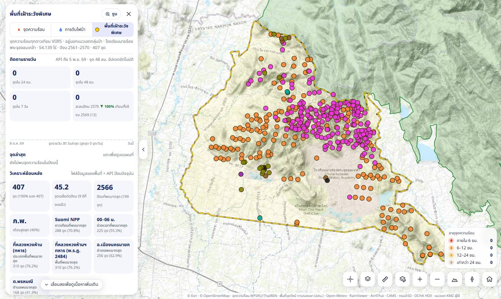
- สวิตช์ แสดงจุด หน้าปุ่มซูมบนหัวการ์ด — ค่าเริ่มต้นเปิด: จุดย้อนหลังตามตัวกรองขึ้นบนแผนที่ในรูปแบบที่เลือกใน "แสดงบนแผนที่" · ปิด = แผนที่แสดงแค่แนวเขตและจุด 48 ชม.
- ติดตามรายวัน — จุดใน 24 ชม. · 48 ชม. · 7 วัน · สะสมปีงบนี้ ▲▼% เทียบทั้งปีงบก่อน · แท่งจำนวนจุดรายวัน 30 วันล่าสุด · จุดล่าสุด 6 จุด (แตะ = ซูม/เปิดรายละเอียด; ป้าย "48 ชม." = จุดสด) · บรรทัดบนบอกวันที่ข้อมูลสะสมจาก API ล่าสุด
- เทียบไฟล์ KMZ กับ API ไทย / NASA FIRMS (กล่องพับใต้ข้อมูลคุณภาพ): จำนวนจุดรายปีงบแยกดาวเทียมของไฟล์ กับของ API/FIRMS และจำนวนที่ตรงกัน (ดาวเทียมเดียวกัน วันเดียวกัน ≤10 นาที <~440 ม.) — ปีงบ 2561–2568 ไฟล์ตรงกับ FIRMS ทุกจุด แต่ไฟล์ปีงบ 2563 มีเฉพาะ Suomi NPP (FIRMS มี NOAA-20 อีก 233 จุด) · การ์ดยังนับปีงบ ≤ 2569 จากไฟล์
- วิเคราะห์ย้อนหลัง รูปแบบเดียวกับแท็บจุดความร้อน: การ์ดตัวเลข (จำนวนจุด เฉลี่ยต่อปีงบที่จบแล้ว ปีงบและเดือนที่พบมาก ดาวเทียม ช่วงเวลา ประเภทพื้นที่ พื้นที่ อำเภอ ตำบลที่พบมาก — คลิกเพื่อกรอง) · กราฟปีงบ (เส้นประ = เฉลี่ย) · เดือน · ดาวเทียม · ช่วงเวลาที่ตรวจพบ · ประเภทพื้นที่ (ที่หลวงหวงห้าม (ทหาร) / ป่าชุมชน / อุทยานแห่งชาติ / พื้นที่อื่น) · ชื่อพื้นที่ · ในหรือนอกพื้นที่ป่า · อำเภอ · ตำบล · แหล่งข้อมูล
- แสดงบนแผนที่ — จุด / Cluster / ความหนาแน่น สีตามปีงบ / ดาวเทียม / ประเภทพื้นที่ (ขอบน้ำตาล) · ปุ่ม ซูม / รีเซ็ต ทำงานกับการ์ดนี้
- ข้อสังเกต — ปีและเดือนที่พบมาก กลางวัน/กลางคืน สัดส่วนดาวเทียมและประเภทพื้นที่ ตำบลที่พบมาก เทียบ 2 ปีงบที่จบแล้วล่าสุด ปีงบนี้เทียบช่วงเดียวกันของปีก่อน และรอบดาวเทียมที่พบจุดพร้อมกันมากสุด
- ปุ่มท้ายแท็บ: ตารางรายละเอียด · ดาวน์โหลดข้อมูล (hotspots_watch_jpr.csv) · ดาวน์โหลดภาพ · พิมพ์รายงาน (ติดตามรายวัน ภาพรวม กราฟ แผนที่ ตารางสรุป ข้อสังเกต และรายการจุด)
ย้อนดูการลามของไฟ
แผงลอยด้านล่างแผนที่ เล่นภาพเคลื่อนไหวจุดความร้อนตามเวลา มี 2 โหมด · บนคอมพิวเตอร์แผงชิดซ้ายเท่าแผงด้านซ้าย (ต่อจากการ์ดสถิติเมื่อการ์ดเปิด) ขนาดคงที่ และแผนที่ขยับให้กลุ่มป่าอยู่พ้นแผงเสมอ ทั้งตอนเปิด สลับโหมด และพับ/กางแผงซ้าย
- ปีงบปัจจุบัน / ย้อนหลังล่าสุด (ค่าเริ่มต้นเมื่อกดปุ่มเมนู "ย้อนดูการลามของไฟ" — ไม่เปิดการ์ดสถิติ และพับแผงซ้ายให้ (กางคืนเมื่อปิดแผง)): จุดความร้อนจาก API ไทย (+ NASA FIRMS ในวันที่ API ขาดข้อมูล) ทุกจุดในแนวเขต ตามปุ่มดาวเทียมและปุ่มไม่รวม ขสป.ดงใหญ่ (รวมจุดพื้นที่เฝ้าระวังพิเศษเมื่อเปิดชั้นนั้น)
- ย้อนหลังล่าสุด ปีงบนี้ (ตั้งแต่ 1 ต.ค. — ค่าเริ่มต้น) / 1 / 3 / 7 / 30 / 60 / 90 วัน · ช่วง 1–3 วันเล่นทีละชั่วโมง, 7 วันทีละ 3 ชม., ช่วงอื่นทีละวัน
- แต่ละภาพแสดงจุด สะสมตั้งแต่ต้นช่วงถึงเวลาที่แสดง จุดที่พบในช่วงล่าสุดของภาพเป็นวงแดงใหญ่ จุดเก่าเป็นวงส้มจางลงตามอายุ (ขอบเหลือง = พื้นที่เฝ้าระวังพิเศษ) · ระหว่างเล่นซ่อนไอคอนจุด 48 ชม. ชั่วคราว · บนมือถือ แผงจะแทนที่แผ่นเมนูหลักด้านล่าง (ปิดแผงแล้วแผ่นเมนูกลับมา) · โหมดสถิติย้อนหลังบนมือถือ: เลือกตัวกรองในการ์ดแล้วกด ✕ ของการ์ด = ตัวกรองและจุดยังแสดงอยู่ แผงลงไปอยู่ด้านล่างแทนแผ่นเมนู (กด สถิติย้อนหลัง เพื่อแก้ตัวกรอง, กด ✕ ของแผงเพื่อปิด ล้างจุดออกจากแผนที่ และคืนตัวกรองการ์ดสถิติเป็นค่าเริ่มต้น)
- สถิติย้อนหลัง (ปุ่ม สถิติย้อนหลัง บนหัวแผงข้างปุ่มปิด หรือปุ่ม ▶ ในการ์ดสถิติ — กางแผงซ้ายและเปิดการ์ดสถิติให้เลือกตัวกรอง): เล่นทีละวันที่มีจุดตามตัวกรองของการ์ดสถิติ (แท็บกรมอุทยานฯ = Suomi NPP จากไฟล์ Excel, แท็บทุกดาวเทียม = API ไทย + NASA FIRMS) แต่ละภาพแสดงจุดสะสมตั้งแต่ต้นปีงบของวันที่แสดง · ปุ่มย้อนหลังล่าสุดไม่ถูกเลือก (กดปุ่มใดก็ได้เพื่อกลับไปโหมดปีงบปัจจุบัน)
- บรรทัดใต้หัวแผงบอกวันเวลาของภาพ จำนวนจุดที่พบในภาพนั้นและจุดสะสม และบรรทัดถัดไปบอก ที่มาข้อมูล/ดาวเทียม/ตัวกรองที่ใช้จริง
- ▶ เล่น / หยุด · ลากแถบเลื่อนไปเวลาใดก็ได้ · ความเร็ว ×0.5 ×1 ×2 ×4 (หัวแผง ข้างปุ่มสถิติย้อนหลัง) · ปุ่ม ✕ ปิดแผง
ตาราง ดาวน์โหลดข้อมูล/ภาพ และพิมพ์รายงาน

ตารางรายละเอียด
- ช่วงข้อมูล: 24 ชม. · 48 ชม. · ปีงบปัจจุบัน (ข้อมูล API ทุกดาวเทียม) · ปีงบก่อน (ข้อมูลกรมอุทยานฯ ชุดเดียวกับการ์ด ไม่รวมจุดจัดการเชื้อเพลิง/ไม่พบไฟ)
- ดาวเทียม: "ทุกดาวเทียม" (ทุกดวงที่เปิดอยู่ในปุ่มดาวเทียม) หรือเลือกดวงเดียว · ช่วงปีงบปัจจุบันมีตัวเลือก "ตัวชี้วัด" = จุดของดาวเทียมตัวชี้วัดในแต่ละวัน (Suomi NPP ถึง 1 พ.ย. 69, NOAA-20 ตั้งแต่ 2 พ.ย. 69) ชุดเดียวกับยอดสะสมปีงบในการ์ด ใช้ตรวจว่ายอดสะสมมาจากจุดใด
- ปีงบย้อนหลัง (ทุกดาวเทียม): ช่องเลือกถัดจากปุ่มช่วงข้อมูล — ปีงบ 2561 ถึงปีงบก่อน จาก API ไทย/NASA FIRMS ทุกดาวเทียม (เลือกดวงได้) ดาวน์โหลด CSV/พิมพ์รายงานได้ · CSV มีคอลัมน์ "แหล่งข้อมูล" รายจุด · ตัวเลือก "ปีงบก่อน" แบบปุ่มยังเป็นข้อมูลกรมอุทยานฯ
- กรองตามปุ่มดงใหญ่และพื้นที่ที่เลือกในรายการการ์ด · เรียงจุดเก่าสุดก่อน · แสดง 300 แถวแรก (CSV/รายงานมีครบ) · คลิกแถวเพื่อซูมไปยังจุด
- คอลัมน์: ลำดับ วันที่เวลา ดาวเทียม ความเชื่อมั่น ตำบล/อำเภอ/จังหวัด พื้นที่อนุรักษ์ สถานีฯ พิกัด
ดาวน์โหลดข้อมูล
ไฟล์ CSV แบบ UTF-8 มี BOM เปิดด้วย Excel ได้ภาษาไทยถูกต้องทันที มีพิกัด UTM และลิงก์ Google Maps ของแต่ละจุด ชื่อไฟล์บอกช่วงและตัวกรอง
ดาวน์โหลดภาพ
ไฟล์ภาพ PNG ของแผนที่ตามตัวกรองที่เลือก — จัดให้จุดทั้งหมดตามตัวกรองอยู่กลางภาพ (ไม่มีจุด = ทั้งกลุ่มป่า) มีแถบหัวเรื่อง จำนวนจุด เงื่อนไขการกรอง และวันที่สร้าง · การ์ดจุดความร้อนใช้ช่วงข้อมูลของตาราง (24 ชม./48 ชม./ปีงบ) — ช่วงปีงบวาดจุดเป็นวงกลมสีส้มให้ด้วย · ใช้ได้ทั้งการ์ดจุดความร้อน แท็บจุดความร้อน/การดับไฟป่าของสถิติย้อนหลัง และพื้นที่เฝ้าระวังพิเศษ
พิมพ์รายงาน
- กด พิมพ์รายงาน (หรือ "พิมพ์รายงาน / บันทึก PDF" ในตาราง)
- ระบบถ่ายภาพแผนที่โดยจัดจุดตามตัวกรองที่เลือกให้อยู่กลางภาพเอง (รวมสถานีฯ จุดเฝ้าระวัง และชั้นที่เปิด) ไม่ขึ้นกับมุมมองที่ซูมอยู่ — ไม่มีจุดตามตัวกรอง = ทั้งกลุ่มป่า · รายงานพื้นที่เผาไหม้ยังใช้มุมมองที่เห็นอยู่ · เลือกชั้นข้อมูลให้เรียบร้อยก่อนกด แผนที่ฐาน "เรียบ" อ่านง่ายที่สุดเมื่อพิมพ์
- หน้าต่างพิมพ์ของเบราว์เซอร์เปิดขึ้น เลือกเครื่องพิมพ์ "บันทึกเป็น PDF" (Save as PDF) แล้วกดบันทึก
เนื้อหารายงานหลัก: สรุปตัวเลข การเทียบปีงบ กราฟ แผนที่ ตารางตามพื้นที่ พื้นที่เผาไหม้ แหล่งเชื้อเพลิง ดัชนีอันตรายไฟป่า FWI (TFDRS กรมป่าไม้ — ทุกพื้นที่อนุรักษ์ของวันที่เลือกในแผง + FWI รายวัน) และรายละเอียดจุด
พยากรณ์อากาศ Windy
ชั้นซ้อนบนแผนที่ (ปุ่ม "พยากรณ์อากาศ")
- ชิปเลือกชั้น: ลม · ฝน · อุณหภูมิ · ความชื้น · เรดาร์ · ดาวเทียม (ภาพเมฆ) · PM2.5 (CAMS) · ความเสี่ยงไฟป่า (Windy เรียก "ไฟลุกลาม" พยากรณ์ 10 วัน)
- แผนที่ | Windy — "แผนที่" (ค่าเริ่มต้น) ซูมลื่น คลิกจุดความร้อน/แนวเขตได้ตามปกติ ภาพ Windy โหลดใหม่หลังหยุดเลื่อน · "Windy" ควบคุมภาพ Windy โดยตรง (แตะดูค่าบนภาพ เลื่อนตามเวลา) แผนที่และแนวเขตเลื่อนตาม
- ขณะเปิดชั้นนี้ ซูมใกล้ได้ไม่เกินระดับที่ Windy รองรับ (ราวระดับที่เห็นทั้งอำเภอ) ปิดชั้นแล้วซูมได้ตามปกติ
- ปรับความเข้มของภาพในแผงชั้นข้อมูล · ⛶ เปิดแบบเต็มจอ · ✕ ปิดชั้น
แบบเต็มจอ
มีแท็บชั้นเดียวกัน และตารางพยากรณ์รายชั่วโมงของจุดกลางภาพ (กดปุ่มแสดงตาราง) · กดปุ่มเล่นด้านล่างของ Windy เพื่อดูพยากรณ์ล่วงหน้า · Esc ปิด · เปิดตรงได้ด้วยลิงก์ ?wy=wind
หน้าข้อมูลพื้นฐานของผืนป่า

- แท็บภาพรวม: กลุ่มป่าดงพญาเย็น-เขาใหญ่ในฐานะมรดกโลกทางธรรมชาติ (UNESCO พ.ศ. 2548) ความหลากหลายทางชีวภาพ รายการพื้นที่ เส้นทางการอนุรักษ์ ภัยคุกคาม ประชากรสัตว์ป่าสำคัญ (เสือโคร่ง ช้างป่า) ช้างป่ากับชุมชน การท่องเที่ยว ข้อมูลสำหรับนักท่องเที่ยว (ที่พักของ 4 อุทยาน) และสายด่วนแจ้งไฟป่า 1362
- แท็บรายพื้นที่อนุรักษ์ (เขาใหญ่ ทับลาน ปางสีดา ตาพระยา ดงใหญ่ เขาฉกรรจ์ โคกสูง): ขนาดพื้นที่ ความสำคัญ ประวัติ ทรัพยากรป่าไม้ (ไร่ต่อชนิดป่า) สัตว์ป่าเด่นพร้อมสถานภาพ IUCN แหล่งท่องเที่ยว (จัดกลุ่มตามประเภทของกรมอุทยานฯ เช่น น้ำตก จุดชมวิว เส้นทางศึกษาธรรมชาติ จุดพักผ่อนในเขตบริการ — แตะปุ่มประเภทด้านบนเพื่อกรองทั้งรายการและหมุดบนแผนที่ประกอบ · แตะรายการหรือหมุดดูภาพ กิจกรรม เวลาเปิด ขีดความสามารถรองรับ ช่วงปิด · ป้ายช่วงปิดประจำปี (สีส้ม = ปิดเพราะไฟป่า/หมอกควัน, สีแดง = ปิดอยู่ขณะนี้) และตารางช่วงปิดท้ายการ์ด · อุทยานท้องฟ้ามืด (เขาใหญ่ ตาพระยา) มีกล่องช่วงเดือนดูดาวและดาว ★ จุดดูดาวบนแผนที่) · การ์ด "ช้างป่ากับชุมชน" (เขาใหญ่ ทับลาน ปางสีดา ตาพระยา ดงใหญ่ และแท็บภาพรวมทั้งกลุ่มป่า: จำนวนครั้งที่ช้างป่าออกนอกพื้นที่ เสียหาย/ไม่เสียหาย ปีงบ 2566– ผู้เสียชีวิต/บาดเจ็บ (เฉพาะจำนวน) เครือข่ายเฝ้าระวัง และอำเภอที่มีปัญหา) · แท็บดงใหญ่มีการ์ด "การท่องเที่ยว" (นักท่องเที่ยวรายปีงบ 2562– พร้อมอันดับในเขตรักษาพันธุ์สัตว์ป่าทั้งประเทศ และรายได้รายเดือนตั้งแต่ปีงบ 2566) และจุดศึกษาธรรมชาติ 2 แห่ง (เขากระป็อด · เส้นทางศึกษาธรรมชาติละเลิงร้อยรู) · การ์ด "ข้อมูลสำหรับนักท่องเที่ยว" (ค่าบริการเข้าอุทยานคนไทย/ต่างชาติ ค่านำยานพาหนะเข้า ที่พักของอุทยาน และขีดความสามารถรองรับนักท่องเที่ยวรายบริเวณ — มีเฉพาะเขาใหญ่) · ประชากรเสือโคร่ง (สำรวจปี 2567) และช้างป่า (ปีงบ 2568) ในการ์ดสัตว์ป่าและแท็บภาพรวม · ผลติดตามสัตว์ป่าชนิดสำคัญปี 2564 ในการ์ดสัตว์ป่า (จำนวนบันทึกการพบ ไม่ใช่จำนวนตัว และไม่แสดงตำแหน่งเพื่อป้องกันการล่า) การท่องเที่ยว (เฉพาะ 4 อุทยานแห่งชาติ มีปุ่มสลับ "นักท่องเที่ยว | รายได้ | ยานพาหนะ | ขยะ": ยอดสะสมปีงบนี้ เทียบช่วงเดียวกันปีงบก่อนเฉพาะเดือนที่ครบ ยอดทั้งปีงบก่อนพร้อมอันดับในประเทศ สัดส่วนนักท่องเที่ยวต่างชาติ / รายได้เฉลี่ยต่อคน / นักท่องเที่ยวเฉลี่ยต่อคัน กราฟรายปีงบ (นักท่องเที่ยวตั้งแต่ปีงบ 2554 รายได้ตั้งแต่ 2557 ยานพาหนะตั้งแต่ 2559) · โหมดขยะเป็นข้อมูลรายปีงบ (2565–2568) แยกขยะทั่วไป/รีไซเคิล/อินทรีย์/อันตราย พร้อมอันดับ สัดส่วนที่คัดแยกได้ (รีไซเคิล + อินทรีย์) และขยะต่อนักท่องเที่ยว 1 คน และรายเดือนปีนี้เทียบปีก่อน — แท็บภาพรวมมีตารางเทียบ 4 อุทยาน) และสถิติไฟป่าในพื้นที่ (รายปีงบ รายเดือน สถานีฯ จุดเฝ้าระวัง) พร้อมปุ่มซูมแผนที่หลัก
- การ์ดไฟป่าในพื้นที่ มีปุ่มสลับ กรมอุทยานฯ (SNPP) (ค่าเริ่มต้น ตัวเลขทางการ) | NOAA-20 (API/FIRMS) ปีงบ 2562 ถึงปีงบก่อน
- แท็บชนิดป่าและไฟ: ลักษณะชนิดป่าแต่ละแบบกับพฤติกรรมไฟ และจำนวนจุดความร้อนตามชนิดป่า
- เปิดตรงด้วยลิงก์
?kb=ky(ky เขาใหญ่ · tl ทับลาน · ps ปางสีดา · tp ตาพระยา · dy ดงใหญ่ · ks เขาฉกรรจ์ · kc โคกสูง · ft ชนิดป่า)
เครื่องมือวัดระยะทางและพื้นที่

บนคอมพิวเตอร์
- กดปุ่ม ในปุ่มควบคุม
- คลิกบนแผนที่ทีละจุด — ระยะแต่ละช่วงแสดงบนเส้น และป้ายข้างเคอร์เซอร์บอกระยะสะสม
- ดับเบิลคลิก หรือ Enter เพื่อจบการวัดระยะ · คลิกที่จุดแรก (เมื่อมี 3 จุดขึ้นไป) เพื่อปิดรูปและวัดพื้นที่
- ลากจุดเพื่อย้ายได้ทั้งระหว่างวาดและหลังจบ ผลคำนวณใหม่ทันที · Backspace ย้อนจุดล่าสุด · Esc ปิดเครื่องมือ
- แผงผล (มุมขวาบน — ถ้าเปิดแผงชั้นข้อมูล/เครื่องมือวาด/รายละเอียดจุดอยู่ จะย้ายมาอยู่ถัดจากแผงนั้น): ไร่-งาน-ตร.ว. ตร.ม. ตร.กม. เส้นรอบรูป จำนวนจุด · ย้อนจุด / จบ / ปิดรูปพื้นที่ / ล้าง / วัดใหม่ / คัดลอกผล (พร้อมพิกัดทุกจุด)
บนมือถือ/แท็บเล็ต
กลางพื้นที่แผนที่ที่มองเห็น (ไม่นับส่วนที่แผงบัง) มีกากบาทเล็ง — เลื่อนแผนที่ให้กากบาทอยู่ตรงตำแหน่งที่ต้องการแล้วกด + เพิ่มจุด (แตะบนแผนที่ตรงๆ ก็ได้) เมื่อกากบาทเข้าใกล้จุดแรก จะดูดติดเพื่อปิดรูป
ระดับความสูงและโปรไฟล์
เมื่อวัดเสร็จ แผงผลมีหัวข้อความสูงเพิ่มให้เอง (ค่าเดียวกันขึ้นในฟอร์มหลังวาดและป๊อปอัปของวัตถุในชั้นข้อมูลของฉัน ทั้งที่วาดเองและนำเข้าจากไฟล์):
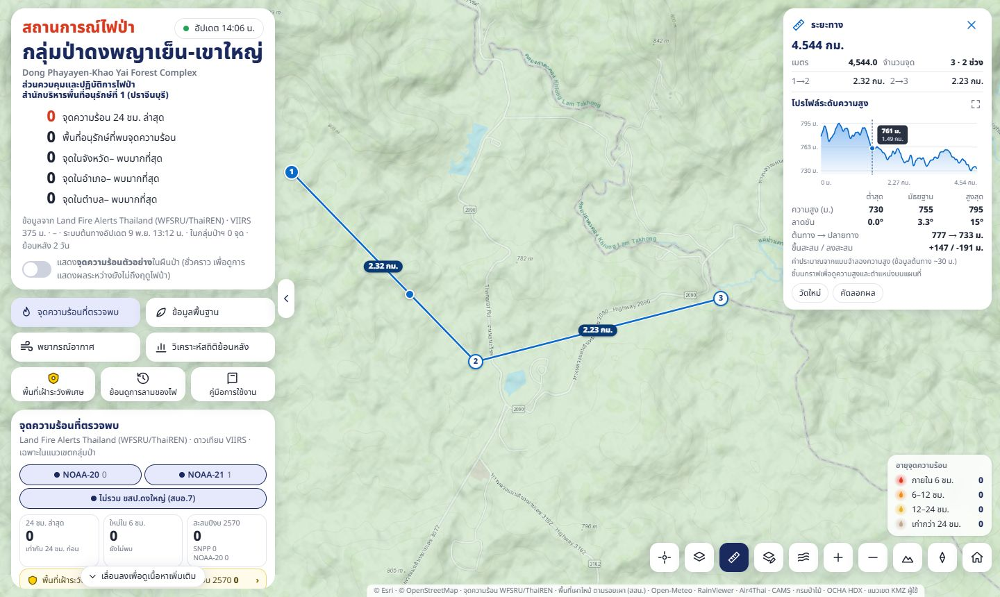
| วัตถุ | แสดง |
|---|---|
| เส้นทาง (วัดระยะ / เส้นทางที่วาด) | กราฟโปรไฟล์ระดับความสูง แกนนอน = ระยะจากจุดเริ่ม แกนตั้ง = ความสูง · ชี้หรือลากนิ้วบนกราฟ = ป้ายความสูง/ระยะ และจุดสีฟ้าบนแผนที่ตรงตำแหน่งนั้น · ปุ่ม ⛶ ขยายกราฟเต็มหน้าต่าง · ตาราง ต่ำสุด/มัธยฐาน/สูงสุด ของความสูงและความลาดชันตามแนวเส้นทาง · ความสูงต้นทาง → ปลายทาง · ขึ้นสะสม / ลงสะสม (ใช้ประเมินความเหนื่อยของเส้นทางเดินเท้า/ลาดตระเวน) |
| พื้นที่ | ต่ำสุด/มัธยฐาน/สูงสุด ของความสูงและความลาดชันทุกช่องข้อมูล (~19 ม.) ในรูป · ต่างระดับ |
| หมุด (ฟอร์มวาด/ป๊อปอัป) | ความสูงพื้นดิน · ลาดชัน (องศาและ %) · ด้านลาดหันไปทิศใด |
ลากจุดแล้วค่าจะคำนวณใหม่ (ระหว่างคำนวณค่าเดิมแสดงจางไว้) · วิธีคำนวณดูที่ การวิเคราะห์ภูมิประเทศ
วิธีคำนวณดูที่ การวัดระยะและพื้นที่
เครื่องมือวิเคราะห์ภูมิประเทศ
ปุ่ม ในปุ่มควบคุม เปิดแผง "วิเคราะห์ภูมิประเทศ" (มุมขวาบน ตำแหน่งเดียวกับแผงผลการวัด) มีเครื่องมือย่อย 3 อย่าง วิเคราะห์เฉพาะภายในขอบเขตที่วาด ใช้ประกอบการวางแผนเข้าดับไฟ ทำแนวกันไฟ เลือกเส้นทางเดินเท้า และประเมินพื้นที่ที่ไฟลามเร็ว
| เครื่องมือ | แสดงอะไร | ค่าที่เลือก |
|---|---|---|
| เส้นชั้นความสูง | เส้นที่ลากผ่านจุดที่สูงเท่ากันทุกช่วงความสูงที่กำหนด สีเหลืองทอง · เส้นหนักทุก 5 ช่วง มีตัวเลขความสูงกำกับ (ซูมเข้ามากจะมีตัวเลขทุกเส้น) · เส้นชิดกัน = ชัน เส้นห่าง = ราบ · แผงสรุปความสูงต่ำสุด–สูงสุด เฉลี่ย ต่างระดับ จำนวนระดับ ความยาวเส้นรวม | ระยะห่างเส้น 1–20 ม. (จำนวนเต็ม ค่าเริ่มต้น 10) ยิ่งน้อยยิ่งละเอียด |
| ความลาดชัน | ระบายสีความชันของพื้นที่ 7 ชั้น เขียว (ราบ) → แดงเข้ม (สูงชัน) · ตารางร้อยละ/ไร่ของแต่ละชั้น ลาดชันเฉลี่ยและสูงสุด · เลือกหน่วยเป็นองศาหรือเปอร์เซ็นต์ (ระยะตั้ง ÷ ระยะราบ × 100; 45° = 100%) | ความละเอียด 10 / 20 / 30 / 50 / 100 ม. (ค่าเริ่มต้น 30) |
| ทิศด้านลาด | ทิศที่พื้นลาดลง (ด้านที่หันหน้าไป) 8 ทิศ สีตามมาตรฐานโปรแกรม GIS ทั่วไป: เหนือแดง ตะวันออกเหลือง ใต้ฟ้า ตะวันตกน้ำเงิน · ลาดชันน้อยกว่า 2° = ราบ (เทา) · แผนภาพกุหลาบลมแสดงสัดส่วนแต่ละทิศ · ใช้ดูด้านที่ได้รับแดดบ่าย (ด้านตะวันตก/ตะวันตกเฉียงใต้แห้งเร็วกว่า) และด้านที่ลมประจำพัดปะทะ | ความละเอียดเหมือนความลาดชัน |
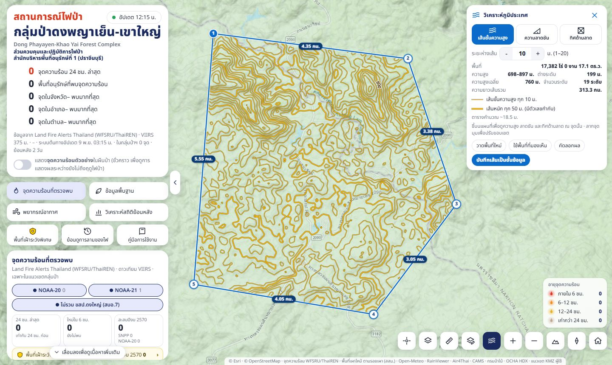
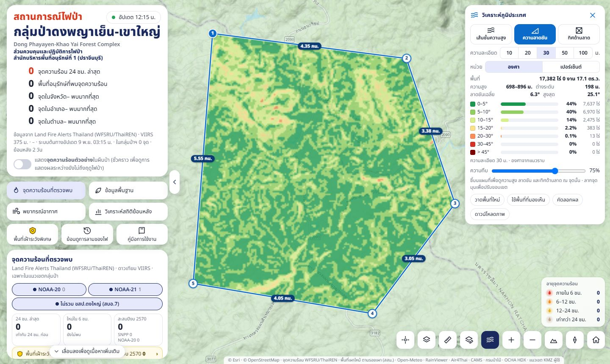
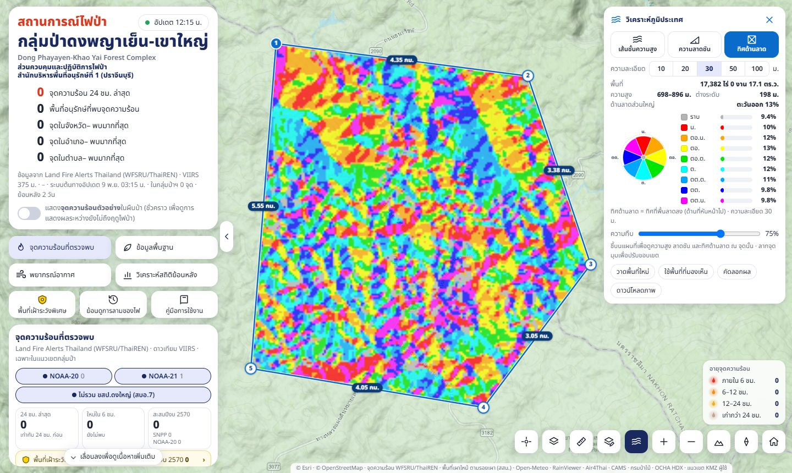
วิธีใช้
- กดปุ่ม แล้วเลือกเครื่องมือ (สลับได้ตลอด ผลคำนวณใหม่ทันที)
- กำหนดขอบเขตพื้นที่ แบบใดแบบหนึ่ง:
- วาดเอง — คลิกทีละจุดรอบพื้นที่ (มือถือ: เลื่อนกากบาทแล้วกด + เพิ่มจุด) · คลิกจุดแรก ดับเบิลคลิก หรือกด ปิดรูปและวิเคราะห์
- ใช้พื้นที่ที่มองเห็น — ใช้กรอบแผนที่ที่เห็นอยู่ (ไม่นับส่วนที่แผงบัง)
- จากเครื่องมือวัด — วัดพื้นที่เสร็จแล้วกด วิเคราะห์ภูมิประเทศ
- จากชั้นข้อมูลของฉัน — คลิกรูปหลายเหลี่ยมที่วาด/นำเข้า (เช่น แปลงจาก KMZ หรือ Shapefile) แล้วกด วิเคราะห์ภูมิประเทศ ในป๊อปอัป
- รอโหลดข้อมูลความสูง (ครั้งแรกไม่กี่วินาที) ภาพ/เส้นขึ้นเฉพาะในขอบเขต · ลากจุดมุมเพื่อปรับขอบเขตแล้วคำนวณใหม่อัตโนมัติ
- ชี้เมาส์ (มือถือ: แตะ) บนแผนที่ = ป้ายบอกความสูง ลาดชัน (องศาและเปอร์เซ็นต์) และทิศด้านลาด ณ จุดนั้น
- ปุ่มท้ายแผง: คัดลอกผล (สรุปตัวเลข + พิกัดขอบเขต UTM) · เส้นชั้นความสูง: บันทึกเส้นเป็นชั้นข้อมูล → เข้าชั้นข้อมูลของฉัน ส่งออกเป็น KMZ / Shapefile / GeoJSON ได้ (มีช่องความสูง_ม) · ความลาดชัน/ทิศด้านลาด: ดาวน์โหลดภาพ = ไฟล์ zip มีภาพ PNG + ไฟล์อ้างอิงพิกัด .pgw .prj (EPSG:3857) เปิดซ้อนใน QGIS/ArcGIS ได้ตรงตำแหน่ง + ไฟล์คำอธิบายสี · แถบความทึบปรับให้เห็นแผนที่ฐานด้านล่าง
- Esc หรือ ✕ ปิดเครื่องมือ (ล้างผลออกจากแผนที่)
วิธีคำนวณดูที่ การวิเคราะห์ภูมิประเทศ
เครื่องมือวาดและชั้นข้อมูลของผู้ใช้
ปุ่ม ในปุ่มควบคุม (หรือลิงก์ท้ายแผงชั้นข้อมูล) เปิดแผง "เครื่องมือวาดและชั้นข้อมูล" ใช้บันทึกตำแหน่งแนวกันไฟ เส้นทางลาดตระเวน พื้นที่ไฟไหม้ที่เดินสำรวจ ฯลฯ
วาด
- เลือก ปักหมุด เส้นทาง หรือ รูปหลายเหลี่ยม
- คลิกบนแผนที่ (หมุด = คลิกเดียว · เส้น = คลิกทีละจุด ดับเบิลคลิกจบ · รูปหลายเหลี่ยม = คลิกจุดแรกหรือดับเบิลคลิกจบ) บนจอสัมผัสใช้กากบาท + ปุ่ม "+ เพิ่มจุด" เหมือนเครื่องมือวัด
- ป้อนพิกัดเอง (กด "ป้อนพิกัดเอง" ในแผง): เลือก ละติจูด, ลองจิจูด (ค่าเริ่มต้นเป็น UTM · ทศนิยม เช่น 14.412345, 101.512345 หรือองศา ลิปดา ฟิลิปดา เช่น 14°24'44"N, 101°30'44"E — ใส่สลับลำดับมาระบบสลับให้) หรือ UTM (E N) WGS84 โซน 47N/48N (เช่น 812345 1612345 · ใส่โซนนำหน้าได้ เช่น 48 188000 1600000) บรรทัดละ 1 จุด (ใส่เลขลำดับนำหน้าได้ เช่น
1) 837482 1603310) แล้วกดปุ่ม — หมุด = 1 บรรทัด, เส้นทาง/รูปหลายเหลี่ยม = หลายบรรทัดเรียงตามลำดับ (ผสมกับการคลิกบนแผนที่ได้) · บรรทัดที่อ่านไม่ได้จะแจ้งเลขบรรทัดและยังไม่เพิ่มจุดใด - กรอกฟอร์ม: ชื่อ รายละเอียด สี ชั้นที่จะบันทึก และข้อมูลเพิ่มเติม (ชื่อช่อง–ค่า) · ระหว่างนี้ลากจุดเพื่อแก้รูป ลากจุดกลางเส้นเพื่อเพิ่มจุด ดับเบิลคลิกจุดเพื่อลบ · กล่อง "ป้อนพิกัดเอง" ในฟอร์มแสดงพิกัดทุกจุดพร้อมเลขลำดับตรงกับเลขบนจุด แก้ตัวเลขแล้วกดปุ่มเพื่อย้ายจุดตามพิกัดได้ (แก้ไขวัตถุเดิมก็ใช้ได้)
- กด บันทึก แล้ววาดต่อได้ทันที
ฟอร์มหลังวาดและป๊อปอัปของวัตถุมีระดับความสูง/โปรไฟล์ด้วย (หมุด = ความสูงพื้นดิน · เส้นทาง = กราฟโปรไฟล์ · พื้นที่ = ต่ำสุด/มัธยฐาน/สูงสุด) · รูปพื้นที่กด วิเคราะห์ภูมิประเทศ ในป๊อปอัปได้
คลิกวัตถุที่วาดแล้ว → ป๊อปอัปแสดงระยะ/พื้นที่ พิกัด UTM (ก่อนละติจูด/ลองจิจูด) ข้อมูล ปุ่ม แชร์ คัดลอกพิกัด (UTM เป็นหลัก) แก้ไข ลบ นำทาง
แชร์
กด แชร์ ในป๊อปอัป หรือแตะข้อความ "แตะเพื่อแชร์" ที่ขึ้นหลังบันทึก → หน้าต่างแชร์มีภาพแผนที่ของวัตถุ (ไฮไลต์เหลือง แถบล่างบอกชื่อและพิกัด UTM) และข้อความที่แก้ได้ก่อนส่ง: ชื่อ ชนิด รายละเอียด พื้นที่/ความยาว พิกัด UTM ทุกจุดพร้อมเลขลำดับ (ตามด้วยละติจูด/ลองจิจูด) ข้อมูลเพิ่มเติม ลิงก์ Google Maps และลิงก์แผนที่ไฟป่า
- แชร์… (มือถือ/เบราว์เซอร์ที่รองรับ) เลือกแอปในเครื่อง เช่น LINE, Messenger, อีเมล — ส่งข้อความพร้อมภาพแผนที่
- LINE บนมือถือเปิดแอป LINE ให้เลือกห้อง · บนคอมพิวเตอร์ (LINE PC รับลิงก์แชร์ไม่ได้) ระบบคัดลอกข้อความให้ทันทีและแสดงขั้นตอน: เปิด LINE → กด "คัดลอกภาพแผนที่" แล้ว Ctrl+V ในห้องแชต → กด "คัดลอกข้อความ" แล้ว Ctrl+V
- Telegram อีเมล ส่งข้อความพร้อมลิงก์ · Facebook แชร์ได้เฉพาะลิงก์แผนที่
- คัดลอกข้อความ ดาวน์โหลดภาพแผนที่ ดาวน์โหลด KMZ (เปิดใน Google Earth) สำหรับแนบเอง
ถ้าป้อนพิกัด UTM เอง ระบบจำโซนที่ใช้ แล้วแสดง/แชร์/คัดลอกด้วยโซนเดียวกัน (ค่าตรงกับที่ป้อน) · วาดด้วยการคลิก = ใช้โซนตามตำแหน่ง (ตะวันตกของ 102° = 47, ตะวันออก = 48) (พื้นที่ขนาดใหญ่จะแสดงเป็นบรรทัดบนสุดของป๊อปอัปตำแหน่งแทน เพื่อไม่บังข้อมูลอื่น)
จัดการชั้น นำเข้า ส่งออก
- ในเครื่องนี้ — ชั้นที่สร้าง/นำเข้าเก็บในเบราว์เซอร์นั้นเท่านั้น (ล้างข้อมูลเบราว์เซอร์ = หาย ควรส่งออกสำรองไว้) · เปิด/ปิด ซูม เปลี่ยนชื่อ สี ลบ แต่ละชั้น
- นำเข้าไฟล์ หรือลากไฟล์มาวางที่แผง: GeoJSON, Esri JSON, KML/KMZ (สี โฟลเดอร์ ข้อมูลเพิ่มเติม), GPX, Shapefile (.zip หรือเลือก .shp .dbf .prj พร้อมกัน — รองรับ UTM 47/48, Indian 1975, ภาษาไทย TIS-620/UTF-8), CSV (คอลัมน์ละติจูด/ลองจิจูด หัวไทยได้, องศาลิปดา, UTM x/y + โซน หรือ WKT)
- ส่งออก…: KMZ/KML (Google Earth), Shapefile (เลือก WGS84 หรือ UTM 47N/48N, แยกไฟล์จุด/เส้น/พื้นที่), GeoJSON, GPX (เครื่อง GPS), CSV
- จากเซิร์ฟเวอร์ — ชั้นข้อมูลกลางที่ผู้ดูแลระบบอัปโหลดให้ เปิดดูได้ตามสิทธิ์ (บางชั้นทุกคน บางชั้นต้องล็อกอินหรือเฉพาะกลุ่ม) ผู้ใช้ทั่วไปดูและส่งออกได้ แต่แก้ไขไม่ได้ · ปุ่ม ↻ ดึงรายการใหม่ · บัญชีผู้ใช้ขอได้จากผู้ดูแลระบบ
พิมพ์แผนที่
ปุ่ม ในปุ่มควบคุม (หรือลิงก์ พิมพ์แผนที่ · จัดหน้า บันทึกเป็น PDF/ภาพ/KMZ → ท้ายแผงชั้นข้อมูล) เปิดหน้าจัดพิมพ์เต็มจอ: ซ้ายเป็นหน้ากระดาษจำลอง ขวาเป็นแผงตั้งค่า (ชื่อหน้าและปุ่มปิดอยู่บนแผง ปุ่มพิมพ์/บันทึกอยู่ท้ายแผงเสมอ) แผนที่ในกรอบใช้แผนที่ฐานและชั้นข้อมูลชุดเดียวกับที่เปิดอยู่บนแผนที่หลักขณะกดปุ่ม (รวมสถานีฯ จุดเฝ้าระวัง หน่วยพิทักษ์ ชั้นข้อมูลของฉัน และผลเครื่องมือวัด/วิเคราะห์ภูมิประเทศ)
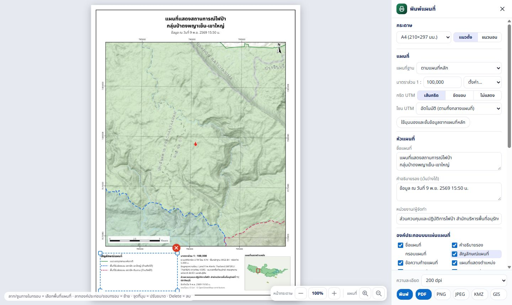
ส่วนประกอบของแผ่นแผนที่
- หัวแผนที่ ชื่อแผนที่ (หลายบรรทัดได้) และคำอธิบายรอง (ค่าเริ่มต้น "ข้อมูล ณ วันที่ …") — ดับเบิลคลิกที่หัวกระดาษเพื่อไปช่องแก้ไข
- กรอบแผนที่ พร้อมค่าพิกัดกริด UTM รอบกรอบ (เส้นกริด / ขีดขอบ / ไม่แสดง ระยะห่างเลือกให้อัตโนมัติ 4–7 เส้น เลือกโซน 47N/48N ได้)
- ลูกศรทิศเหนือ · แถบมาตราส่วน (ความยาวแถบเป็นค่าลงตัวที่พอดีกล่อง)
- สัญลักษณ์แผนที่ สร้างจากชั้นที่แสดงอยู่และอยู่ในกรอบ (แนวเขต พื้นที่รับผิดชอบรายสถานีฯ จุดความร้อนตามอายุ พื้นที่เผาไหม้ ชั้นข้อมูลของฉัน ไอคอนสถานีฯ ฯลฯ) — ติ๊กออกเพื่อซ่อนรายการ แก้คำอธิบาย หรือ + เพิ่มรายการเอง · แถวไม่พอในกล่อง = เพิ่มคอลัมน์ให้เอง
- ข้อความท้ายแผนที่ มาตราส่วน ระบบพิกัด ระยะกริด หมายเหตุ หน่วยงาน วันที่จัดทำ ที่มาแผนที่ฐาน · แผนที่แสดงตำแหน่ง (กรอบแดง = ขอบเขตของแผ่น) · กรอบรอบแผ่น
- ที่เพิ่มเองได้: กล่องข้อความ · สัญลักษณ์ 13 แบบ (ไฟ หมุด ดาว ธง สามเหลี่ยม วงกลม สี่เหลี่ยม กากบาท ลูกศร ค่ายพัก อาคาร แหล่งน้ำ ลานจอด ฮ.) · รูปภาพ/โลโก้ (ไฟล์ภาพจากเครื่อง ย่อเหลือไม่เกิน 800 พิกเซล)
จัดวางองค์ประกอบได้อิสระ
- แตะ/คลิกองค์ประกอบบนหน้ากระดาษ = เลือก (กรอบประสีฟ้า) แล้วลากเพื่อย้าย · ลากจุดที่มุม/ขอบเพื่อปรับขนาด (ข้อความปรับความกว้าง ลูกศร/สัญลักษณ์ปรับขนาด รูปภาพคงสัดส่วน — กด Shift ค้างเพื่อปรับอิสระ)
- กรอบแผนที่: ลากขอบกรอบเพื่อย้าย (ลูกศรทิศเหนือและแถบมาตราส่วนที่อยู่ในกรอบย้ายตามไปด้วย) ลากมุมเพื่อปรับขนาด — มาตราส่วนคงเดิม พื้นที่ที่เห็นกว้างขึ้นตามกรอบ · ลาก/ซูมภายในกรอบ = เลือกพื้นที่แผนที่
- ลบ: ปุ่ม ✕ สีแดงบนองค์ประกอบที่เลือก หรือกด Delete · เพิ่มกลับ: ติ๊กในรายการ "องค์ประกอบบนแผ่นแผนที่" · ←↑→↓ เลื่อนทีละ 0.5 มม. (Shift = 5 มม.) · Esc ยกเลิกการเลือก
- กล่องแก้ไขใต้รายการ: ขนาดตัวอักษร การจัดแนว สี ตัวหนา กรอบพื้นขาว มุมหมุน ตามชนิดองค์ประกอบที่เลือก · จัดหน้าตามแม่แบบ วางทุกองค์ประกอบกลับตำแหน่งเริ่มต้นของกระดาษนั้น (เปลี่ยนขนาด/แนวกระดาษ = จัดตามแม่แบบของกระดาษใหม่)
ดูหน้ากระดาษ
ปุ่มบนหัวแผงขวา (ข้างปุ่มปิด): หน้ากระดาษ − / % / + ย่อ-ขยายหน้ากระดาษเพื่อดูรายละเอียด (กดตัวเลข % = พอดีจอ · Ctrl+ล้อเมาส์นอกกรอบแผนที่ก็ได้ · ขยายแล้วเลื่อนดูด้วยแถบเลื่อน) และแว่นขยาย +/− ซูมเข้า/ออกเฉพาะแผนที่ในกรอบ · แถบคำแนะนำแถวเดียวอยู่ใต้หน้ากระดาษ (ไม่ทับแผนที่)
วิธีใช้
- เลือกขนาดกระดาษ (A4 A3 A2 A1 Letter) และแนวตั้ง/แนวนอน
- เลือกแผนที่ฐาน (ตามแผนที่หลัก / ธรรมชาติ / เรียบ / ดาวเทียม / ถนน/ชุมชน / โทนมืด / ไม่มี — พื้นขาว) ชั้นข้อมูลอื่นคงเดิม
- ลาก/ซูมแผนที่ในกรอบ หรือพิมพ์มาตราส่วน (เช่น 50000) / เลือกจากรายการ 1 : 5,000 – 1 : 500,000 · ใช้มุมมองและชั้นข้อมูลจากแผนที่หลัก ดึงมุมมองและชั้นข้อมูลล่าสุดมาใหม่
- แก้หัวแผนที่/ข้อความ จัดวางองค์ประกอบ เพิ่มกล่องข้อความ/สัญลักษณ์/รูปภาพตามต้องการ (ค่าทั้งหมดจำไว้ในเบราว์เซอร์ · คืนค่าเริ่มต้นของหน้าจัดพิมพ์ทั้งหมด)
- ท้ายแผง: เลือกความละเอียด 96 / 150 / 200 / 300 dpi แล้วกดรูปแบบที่ต้องการ
| ปุ่ม | ได้อะไร |
|---|---|
| พิมพ์ | เปิดหน้าต่างพิมพ์ของเบราว์เซอร์ ขนาดกระดาษและแนวตั้งไว้ให้แล้ว (ตั้งขอบกระดาษ "ไม่มี" และสเกล 100% ถ้าเครื่องพิมพ์ถาม) · เลือก "บันทึกเป็น PDF" ได้ |
| ไฟล์ PDF หน้าเดียวขนาดตรงกระดาษ ดาวน์โหลดทันทีไม่ผ่านหน้าต่างพิมพ์ (แผนที่ทั้งแผ่นเป็นภาพ) | |
| PNG JPEG | ภาพทั้งแผ่น ฝังค่าความละเอียด dpi ในไฟล์ (เปิดในโปรแกรมพิมพ์/Word ได้ขนาดจริง) · PNG คมกว่า JPEG ไฟล์เล็กกว่า |
| KMZ | ภาพเฉพาะกรอบแผนที่ วางซ้อนใน Google Earth ตรงตำแหน่ง (GroundOverlay) |
| GIS | ไฟล์ zip: ภาพเฉพาะกรอบแผนที่ map.png + map.pgw (world file) + map.prj (EPSG:3857 Web Mercator) เปิดใน QGIS/ArcGIS ได้ตรงตำแหน่ง |
มาตราส่วนคิดที่ละติจูดกึ่งกลางแผนที่ (แผนที่ฐานเป็นเมอร์เคเตอร์ ขอบบน-ล่างต่างจากกึ่งกลางเล็กน้อย) · เส้นกริด UTM คำนวณจริงจึงเอียงเล็กน้อยเทียบกับขอบกรอบ (มุมเบี่ยงกริด) · ภาพละเอียดสูงบนกระดาษใหญ่ใช้หน่วยความจำมาก ถ้าสร้างไม่ได้ระบบแจ้ง ให้ลด dpi · ป้ายชื่อของแผนที่ฐานมีขนาดเท่าบนหน้าจอที่ 96 dpi (ตัวหนังสือบนกระดาษ ≈ 2.5–3 มม.)
ลิงก์ตรงไปยังตำแหน่งหรือหน้า
เติมต่อท้ายที่อยู่เว็บ (เช่น …/fire-map-dpky/?ar=tl) เพื่อส่งให้ผู้อื่นเปิดตรงไปยังสิ่งที่ต้องการ (การ์ด LINE และ Telegram ใช้ลิงก์เหล่านี้)
| ลิงก์ | ผล |
|---|---|
?hs=14.49,101.31 | เปิดแผงรายละเอียดของจุดความร้อน ณ พิกัดนั้น (ถ้าจุดเก่ากว่า 48 ชม. จะซูมไปและวงตำแหน่งให้แทน) |
?bb=ตะวันตก,ใต้,ตะวันออก,เหนือ | ซูมให้เห็นกรอบพิกัดนั้น |
?pts=14.5533,102.0730;14.4000,101.4000 | จุดความร้อนจากข้อความแจ้งเตือน (ปุ่ม "📍 ดู N จุด" ใน Telegram/LINE): ซูมให้เห็นทุกจุด มีวงแดงล้อมเฉพาะจุดในข้อความ (หายเองใน 5 นาที) และป้ายด้านบนบอกจำนวนรายพื้นที่ — แตะป้ายเพื่อดูรายการจุดแยกตามพื้นที่อนุรักษ์ (เปิดซ้ำได้เรื่อยๆ) แตะชื่อพื้นที่เพื่อซูมดูเฉพาะพื้นที่นั้น แตะแต่ละจุดเพื่อเปิดรายละเอียด · ป้ายและวงอยู่จนกด ✕ หรือครบ 30 นาที |
?ar=ky | ซูมไปที่พื้นที่อนุรักษ์ (ky tl ps tp dy ks kc) |
?burn=20261022_20261028 | เปิดชั้นพื้นที่เผาไหม้ของรอบนั้น (รหัสรอบ = วันเริ่ม_วันสิ้นสุด, หรือ fy2570 สะสมทั้งปีงบ) แล้วซูมไปที่รอยเผา พร้อมป้ายบอกไร่และจำนวนพื้นที่อนุรักษ์ · บนคอมพิวเตอร์เปิดแผงชั้นข้อมูลที่ตัวเลขพื้นที่เผาไหม้ให้ด้วย · บนมือถือแตะป้ายเพื่อเปิดแผง |
?wa=jpr | เปิดชั้นพื้นที่เฝ้าระวังพิเศษ (โรงเรียนนายร้อยพระจุลจอมเกล้า) แล้วซูมไปที่พื้นที่ · ใช้คู่กับ &pts= ได้ (ปุ่มในการ์ด LINE/ข้อความ Telegram ของพื้นที่นี้) |
?kb=tl | เปิดหน้าข้อมูลพื้นฐานที่แท็บนั้น |
?wy=rain | เปิด Windy เต็มจอที่ชั้นนั้น |
การแจ้งเตือนผ่าน LINE และ Telegram
ระบบส่งข้อความเข้ากลุ่มสนทนาโดยอัตโนมัติ (ผู้ดูแลระบบเป็นผู้เพิ่มบอทเข้ากลุ่ม)
| ข้อความ | เมื่อไร / เนื้อหา |
|---|---|
| แจ้งเตือนจุดใหม่ | เมื่อมีจุดความร้อนใหม่ในแนวเขต (ตรวจทุกรอบประมาณ 5 นาที, จุดที่ตรวจพบภายใน 12 ชม., ไม่รวม ขสป.ดงใหญ่) · LINE: การ์ด 7 ใบ (ภาพรวม + 6 พื้นที่อนุรักษ์ พื้นที่ที่มีจุดใหม่ขึ้นก่อน) · Telegram: ข้อความรายจุด แยกตามพื้นที่ พร้อมลิงก์ 📍 Google Maps และ 🔥 แผนที่ไฟป่า และตารางสะสมปีงบเทียบปีก่อน |
| สรุปประจำวัน | ทุกเช้า 05:30 น. — ยอด 24 ชม. สะสมปีงบ เทียบปีก่อนทั้งปีงบ จังหวัด/อำเภอ/ตำบลสูงสุด กราฟรายเดือน บรรทัด ดาวเทียมรอบถัดไป (เวลาที่ NOAA-20/21 จะสแกนผ่านกลุ่มป่าใน 24 ชม. ข้างหน้า) และอัตราการระบายอากาศของกลุ่มป่า (NOAA GFS): ค่าสูงสุดของวันแต่ละวันถึง 5 วันระบายสีตามเกณฑ์กรมอุตุฯ + บรรทัด "วันนี้" บอกช่วงเวลาที่ระบายได้ (≥2,000) และค่าเฉลี่ยทั้งวัน · ค่าของกลุ่มป่า = ค่าเฉลี่ยภายในแนวเขตพื้นที่อนุรักษ์ ชุดเดียวกับแถว "กลุ่มป่าฯ" ในแผงชั้นข้อมูล · ดัชนีอันตรายไฟป่า FWI (TFDRS กรมป่าไม้): ค่าเฉลี่ยกลุ่มป่าวันนี้และพรุ่งนี้ระบายสีตาม 5 ระดับ พร้อมค่าสูงสุดในพื้นที่ + บรรทัด "วันนี้" บอกสัดส่วนพื้นที่ระดับสูงขึ้นไป พื้นที่อนุรักษ์ที่ค่าสูงสุด และอากาศเที่ยงวัน (ไม่แสดงถ้าข้อมูลกรมป่าไม้ไม่มีวันนี้) · PM2.5 แบบจำลอง CAMS (Copernicus/ECMWF): ค่าเฉลี่ย 24 ชม. ของกลุ่มป่าวันนี้และอีก 2 วันระบายสีตามระดับของกรมควบคุมมลพิษ พร้อมค่าสูงสุดราย 3 ชม. + บรรทัด "วันนี้" ค่ารายอุทยาน (ค่าแบบจำลอง ไม่ใช่ค่าตรวจวัด) |
| พื้นที่เฝ้าระวังพิเศษ | เมื่อพบจุดความร้อนใหม่ในโรงเรียนนายร้อยพระจุลจอมเกล้า (กติกาเดียวกับแจ้งเตือนจุดใหม่ ทุกดาวเทียม) — LINE ส่งเป็นการ์ดแยกในครั้งเดียวกับการ์ดกลุ่มป่า (ไม่เสียโควตาเพิ่ม) · Telegram ส่งเป็นข้อความแยก · สรุปประจำวันแนบยอดของพื้นที่นี้ด้วย (24 ชม. สะสมปีงบ ทั้งปีงบก่อน จุดล่าสุด) |
| พื้นที่เผาไหม้ | เมื่อมีข้อมูลรอบ 7 วันใหม่ที่มีรอยเผา ≥ 1 ไร่ — ไร่ในรอบ % ที่มีจุดความร้อนใกล้ สะสมปีงบ พื้นที่ที่ไหม้มากสุด และสถานีฯ 3 อันดับ |
คำสั่งในกลุ่ม LINE (พิมพ์หรือกดปุ่มด่วนเหนือช่องพิมพ์)
| พิมพ์ | บอทตอบ |
|---|---|
สรุป | การ์ดสรุปสถานการณ์ล่าสุด |
เผาไหม้ | การ์ดพื้นที่เผาไหม้รอบล่าสุด |
เฝ้าระวัง หรือ จปร | การ์ดพื้นที่เฝ้าระวังพิเศษ (โรงเรียนนายร้อยพระจุลจอมเกล้า) — คำว่า สรุป ก็แนบการ์ดนี้ต่อท้าย |
ช่วยเหลือ หรือ วิธีใช้ | รายการคำสั่ง |
การตอบคำสั่งไม่นับโควตาข้อความของ LINE ส่วนการแจ้งเตือนอัตโนมัตินับโควตาตามจำนวนสมาชิกกลุ่ม (ฟรีราว 300 ข้อความ/เดือน) — แจ้งเตือนทุกครั้งที่ดาวเทียมพบจุดใหม่ ไม่จำกัดครั้งต่อวัน ถ้าโควตาเดือนนั้นหมด LINE จะหยุดแจ้งเตือนจนขึ้นเดือนใหม่ (Telegram ไม่มีโควตา แจ้งต่อได้ตามปกติ) ปุ่มในการ์ดเปิดแผนที่ตรงไปยังจุดหรือพื้นที่นั้น
ข้อมูลและวิธีคิด
จุดความร้อนจากดาวเทียม
- เครื่องวัด: VIIRS (Visible Infrared Imaging Radiometer Suite) บนดาวเทียม Suomi NPP, NOAA-20 (JPSS-1) และ NOAA-21 (JPSS-2) ใช้แบนด์อินฟราเรดความละเอียด 375 ม. หนึ่งจุด = พิกเซลราว 375×375 ม. (ราว 88 ไร่) ที่มีความร้อนผิดปกติ ตำแหน่งจริงของไฟอาจอยู่ที่ใดก็ได้ในพิกเซล และคลาดเคลื่อนเพิ่มขึ้นที่ขอบแนวสแกน
- เวลาผ่าน: ดาวเทียมวงโคจรขั้วโลกผ่านประเทศไทยวันละ 2 ช่วงต่อดวง ประมาณ 01:00–03:00 น. และ 12:00–14:30 น. (ดวงต่างๆ ห่างกันราว 50 นาที) ไฟที่เกิดและดับระหว่างรอบ หรือไฟใต้เรือนยอด/เมฆหนา อาจตรวจไม่พบ
- ความเชื่อมั่น (low / nominal / high) มาจากอัลกอริทึมตรวจจับ — ต่ำ = อาจเป็นสัญญาณรบกวนหรือพื้นผิวร้อน
- แหล่งข้อมูล: Land Fire Alerts Thailand ของหน่วยวิจัยไฟป่า (WFSRU) / ThaiREN ซึ่งระบุตำบล อำเภอ จังหวัด และพื้นที่ป่าให้แต่ละจุดแล้ว
- กรองเฉพาะในแนวเขต: ระบบเก็บและแสดงเฉพาะจุดที่อยู่ในแนวเขตพื้นที่อนุรักษ์หรือพื้นที่รับผิดชอบสถานีฯ (จากไฟล์ KMZ ของหน่วยงาน)
การรับข้อมูลและการอัปเดต
- ระบบบน GitHub Actions ดึงข้อมูล 48 ชม. ทั้งประเทศทุกประมาณ 5 นาที (cron-job.org สั่งรัน แต่ละรอบใช้ราว 35 วินาที) กรองในแนวเขต แล้วเผยแพร่เป็นไฟล์
live.json· หน้าเว็บอ่านไฟล์นี้ก่อน ถ้าเก่ากว่า 40 นาทีจะดึงจาก API โดยตรง - หน้าเว็บที่เปิดค้างไว้ดึงข้อมูล 3 ชม. ล่าสุดทุก 5 นาที และดึงเต็ม 48 ชม. ทุก 30 นาที (หยุดดึงเมื่อสลับไปแท็บอื่น และดึงทันทีเมื่อกลับมา)
- ข้อมูลสะสม (ยอดปีงบ ตารางปีงบ กองจุด ภาพดาวเทียมย้อนหลัง) — ระบบดึงย้อนหลังรายวันวันละ 4 รอบ (06:17, 09:17, 15:17, 18:17 น.) เก็บทุกดาวเทียมตั้งแต่ 1 ต.ค. 2568 และดึงซ้ำ 7 วันล่าสุดทุกรอบเพื่อเติมจุดที่ตกหล่น
- แหล่งสำรอง: วันที่ API ไทยไม่มีข้อมูลดาวเทียมดวงใด ระบบเติมจาก NASA FIRMS (ป๊อปอัปจุดบอก "ที่มา: NASA FIRMS") และลบออกเมื่อ API ไทยมีข้อมูลแล้ว
- ตัดจุดซ้ำ: API ไทยบางช่วงมีจุดเดียวกัน 2 ระเบียน (ดาวเทียมและวันเดียวกัน เวลาต่าง 1–3 นาที ห่างไม่เกิน ~165 ม.) ระบบเก็บไว้ระเบียนเดียว
ดาวเทียมตัวชี้วัดและปีงบประมาณ
- ปีงบประมาณ = 1 ต.ค. ถึง 30 ก.ย. ปีถัดไป (ปีงบ 2570 = 1 ต.ค. 2569 – 30 ก.ย. 2570)
- กรมอุทยานแห่งชาติฯ ใช้จุดจาก Suomi NPP เป็นตัวชี้วัด · Suomi NPP หยุดส่งข้อมูลถาวร 2 พ.ย. 2569 จึงใช้ NOAA-20 แทนตั้งแต่วันที่ 2 พ.ย. 2569 ทั้งวัน
- ยอดสะสมปีงบในการ์ด/LINE/Telegram = จุดของดาวเทียมตัวชี้วัดในแต่ละวัน (ก่อน 2 พ.ย. 2569 = SNPP, ตั้งแต่นั้น = NOAA-20) ส่วนแผนที่แสดงทุกดวง
- ข้อควรรู้: ดาวเทียมแต่ละดวงตรวจพบจำนวนจุดต่างกันเล็กน้อย ยอดปีที่ใช้ NOAA-20 จึงเทียบกับปีก่อนที่ใช้ SNPP ได้ในเชิงแนวโน้ม แต่ไม่ใช่ชุดเดียวกันพอดี
การเทียบกับปีก่อนและค่าเฉลี่ย
- ปีก่อน ใช้ข้อมูลจุดความร้อนของกรมอุทยานฯ (ไฟล์ Excel ปีงบ 2561–2569, Suomi NPP) ซึ่งผ่านการตรวจสอบภาคสนาม ไม่รวมจุดที่มีการจัดการเชื้อเพลิง (ชิงเผา) และจุดที่ตรวจสอบแล้วไม่พบไฟ — ปีงบ 2569 จึงนับ 120 จาก 133 จุด (83 จุดเมื่อไม่รวมดงใหญ่)
- ช่วงเวลาเดียวกัน = 1 ต.ค. ถึงวันที่เดียวกันของปีก่อน · ทั้งปีงบก่อน = ทั้ง 12 เดือน
- ค่าเฉลี่ย 3 ปี / 5 ปี / ทุกปีงบ = เฉลี่ยของปีงบที่จบแล้ว (รวมปีงบก่อน)
- % เปลี่ยนแปลง = (ปีนี้ − ปีก่อน) ÷ ปีก่อน × 100 · ปีก่อนเป็น 0 แต่ปีนี้มีจุด = "▲ ใหม่"
- ปีปัจจุบัน (จาก API) ยังไม่มีข้อมูลการตรวจสอบภาคสนาม จึงนับทุกจุด
- ปุ่มแหล่งข้อมูลใต้หัวข้อ "เทียบปีงบประมาณ": กรมอุทยานฯ (Suomi NPP) (ค่าเริ่มต้น — ตัวเลขทางการ ปีนี้นับตามดาวเทียมตัวชี้วัด) หรือ NOAA-20 ทุกปี — ทุกปีงบรวมปีนี้นับเฉพาะ NOAA-20 ทุกจุดในแนวเขต (API ไทยตั้งแต่ 3 ส.ค. 2567, NASA FIRMS ก่อนหน้านั้น) จึงเทียบด้วยดาวเทียมดวงเดียวกับตัวชี้วัดใหม่ (ตั้งแต่ 2 พ.ย. 2569) ได้ตรงกว่า · ค่าเฉลี่ยเริ่มปีงบ 2562 (NOAA-20 มีข้อมูลตั้งแต่ เม.ย. 2561) · ไม่ตัดจุดจัดการเชื้อเพลิง/ไม่พบไฟ (ไม่มีข้อมูลนี้) ตัวเลขจึงสูงกว่าโหมดกรมอุทยานฯ เช่น ปีงบ 2569 ทั้งปี NOAA-20 113 จุด เทียบกรมอุทยานฯ 83 จุด (ไม่รวม ขสป.ดงใหญ่) · ไทล์ "สะสมปีงบ" ด้านบนยังเป็นตัวชี้วัดเสมอ
กติกาการจัดพื้นที่
- พื้นที่อนุรักษ์/สถานีฯ: หาว่าพิกัดของจุดอยู่ในแนวเขตใด (จากไฟล์ KMZ แนวเขตพื้นที่อนุรักษ์ สบอ.1, ขสป.ดงใหญ่ และพื้นที่รับผิดชอบไฟป่า ปี 2570) จุดนอกแปลงรับผิดชอบเรียกว่า "พื้นที่ไม่มีสถานีฯไฟป่ารับผิดชอบ"
- สบอ. แยกตามจังหวัดที่เกิดจุด: สบอ.1 (ปราจีนบุรี) = ปราจีนบุรี นครนายก สระแก้ว · สบอ.1 สาขาสระบุรี = สระบุรี · สบอ.7 (นครราชสีมา) = นครราชสีมา บุรีรัมย์
- "ไม่รวม ขสป.ดงใหญ่" ตัดจุดที่อยู่ในเขตรักษาพันธุ์สัตว์ป่าดงใหญ่ หรืออยู่นอกพื้นที่อนุรักษ์แต่ในพื้นที่รับผิดชอบของสถานีฯ ดงใหญ่
- ตำบล อำเภอ จังหวัด: ใช้ชื่อจาก API ถ้ามี ไม่มีจึงหาจากแนวเขตการปกครอง (กรมการปกครอง ผ่าน OCHA HDX ฉบับ 2565)
การจัดกองจุดความร้อน
- เชื่อมจุดสองจุดเข้ากองเดียวกันเมื่อห่างกันไม่เกิน D กม. (และสำหรับกองรวม เกิดห่างกันไม่เกิน G วัน) แบบลูกโซ่ (single-linkage / union-find) — จุด A ใกล้ B และ B ใกล้ C ทั้งสามจุดเป็นกองเดียวกันแม้ A ห่าง C เกิน D
- จุดเริ่มต้นไฟ = จุดในรอบดาวเทียมแรกสุดของกองรวม (ถ้ามีหลายจุดในรอบเดียวกันใช้จุดกึ่งกลาง) · เส้นลูกศรต่อไปยังกึ่งกลางของจุดในแต่ละวันถัดไป
- พื้นที่ = รูปหลายเหลี่ยมนูน (convex hull) ครอบจุดทั้งหมดรวมระยะเผาไหม้รอบจุดละ R ม. — ถ้ากองยาวโค้ง พื้นที่จะเกินจริง ใช้ดูขนาดเหตุการณ์คร่าวๆ เท่านั้น
- ใช้จุดทุกดาวเทียมตามปุ่มดาวเทียมและปุ่มดงใหญ่ (จุดเดียวกันจากหลายดวงจึงทำให้กองดูหนาแน่นกว่าการนับตัวชี้วัด)
พื้นที่เผาไหม้และเผาซ้ำซาก
- แหล่ง: ระบบตามรอยเผา (tamroypao.hii.or.th) ของสถาบันสารสนเทศทรัพยากรน้ำ (สสน.) วิเคราะห์จากภาพ Sentinel-2 ความละเอียด 20 ม. (1 พิกเซล = 0.25 ไร่)
- B4 ราย 7 วัน (ปี 2568 รอบละ 15 วัน) ตั้งแต่ ม.ค. 2568 — ค่า = จำนวนครั้งที่พบรอยเผาในรอบ
- B2 รายเดือน / B3 รายฤดูฝุ่น ธ.ค.–เม.ย. แยกป่าไม้ (B2F/B3F) กับเกษตร (B2A/B3A: ข้าว อ้อย ข้าวโพด พืชผสม) ตั้งแต่ ธ.ค. 2566
- ระบบนำเฉพาะพิกเซลในแนวเขตพื้นที่อนุรักษ์และพื้นที่รับผิดชอบสถานีฯ ตรวจตำแหน่งแล้วตรงกับภาพทางการทุกพิกเซล
- สะสมปีงบ รวมทุกรอบ 7 วันในปีงบ พิกเซลที่ไหม้ซ้ำนับไร่ครั้งเดียว (รอบที่คร่อมต้นปีงบนับตามวันกลางรอบ)
- มีจุดความร้อน: รอยเผาที่มีจุดความร้อนห่างไม่เกิน 1 กม. ในช่วงตั้งแต่ 10 วันก่อนวันเริ่มรอบแรกที่พบรอย ถึงวันสิ้นสุดรอบล่าสุด (ระยะ 1 กม. เลือกเพราะจุด VIIRS ส่วนใหญ่ห่างรอยเผา 0.5–1.5 กม.) · ก่อน 1 ต.ค. 2568 ใช้จุดกรมอุทยานฯ (Suomi NPP ดวงเดียว) จึงพบจุดน้อยกว่าช่วงหลัง
- เผาซ้ำซาก = จำนวนปีงบที่พิกเซลนั้นพบรอยเผา (รวมทุกชุดข้อมูล) · ปีงบ 2567 มีเฉพาะชุดรายเดือน/รายฤดู ส่วนปีหลังมีชุดราย 7 วันที่จับรอยเล็กได้มากกว่า — เทียบข้ามปีควรคำนึงถึงข้อนี้
แหล่งเชื้อเพลิง (SAVI)
- ข้อมูลรายเดือน 20 ม. จากระบบตามรอยเผา (สสน.) ค่าเก็บเป็น SAVI × 10,000 → ระดับ 1–10 = ปัดลงของ (ค่า ÷ 1,000) ตามเอกสารต้นทาง (ระดับ 1 = SAVI ต่ำสุด = เชื้อเพลิงแห้ง/โปร่งมากที่สุด)
- รวมสองระดับเป็น 5 กลุ่มบนแผนที่: 1–2 สูงมาก · 3–4 สูง · 5–6 ปานกลาง · 7–8 ต่ำ · 9–10 ต่ำมาก
- SAVI ลดผลของดินพื้นหลังเมื่อพืชปกคลุมน้อย จึงเหมาะกับป่าผลัดใบช่วงแล้ง · ค่าต่ำอาจมาจากดินโล่ง ลานหิน หรือพื้นที่เพิ่งไหม้ด้วย
ชนิดป่า ความสูง และความลาดชัน
- ชนิดป่า: shapefile ชนิดป่าปี 2561 ของกรมป่าไม้ (โครงการจัดทำข้อมูลสภาพพื้นที่ป่าไม้ ปี 2560–2561) แปลงเป็นกริด 50 ม. ในระบบ UTM 47N · ในแนวเขตเป็นป่าดิบแล้งราว 2.81 ล้านไร่ ป่าเบญจพรรณ 0.54 ล้านไร่
- การเลือกเชื้อเพลิงให้โมเดลไฟ: ใช้ชนิดป่าก่อน (ดิบชื้น/บึงน้ำจืด → ดิบแล้ง · สวนป่า/ป่าฟื้นฟูตามธรรมชาติ → เบญจพรรณ · ป่าทุ่ง/ลานหิน → เต็งรัง) ถ้าไม่มีข้อมูลใช้ชนิดป่าของแปลงรับผิดชอบสถานีฯ ร่วมกับความสูง (< 250 ม. → เต็งรัง, ≥ 500 ม. → ดิบแล้ง, > 1,000 ม. → ดิบเขา)
- ความสูง/ความลาดชัน: แบบจำลองความสูง Terrarium (AWS Terrain Tiles) ระดับซูม 12 (~37 ม.) คำนวณความชันด้วยวิธีของ Horn จากจุดรอบข้างห่าง ~150 ม. (ครึ่งพิกเซล VIIRS) จึงเป็นความชันเฉลี่ยของพื้นที่ ไม่ใช่หน้าผาจุดเดียว · ทิศลาด = ทิศที่ลาดลง
โมเดลการลุกลามของไฟ
ใช้สมการที่เป็นมาตรฐานสากลของพฤติกรรมไฟผิวดิน ปรับค่าคงที่ตามชนิดป่าในประเทศไทย
1. ความชื้นสมดุลเชื้อเพลิงตาย (Simard 1968)
2. อัตราการลุกลาม (Rothermel 1972)
φ_W ชี้ไปทางที่ลมพัดไป φ_S ชี้ไปทางลาดขึ้น รวมกันแบบเวกเตอร์ ทิศของผลรวม = ทิศหัวไฟ (จึงอาจต่างจากทิศควัน) · R₀ สอบเทียบให้ค่าทดสอบ (ลม 11 กม./ชม. ความชื้น 61% อุณหภูมิ 32.3 °C ความชัน 4°) ได้หัวไฟ 4.7 ม./นาที
3. รูปวงรีของไฟ (Anderson 1983)
4. ความรุนแรงหน้าไฟและความยาวเปลวไฟ (Byram 1959)
| ระดับ | ความยาวเปลวไฟ | แนวทาง |
|---|---|---|
| 1 ต่ำ | < 1.2 ม. | เข้าตบไฟที่หัวไฟด้วยไม้ตบไฟ/เครื่องเป่าลมได้โดยตรง |
| 2 ปานกลาง | 1.2–2.4 ม. | ตีขนาบจากท้ายไฟและด้านข้าง (flank attack) พร้อมทำแนวกันไฟดักล่วงหน้า |
| 3 สูง | 2.4–3.4 ม. | เกินกำลังคน ใช้เครื่องจักรทำแนวกันไฟ สกัดจากด้านหลังและด้านข้างเท่านั้น |
| 4 สูงมาก | ≥ 3.4 ม. | เสี่ยงไฟเรือนยอด/ไฟกระโดด ห้ามเข้าใกล้หัวไฟ ถอนกำลังและป้องกันชุมชนใต้ลม |
5. มลพิษและกลุ่มควัน
| เชื้อเพลิง | เชื้อเพลิง (ตัน/ไร่) | Cf | ตัวคูณอัตราลาม k | EF PM2.5 (g/kg) | EF CO₂ (g/kg) |
|---|---|---|---|---|---|
| ป่าเบญจพรรณ | 0.85 | 0.78 | 1.00 | 10.5 | 1,590 |
| ป่าเต็งรัง | 0.60 | 0.79 | 1.15 | 9.5 | 1,620 |
| ป่าดิบแล้ง | 1.30 | 0.40 | 0.55 | 12.0 | 1,550 |
| ป่าดิบเขา/ป่าสน | 1.50 | 0.52 | 0.50 | 13.0 | 1,530 |
| ป่าไผ่ | 0.70 | 0.80 | 1.30 | 10.5 | 1,590 |
- Gaussian plume — กรวยควันตามลมคงที่ ความเข้มข้นในแกนกรวยที่ระยะ 5 กม. ใต้ลม
- Lagrangian — ปล่อยอนุภาค 2,000 ตัวตามพื้นที่ไหม้ที่โตขึ้น เคลื่อนตามลมพยากรณ์รายชั่วโมง (Open-Meteo) ทุก 5 นาที บวกการแพร่แบบสุ่ม (K = 50 m²/s) ชั้นผสม 1,000 ม. แล้วคิดความเข้มข้นต่อช่อง 1 กม. · ระยะควัน = ระยะที่มีมวล 95% อยู่ภายใน
- อัตราตายของไม้หนุ่มและเวลาฟื้นตัวของป่าเป็นค่าประมาณตามระดับความรุนแรง (1–3%/1–2 ปี ถึง >30%/8–15 ปี)
ดัชนีอันตรายไฟป่า และความแห้งของอากาศ
ใช้ Chandler Burning Index (Chandler et al. 1983) ปรับด้วยฝนสะสมและลม — ไม่ใช่ Canadian Fire Weather Index (เดิมป้ายในหน้าเว็บใช้ชื่อย่อ FWI — เปลี่ยนเป็น CBI แล้ว 14 พ.ย. 2569 เมื่อเพิ่ม FWI จริงของกรมป่าไม้)
| ระดับ | CBI ปรับ | ความชื้นต่ำสุด | VPD | ความหมาย |
|---|---|---|---|---|
| ต่ำ | < 50 | ≥ 60% | < 1 | โอกาสเกิดและลามต่ำ |
| ปานกลาง | 50–75 | 40–60% | 1–2 | เชื้อเพลิงเริ่มแห้ง ควรเฝ้าระวัง |
| สูง | 75–90 | 30–40% | 2–3 | ติดไฟง่าย ลามเร็ว เตรียมกำลังพล งดเผา |
| สูงมาก | 90–97.5 | 20–30% | 3–4 | ไฟรุนแรง ควบคุมยาก ควรประกาศห้ามเผาเด็ดขาด |
| วิกฤต | ≥ 97.5 | < 20% | ≥ 4 | เสี่ยงไฟเรือนยอดและไฟกระโดด |
ระบบดัชนีอันตรายไฟป่าของแคนาดา (FWI System) — ชั้นดัชนีอันตรายไฟป่า FWI
ระบบของ Canadian Forest Service ใช้ค่าอากาศเที่ยงวัน (อุณหภูมิ ความชื้นสัมพัทธ์ ความเร็วลมที่ 10 ม.) และฝนสะสม 24 ชม. คำนวณ 3 รหัสความชื้นเชื้อเพลิง แบบต่อเนื่องจากค่าของวันก่อนหน้า (ความแห้งจึงสะสมข้ามวัน) แล้วรวมเป็น 3 ดัชนีพฤติกรรมไฟ — ค่ายิ่งสูงยิ่งอันตราย ทุกดัชนี
| ดัชนี | ความหมาย | ตอบสนองต่ออากาศ | เกณฑ์ TFDRS (ปานกลาง / สูง / สูงมาก / รุนแรงมาก) |
|---|---|---|---|
| FFMC | ความชื้นใบไม้แห้งและเชื้อเพลิงละเอียดบนผิวดิน — ความง่ายในการติดไฟ (สูงสุด 101) | ภายในวัน | 87 / 90 / 93 / 98 |
| DMC | ความชื้นชั้นอินทรียวัตถุที่ย่อยสลายบางส่วน ลึก ~7 ซม. | ~2 สัปดาห์ | 15.7 / 27.9 / 53.1 / 83.6 |
| DC | ความชื้นอินทรียวัตถุชั้นลึกและไม้ใหญ่ ลึก ~18 ซม. — ความแล้งสะสมตามฤดูกาล | ~2 เดือน | 256.1 / 334.1 / 450.6 / 600 |
| ISI | อัตราการลุกลามที่คาดเมื่อไฟเริ่มติด (FFMC + ลม) | – | 7 / 14 / 20 / 32 |
| BUI | ปริมาณเชื้อเพลิงที่พร้อมเผาไหม้ (DMC + DC) | – | 24.2 / 40.7 / 73.3 / 133.1 |
| FWI | ความรุนแรงของไฟ (พลังงานต่อความยาวหน้าไฟ) — ดัชนีอันตรายไฟป่าโดยรวม | – | 17 / 31 / 40 / 54 |
เกณฑ์ 5 ระดับปรับเทียบสำหรับประเทศไทยโดย Natasha Jurko (Great Lakes Forestry Centre, Natural Resources Canada) และ Prof. Mike Wotton (University of Toronto) ในระบบ TFDRS — ระบบนี้อ่านเกณฑ์ล่าสุดจากหน้าเว็บต้นทางทุกครั้งที่ดึงข้อมูล · ค่าในตารางรายพื้นที่ = ค่าเฉลี่ยของจุดตัวอย่างทุก 0.02° ภายในแนวเขต โดยประมาณค่าเชิงเส้นจากตาราง ~3 กม. (เซลล์ที่ไม่มีข้อมูลไม่นับ)
ผู้จัดทำข้อมูล (ตามหน้า About us ของ TFDRS): ดัชนีคำนวณด้วยโค้ดระบบประเมินอันตรายไฟป่าของแคนาดา cffdrs-ng (Natural Resources Canada, สัญญาอนุญาต MPL 2.0) ที่พัฒนาต่อโดย Marko Niinimaki (School of Integrated Innovation – CSII จุฬาลงกรณ์มหาวิทยาลัย) และ Jittisak Yodkhum (กรมป่าไม้) · อากาศพยากรณ์จากแบบจำลอง WRF-ROMS ของสถาบันสารสนเทศทรัพยากรน้ำ (สสน.) · เว็บแอปพัฒนาโดย Upper ASEAN Wildland Fire Special Research Unit (WFSRU) ศูนย์วิจัยป่าไม้ คณะวนศาสตร์ มหาวิทยาลัยเกษตรศาสตร์ ร่วมกับกรมป่าไม้, Computer Science School – University Institute of Technology Lannion (ฝรั่งเศส), CSII จุฬาลงกรณ์มหาวิทยาลัย, Great Lakes Forestry Centre (Natural Resources Canada) และ University of Toronto
ฝุ่น PM2.5 และ AQI
- สถานีวัด: Air4Thai กรมควบคุมมลพิษ ~170 สถานี ค่าเฉลี่ยรายชั่วโมงล่าสุด (ค่าที่เก่ากว่า 6 ชม. ไม่แสดง)
- แบบจำลอง: CAMS (Copernicus Atmosphere Monitoring Service) — ในชั้นฝุ่น PM2.5 / AQI ดึงผ่าน Open-Meteo จุดห่าง ~110 กม. · ชั้น PM2.5 แบบจำลอง CAMS ใช้ตารางค่า CAMS ~0.4° (~45 กม.) ทุก 3 ชม. วาดสีตามเกณฑ์กรมควบคุมมลพิษ ใช้ดูภาพกว้างและพยากรณ์ ไม่ละเอียดพอสำหรับควันจากไฟจุดเดียว
- AQI ตามเกณฑ์ US EPA (ปรับปรุง 2567/2024) — ต่างจาก AQI ของกรมควบคุมมลพิษ
| AQI | PM2.5 (µg/m³) | ระดับ |
|---|---|---|
| 0–50 | 0–9.0 | ดี |
| 51–100 | 9.1–35.4 | ปานกลาง |
| 101–150 | 35.5–55.4 | เริ่มมีผลต่อกลุ่มเสี่ยง |
| 151–200 | 55.5–125.4 | มีผลต่อสุขภาพ |
| 201–300 | 125.5–225.4 | มีผลต่อสุขภาพมาก |
| 301+ | 225.5 ขึ้นไป | อันตราย |
การวิเคราะห์ภูมิประเทศ
- ข้อมูลความสูง: AWS Terrain Tiles (Terrarium) ชุดเดียวกับมุมมอง 3 มิติ ใช้ระดับซูม 13 (~18.5 ม./พิกเซลที่ละติจูด 14°) ข้อมูลต้นทางในไทยละเอียดราว 30 ม. (SRTM) — เลือกความละเอียด 10–20 ม. หรือเส้นชั้นความสูงถี่กว่า 5 ม. จึงเป็นค่าประมาณจากการเฉลี่ยระหว่างพิกเซล (bilinear) ไม่ได้ละเอียดขึ้นจริง · พื้นที่ใหญ่มาก (ใช้แผ่นข้อมูลเกิน 64 แผ่น) ระบบลดระดับซูมลงและแจ้งความละเอียดที่ใช้จริงในแผง
- ตารางคำนวณ: วางตามพิกัดเมอร์เคเตอร์ของแผ่นข้อมูล (ภาพตรงกับแผนที่) ระยะจริงต่อช่อง = ขนาดช่อง × เมตรต่อพิกเซล ณ ละติจูดของแถวนั้น · ช่องที่ใหญ่กว่าพิกเซลต้นทาง = ค่าเฉลี่ยของจุดในช่อง · ช่องนับว่าอยู่ในขอบเขตเมื่อกลางช่องอยู่ในรูป
- ความลาดชันและทิศด้านลาด: วิธีของ Horn (1981) จากค่าความสูง 3×3 ช่องรอบจุด: ∂z/∂x = [(c+2f+i) − (a+2d+g)] / 8Δx, ∂z/∂y = [(g+2h+i) − (a+2b+c)] / 8Δy · ลาดชัน = arctan √((∂z/∂x)² + (∂z/∂y)²) · ทิศด้านลาด = ทิศของ −∇z (ทิศที่ลาดลง) วัดตามเข็มนาฬิกาจากทิศเหนือ แบ่ง 8 ทิศ ทิศละ 45° · ลาดชัน < 2° = ราบ (กันความคลาดเคลื่อนของข้อมูลในที่ราบทำให้ทิศสุ่ม) · ไร่ของแต่ละชั้น = ผลรวมพื้นที่จริงของช่อง
- เส้นชั้นความสูง: ทำให้ข้อมูลความสูงเรียบด้วยตัวกรองเกาส์ [1 4 6 4 1]/16 ทั้งสองแกน (ลดรอยหยักจากข้อมูล 30 ม.; เส้นไม่ตัดกัน) แล้วลากเส้นด้วยวิธี marching squares ประมาณตำแหน่งตัดเส้นบนขอบช่องแบบเส้นตรง (กรณีกำกวมตัดสินด้วยค่ากลางช่อง) แล้วต่อเป็นเส้นยาว · จำกัดไม่เกิน 400,000 จุดยอด (เกิน = แจ้งให้เพิ่มระยะห่างเส้นหรือย่อพื้นที่)
- ระดับความสูง/โปรไฟล์ (แผงวัด ฟอร์มวาด ป๊อปอัปชั้นข้อมูลของฉัน): หมุด = ค่า bilinear ที่ซูม 13 + ลาดชัน Horn จาก 3×3 พิกเซล (~18.5 ม.) · เส้นทาง = สุ่มตัวอย่างตามแนวเส้นทุก ~5 ม. (ไม่เกิน 400 จุด; ซูม 13 ถ้ายาว <15 กม., 12 <40 กม., 11 <100 กม., นอกนั้น 10) ความลาดชันตามแนว = arctan(|Δความสูง| / ระยะ) ในช่วงอย่างน้อย 30 ม. รอบแต่ละจุด · ขึ้น/ลงสะสม = ผลรวมผลต่างความสูงที่เป็นบวก/ลบระหว่างจุดตัวอย่างที่ติดกัน · หลายส่วน = คิดส่วนที่ยาว/ใหญ่ที่สุด · พื้นที่ = ตารางเดียวกับเครื่องมือวิเคราะห์ภูมิประเทศ (ไม่เกิน 300,000 ช่อง ไม่หักรู) มัธยฐาน = ค่ากลางเมื่อเรียงทุกช่อง · รูปเล็กกว่าช่องข้อมูล = ใช้ค่าที่มุมและกลางรูป
- ค่าที่ชี้/แตะ: ความสูงของช่องนั้น (ไม่ทำให้เรียบ) และลาดชัน/ทิศด้านลาดด้วยวิธี Horn ที่ช่องนั้น · ค่าอาจต่างจากความลาดชันในแผงรายละเอียดจุดความร้อนเล็กน้อย เพราะแผงนั้นใช้ระยะ ~150 ม. (ครึ่งพิกเซล VIIRS)
การวัดระยะและพื้นที่
- ระยะทาง คำนวณบนทรงรีโลก WGS84 ด้วยสูตรของ Vincenty (ละเอียดระดับมิลลิเมตร) ไม่ใช่ระยะบนภาพแผนที่
- พื้นที่ ซอยขอบตามเส้นวงกลมใหญ่ทุก ~200 ม. แล้วคำนวณด้วยการฉายแบบพื้นที่เท่ากันบนทรงรี · 1 ไร่ = 1,600 ตร.ม. = 4 งาน, 1 งาน = 100 ตร.ว., 1 ตร.ว. = 4 ตร.ม.
- พื้นที่เป็นพื้นที่ราบตามแผนที่ (ไม่รวมความลาดเอียงของพื้นจริง) เท่ากับวิธีของ GIS ทั่วไป
ระบบพิกัด
พิกัดทั้งหมดเป็น WGS84 (ละติจูด, ลองจิจูด) · UTM โซน 47N (ตะวันตกของลองจิจูด 102°) หรือ 48N (ตะวันออก) บนพื้นหลักฐาน WGS84 · แผนที่ GPS/แผนที่ทหารรุ่นเก่าที่ใช้ Indian 1975 จะต่างราว 300–400 ม. (เครื่องมือนำเข้า Shapefile แปลงให้เมื่อมีไฟล์ .prj)
แหล่งข้อมูลและการอ้างอิง
ที่มาข้อมูลจุดความร้อนแยกตามเมนู
จุดความร้อนในระบบมาจาก 4 แหล่ง ตัวเลขของแต่ละเมนูจึงอาจไม่เท่ากัน ทุกการ์ดและกล่องในแผงชั้นข้อมูลมีกรอบ "ที่มาข้อมูล" บอกแหล่งของสิ่งที่แสดงอยู่ขณะนั้น (เปลี่ยนตามช่วงเวลาที่เลือก)
- API ไทย — Land Fire Alerts Thailand (WFSRU/ThaiREN) ทุกดาวเทียม (Suomi NPP, NOAA-20, NOAA-21) มีข้อมูลตั้งแต่ 3 ส.ค. 2567 · ระบบเก็บสะสมเฉพาะจุดในแนวเขตวันละหลายรอบ และตัดระเบียนซ้ำของ API (ช่วง ก.ย. 68 – มี.ค. 69 API ส่งทั้งรอบดาวเทียมมาซ้ำสองชุด)
- NASA FIRMS — VIIRS 375 ม. ชุดเดียวกัน ใช้ (1) ย้อนหลังปีงบ 2561 – 2 ส.ค. 2567 ซึ่ง API ไทยไม่มีข้อมูล (Suomi NPP ทั้งช่วง, NOAA-20 ตั้งแต่ 1 เม.ย. 61, NOAA-21 ตั้งแต่ 1 มี.ค. 66) และ (2) สำรองเมื่อ API ไทยขัดข้องหรือขาดบางดาวเทียม
- จุดความร้อนกรมอุทยานฯ — ไฟล์ Excel ปีงบ 2561–2569 เฉพาะ Suomi NPP ที่ตรวจสอบภาคสนามแล้ว (มีประเภทป่าและการจัดการเชื้อเพลิง) = ตัวเลขทางการ ที่ใช้เทียบปีก่อนและวิเคราะห์สถิติ
- ไฟล์ KMZ พื้นที่เฝ้าระวังพิเศษ — จุดความร้อนย้อนหลังบริเวณ จปร. ปีงบ 2561–2569 ทุกดาวเทียม
| เมนู / ส่วนที่แสดง | แหล่งข้อมูล | ดาวเทียม |
|---|---|---|
| แผนที่จุดความร้อน 48 ชม. · ไทล์ 24 ชม. · ใหม่ใน 6 ชม. · LINE/Telegram แจ้งเตือน | API ไทย (API ขัดข้อง = NASA FIRMS สำรอง พร้อมป้ายแจ้ง) | ตามปุ่มดาวเทียม |
| ยอดสะสมปีงบปัจจุบัน (การ์ด, LINE, Telegram) | API ไทย | ดาวเทียมตัวชี้วัด: Suomi NPP ถึง 1 พ.ย. 69 · NOAA-20 ตั้งแต่ 2 พ.ย. 69 |
| เทียบปีงบก่อน · กราฟสะสม · เส้นค่าเฉลี่ย 3/5 ปี · "ปีก่อน" ใน LINE/Telegram | จุดความร้อนกรมอุทยานฯ (ไม่รวมจุดจัดการเชื้อเพลิง/ตรวจสอบแล้วไม่พบไฟ) · ปุ่ม "NOAA-20 ทุกปี" ในการ์ด = API ไทย / NASA FIRMS | Suomi NPP · NOAA-20 |
| ย้อนดูการลามของไฟ (โหมดปีงบปัจจุบัน/ย้อนหลังล่าสุด) | API ไทย + NASA FIRMS วันที่ API ขาดข้อมูล (+ จุดพื้นที่เฝ้าระวังพิเศษ) | ตามปุ่มดาวเทียม |
| การ์ดวิเคราะห์สถิติย้อนหลัง แท็บกรมอุทยานฯ · ย้อนดูการลามของไฟ (โหมดสถิติย้อนหลัง) | จุดความร้อนกรมอุทยานฯ (+ จุดพื้นที่เฝ้าระวังพิเศษบนแผนที่ ไม่นับในตัวเลข) | Suomi NPP |
| การ์ดวิเคราะห์สถิติย้อนหลัง แท็บทุกดาวเทียม (+ เล่นย้อน ตาราง CSV รายงานของแท็บ) | API ไทย ตั้งแต่ 3 ส.ค. 67 · NASA FIRMS ปีงบ 2561 – 2 ส.ค. 67 · ชนิดป่าจากกรมป่าไม้ 2561 | ค่าเริ่มต้น NOAA-20 · เลือกได้ |
| ตารางรายละเอียด ช่อง "ปีงบย้อนหลัง (ทุกดาวเทียม)" | API ไทย / NASA FIRMS | ตามปุ่มในตาราง |
| หน้าข้อมูลพื้นฐาน การ์ดไฟป่าในพื้นที่ | กรมอุทยานฯ (ค่าเริ่มต้น) | NOAA-20 จาก API ไทย/NASA FIRMS | Suomi NPP · NOAA-20 |
| แผงรายละเอียดจุด — ประวัติบริเวณจุด | "เคยพบ" และกราฟ = กรมอุทยานฯ · "ทุกดาวเทียม ≤2 กม." = API ไทย/NASA FIRMS | Suomi NPP · ทุกดวง |
| การ์ดพื้นที่เฝ้าระวังพิเศษ — กล่องเทียบไฟล์ | ไฟล์ KMZ เทียบกับ API ไทย/NASA FIRMS | ทุกดวง |
| แท็บการดับไฟป่า | รายงานสถิติดับไฟรวม อส. · เทียบจุดกรมอุทยานฯ ≤1 กม. ±1 วัน | – |
| การ์ดพื้นที่เฝ้าระวังพิเศษ | ไฟล์ KMZ (ปีงบ ≤ 2569) · API ไทย (ปีงบ 2570 เป็นต้นไป) | ทุกดวงตามไฟล์ / ทุกดวง |
| ดาวเทียมรอบถัดไป (กล่องนับถอยหลัง เส้นทางโคจร บรรทัดในสรุปประจำวัน) | ข้อมูลวงโคจร (TLE) จาก CelesTrak คำนวณด้วยแบบจำลอง SGP4 — ไม่ใช่จุดความร้อน · ชื่อสถานที่ใต้ดาวเทียมในป๊อปอัปจาก BigDataCloud (reverse geocoding ฟรี) | NOAA-20 · NOAA-21 |
| กองจุดความร้อน (รายวัน · กองรวม · พื้นที่รวม) | API ไทย ตั้งแต่ 3 ส.ค. 67 · NASA FIRMS ก่อนหน้านั้น + จุด 48 ชม. ล่าสุด | ตามปุ่มดาวเทียม |
| พื้นที่เผาไหม้ — "มีจุดความร้อนใกล้" | รอยเผา: ระบบตามรอยเผา สสน. · จุด: API ไทย / NASA FIRMS | ทุกดวง |
| ภาพดาวเทียมรายวัน NOAA-20 — วงเหลือง | API ไทย ตั้งแต่ 3 ส.ค. 67 · NASA FIRMS ก่อนหน้านั้น | ทุกดวง |
| ตารางรายละเอียด/CSV/รายงาน ของการ์ดหลัก | 24/48 ชม. และปีงบนี้ = API ไทย · ปีงบก่อน = กรมอุทยานฯ (CSV มีคอลัมน์ "แหล่งข้อมูล" รายจุด) | ตามปุ่ม / ตัวชี้วัด |
แหล่งข้อมูล
| ข้อมูล | ที่มา | รอบปรับปรุง |
|---|---|---|
| จุดความร้อน (ปัจจุบัน) | Land Fire Alerts Thailand — หน่วยวิจัยไฟป่า (WFSRU) / ThaiREN wildlandfire.thairen.net.th · ข้อมูลดาวเทียม NASA/NOAA | ทุกรอบดาวเทียม |
| จุดความร้อนย้อนหลังทุกดาวเทียม ปีงบ 2561 – 2 ส.ค. 2567 และสำรอง | NASA FIRMS (VIIRS 375 m NRT/SP) firms.modaps.eosdis.nasa.gov | ดึงครั้งเดียว (ย้อนหลัง) · เมื่อ API ไทยขาด (สำรอง) |
| จุดความร้อนย้อนหลัง ปีงบ 2561–2569 | กรมอุทยานแห่งชาติ สัตว์ป่า และพันธุ์พืช (ไฟล์ Excel ที่ตรวจสอบภาคสนามแล้ว) | นำเข้าเมื่อได้ฉบับใหม่ |
| การดับไฟป่า ปีงบ 2564–2568 | รายงานสถิติดับไฟรวม อส. (ไฟล์ Excel ที่ตัดเฉพาะกลุ่มป่า จาก สบอ.1 — ไม่เก็บชื่อผู้รายงาน) | นำเข้าเมื่อได้ไฟล์ใหม่ |
| แนวเขตพื้นที่อนุรักษ์ สถานีฯ พื้นที่รับผิดชอบ ปี 2570 จุดเฝ้าระวัง ปี 2569 | ไฟล์ KMZ ของ สบอ.1 และ ขสป.ดงใหญ่ | – |
| พื้นที่เผาไหม้ / SAVI | ระบบตามรอยเผา สถาบันสารสนเทศทรัพยากรน้ำ (สสน.) tamroypao.hii.or.th จากภาพ Sentinel-2 (ESA Copernicus) | วันละ 4 รอบตรวจของใหม่ |
| แหล่งท่องเที่ยว (หน้าข้อมูลพื้นฐาน) | กรมอุทยานฯ — ทะเบียน “แหล่งท่องเที่ยวในอุทยานแห่งชาติ” (Excel, ประเภท ชื่อ พิกัด) · สำนักบริหารพื้นที่อนุรักษ์ที่ 1 (ปราจีนบุรี) — Google My Maps “พิกัดแหล่งท่องเที่ยว” (กิจกรรม เวลาเปิด ขีดความสามารถรองรับ ภาพ) · จุดอื่นจาก © OpenStreetMap | นำเข้า 5 พ.ย. 2569 |
| ที่พัก · อัตราค่าบริการบุคคลและยานพาหนะ · ขีดความสามารถรองรับ (CC) · ประชากรเสือโคร่ง 2567 · ประชากรช้างป่า ปีงบ 2568 (หน้าข้อมูลพื้นฐาน) | กรมอุทยานแห่งชาติ สัตว์ป่า และพันธุ์พืช — ไฟล์ Excel 6 ไฟล์ | นำเข้า 5 พ.ย. 2569 (ไม่ได้ปรับอัตโนมัติ) |
| ช่วงปิดแหล่งท่องเที่ยว · สัตว์ป่าชนิดสำคัญ · อุทยานท้องฟ้ามืด · การท่องเที่ยวดงใหญ่ · ช้างป่ากับชุมชน (หน้าข้อมูลพื้นฐาน) | รายงาน Power BI สาธารณะ: ระบบรายงานการแก้ไขปัญหาช้างป่าและสัตว์ป่าที่สร้างผลกระทบต่อราษฎรนอกพื้นที่ป่าอนุรักษ์ · ระบบรายงานการดำเนินงานในพื้นที่เขตรักษาพันธุ์สัตว์ป่าและเขตห้ามล่าสัตว์ป่า · ระบบรายงานข้อมูลการเปิด-ปิดการท่องเที่ยวและพักแรมในอุทยานแห่งชาติและวนอุทยาน · ระบบฐานข้อมูลการกระจายของสัตว์ป่าชนิดสำคัญ (ปี 2564) · อุทยานแห่งชาติและวนอุทยานท้องฟ้ามืด | ดึงทุกรอบ sync |
| นักท่องเที่ยว เงินรายได้ ยานพาหนะ ขยะ อุทยานแห่งชาติ (หน้าข้อมูลพื้นฐาน) | ระบบรายงานจำนวนนักท่องเที่ยวในอุทยานแห่งชาติ (ไทย/ต่างชาติ ปีงบ 2554–ปัจจุบัน) · ระบบรายงานการจัดเก็บเงินรายได้อุทยานแห่งชาติ (ปีงบ 2557–ปัจจุบัน) · ระบบรายงานจำนวนยานพาหนะที่เข้าอุทยานแห่งชาติ (ปีงบ 2559–ปัจจุบัน) · ระบบการรายงานปริมาณขยะในอุทยานแห่งชาติ (รายปีงบ 2565–2568) — รายงาน Power BI สาธารณะ รายเดือนต่ออุทยาน | ดึงทุกรอบ sync (วันละ 4 ครั้ง) บันทึกเมื่อข้อมูลเปลี่ยน |
| ชนิดป่า | กรมป่าไม้ — โครงการจัดทำข้อมูลสภาพพื้นที่ป่าไม้ ปี พ.ศ. 2560–2561 | – |
| แนวเขตจังหวัด อำเภอ ตำบล | กรมการปกครอง ผ่าน OCHA HDX COD-AB (ฉบับ 22 ม.ค. 2565) | – |
| สภาพอากาศ ลม ดัชนีไฟ PM2.5 แบบจำลอง | Open-Meteo (CC BY 4.0) · CAMS (Copernicus) | รายชั่วโมง |
| สถานีวัดฝุ่น | Air4Thai กรมควบคุมมลพิษ | รายชั่วโมง |
| PM2.5 แบบจำลอง CAMS | Copernicus Atmosphere Monitoring Service (CAMS) · ECMWF — ตารางค่า CAMS global ~0.4° ผ่าน Open-Meteo Air Quality API (ตรวจแล้วเท่ากับแผนที่ของ ECMWF) | ทุก 3 ชม. · พยากรณ์ ~5 วัน · ดึงเมื่อออกรอบใหม่ (วันละ 2 รอบ) |
| เรดาร์ฝน | RainViewer | 10 นาที |
| อัตราการระบายอากาศ (VRATE) | NOAA NCEP GFS 0.25° ผ่าน NOMADS (แหล่งเดียวกับกรมอุตุฯ) · เกณฑ์จากกรมอุตุนิยมวิทยา | 4 รอบ/วัน |
| ดัชนีอันตรายไฟป่า FWI System (FFMC DMC DC ISI BUI FWI) | TFDRS กรมป่าไม้ (WFSRU ศูนย์วิจัยป่าไม้ คณะวนศาสตร์ ม.เกษตรศาสตร์ ร่วมกับกรมป่าไม้ CSII จุฬาฯ IUT Lannion Natural Resources Canada และ University of Toronto) · คำนวณด้วยโค้ด cffdrs-ng พัฒนาต่อโดย Marko Niinimaki และ Jittisak Yodkhum · อากาศพยากรณ์ WRF-ROMS ของ สสน. · ตาราง ~3 กม. | วันละครั้ง + พยากรณ์ 2 วัน |
| ภาพเมฆดาวเทียม Himawari-9 | สำนักงานอุตุนิยมวิทยาญี่ปุ่น (JMA) | 10 นาที |
| พยากรณ์อากาศแบบภาพ | Windy.com (ECMWF, CAMS) | ตามแบบจำลอง |
| แผนที่ฐาน | Esri World Topo/Imagery/Wayback · OpenFreeMap (© OpenStreetMap contributors) · Google · EOX Sentinel-2 cloudless (CC BY-NC-SA 4.0) · NASA GIBS | – |
| ความสูงภูมิประเทศ | AWS Terrain Tiles (Terrarium) — รวมจาก SRTM และแหล่งอื่น | – |
เอกสารอ้างอิงทางวิชาการ
- Anderson, H.E. (1983). Predicting wind-driven wild land fire size and shape. USDA Forest Service Research Paper INT-305.
- Byram, G.M. (1959). Combustion of forest fuels. In K.P. Davis (Ed.), Forest Fire: Control and Use (pp. 61–89). McGraw-Hill.
- Chandler, C., Cheney, P., Thomas, P., Trabaud, L., & Williams, D. (1983). Fire in Forestry, Vol. 1: Forest Fire Behavior and Effects. John Wiley & Sons.
- Horn, B.K.P. (1981). Hill shading and the reflectance map. Proceedings of the IEEE, 69(1), 14–47.
- Huete, A.R. (1988). A soil-adjusted vegetation index (SAVI). Remote Sensing of Environment, 25(3), 295–309.
- Rothermel, R.C. (1972). A mathematical model for predicting fire spread in wildland fuels. USDA Forest Service Research Paper INT-115.
- Schroeder, W., Oliva, P., Giglio, L., & Csiszar, I.A. (2014). The New VIIRS 375 m active fire detection data product. Remote Sensing of Environment, 143, 85–96.
- Seiler, W., & Crutzen, P.J. (1980). Estimates of gross and net fluxes of carbon between the biosphere and the atmosphere from biomass burning. Climatic Change, 2(3), 207–247.
- Simard, A.J. (1968). The moisture content of forest fuels — I. Forest Fire Research Institute, Canada, Information Report FF-X-14.
- U.S. EPA (2024). Technical Assistance Document for the Reporting of Daily Air Quality — the Air Quality Index (AQI).
- Vincenty, T. (1975). Direct and inverse solutions of geodesics on the ellipsoid. Survey Review, 23(176), 88–93.
การอ้างอิงเว็บนี้
สำนักบริหารพื้นที่อนุรักษ์ที่ 1 (ปราจีนบุรี). (2569). แผนที่สถานการณ์ไฟป่า กลุ่มป่าดงพญาเย็น-เขาใหญ่. สืบค้นเมื่อ [วันที่], จาก https://takiang71.github.io/fire-map-dpky/
เมื่อนำตัวเลขไปใช้ ควรระบุวันเวลาที่ดึงข้อมูล และระบุแหล่งข้อมูลต้นทาง (เช่น "จุดความร้อนจาก Land Fire Alerts Thailand, ดาวเทียม NOAA-20")
ข้อจำกัดและข้อควรระวัง
- จุดความร้อนไม่เท่ากับไฟป่า — อาจเป็นการเผาในพื้นที่เกษตร หลังคาโลหะ/หินร้อน หรือสัญญาณรบกวน และไฟจริงอาจตรวจไม่พบ (เมฆ ควันหนา ไฟใต้เรือนยอด ไฟเล็กกว่าความไวของเครื่องวัด ไฟที่เกิดระหว่างรอบดาวเทียม)
- ตำแหน่ง — จุดแทนพิกเซล 375 ม. ไฟจริงอาจอยู่ห่างจากจุดได้หลายร้อยเมตร ควรค้นหารอบจุด
- ความล่าช้า — ระบบต้นทางใช้เวลาประมวลผลหลังดาวเทียมผ่าน โดยทั่วไปจุดจะออกในระบบต้นทางราว 20–40 นาทีหลังดาวเทียมสแกน และระบบนี้รับข้อมูลทุก ~5 นาที (บางช่วงบริการภายนอกช้ากว่านั้น)
- ข้อมูลขึ้นกับบริการภายนอก — ถ้า API ต้นทางขัดข้อง จุดอาจขาดชั่วคราว ระบบมีแหล่งสำรอง (NASA FIRMS) สำหรับข้อมูลสะสม และแจ้งผู้ดูแลระบบอัตโนมัติ
- แบบจำลองไฟและควัน — ใช้ค่าคงที่เฉลี่ยของเชื้อเพลิง ไม่รวมแนวกันไฟ ถนน ลำห้วย การดับไฟ หรือความชื้นของเชื้อเพลิงที่วัดจริง ผลเป็นแนวโน้ม ไม่ใช่การพยากรณ์
- ดัชนีไฟ/ฝุ่นจากแบบจำลอง ตารางหยาบ (10–110 กม.) ไม่สะท้อนสภาพเฉพาะจุดในหุบเขา
- พื้นที่เผาไหม้ พลาดรอยเล็กกว่า ~0.25 ไร่ รอยใต้เรือนยอดป่าดิบ และรอยในช่วงที่มีเมฆ
- ยอดตัวชี้วัด ช่วงเปลี่ยนจาก Suomi NPP เป็น NOAA-20 ทำให้เทียบข้ามปีได้ในเชิงแนวโน้ม
- ข้อมูลการดับไฟป่า เป็นเหตุที่มีการรายงานเท่านั้น จำนวนต่างกันระหว่างปีอาจมาจากความครบถ้วนของการบันทึก · พิกัด 62 ครั้งตกคนละตำบลกับที่รายงาน (ส่วนใหญ่ห่างขอบตำบลไม่ถึง 2 กม.) ชื่อพื้นที่ในสถิติจึงใช้ตามรายงาน · เวลาเข้าดับ/เสร็จสิ้นบางครั้งผิดรูปแบบและถูกตัดออกจากการคำนวณเวลา
- วิเคราะห์ภูมิประเทศ ใช้ข้อมูลความสูงราว 30 ม. — ไม่เห็นหน้าผา ร่องห้วย หรือคันดินที่เล็กกว่านี้ ความสูงใต้ป่าทึบอาจรวมความสูงเรือนยอดบางส่วน (SRTM เป็นข้อมูลเรดาร์ผิวบน) ใช้ประกอบการวางแผน ไม่แทนการสำรวจภาคสนาม
- ชั้นข้อมูลที่วาด/นำเข้า "ในเครื่องนี้" เก็บในเบราว์เซอร์ ไม่สำรองให้อัตโนมัติ
คำถามที่พบบ่อยและการแก้ปัญหา
- แผนที่ขึ้น 0 จุด ทั้งที่ได้ข่าวไฟป่า
- ดาวเทียมอาจยังไม่ผ่าน (ดูเวลา "ระบบต้นทางอัปเดต") มีเมฆ/ควันหนา หรือไฟอยู่นอกแนวเขตกลุ่มป่า ตรวจปุ่มดาวเทียมว่าไม่ได้ปิดไว้ และปุ่ม "ไม่รวมดงใหญ่" ถ้าไฟอยู่ในดงใหญ่ · กด ↻ ดึงข้อมูลใหม่ในแผงชั้นข้อมูล
- ยอดสะสมในการ์ดไม่ตรงกับตัวเลขของหน่วยงานอื่น
- ระบบนับเฉพาะดาวเทียมตัวชี้วัดและเฉพาะในแนวเขตที่กำหนด ส่วนหน่วยงานอื่นอาจนับทุกดาวเทียม รวมพื้นที่นอกเขต หรือใช้ข้อมูลที่ตรวจสอบภาคสนามแล้ว ตรวจสถานะปุ่มดงใหญ่ด้วย
- บรรทัดสถานะขึ้น "ข้อมูลสะสมถึง …"
- ระบบเก็บข้อมูลสะสมยังไม่ได้อัปเดตรอบล่าสุด ยอดสะสมอาจขาดบางวัน ปกติจะกลับมาในรอบถัดไป
- รายงาน PDF ไม่มีแผนที่ หรือภาพแผนที่ว่าง
- รอให้แผนที่โหลดเสร็จก่อนกด และอย่าสลับแท็บระหว่างสร้างรายงาน · ใช้ Chrome หรือ Edge รุ่นปัจจุบัน
- CSV เปิดใน Excel แล้วภาษาไทยเพี้ยน
- ดับเบิลคลิกเปิดไฟล์โดยตรง (ไฟล์มี BOM) อย่าใช้ "นำเข้าข้อความ" แบบเลือก ANSI · ใน Google Sheets ใช้ ไฟล์ → นำเข้า
- "ตำแหน่งของฉัน" ไม่ทำงาน
- อนุญาตตำแหน่งให้เว็บในเบราว์เซอร์ และเปิด GPS ของเครื่อง (ต้องเปิดผ่าน https)
- ชั้น Windy ซูมเข้าไม่ได้
- Windy แสดงภาพได้ถึงระดับซูมจำกัด (ราวระดับที่เห็นทั้งอำเภอ) ปิดชั้นสภาพอากาศ Windy เพื่อซูมใกล้กว่านั้น
- ชั้นที่วาดไว้หายไป
- ชั้น "ในเครื่องนี้" ผูกกับเบราว์เซอร์และอุปกรณ์ที่ใช้ เปิดจากเครื่อง/เบราว์เซอร์อื่นหรือโหมดไม่ระบุตัวตนจะไม่เห็น · ส่งออกเป็น KMZ/GeoJSON เก็บไว้เสมอ
- ค่าที่ตั้งไว้กลับเป็นค่าเดิมทุกครั้ง
- กด "ตั้งที่เลือกเป็นค่าเริ่มต้น" ในแผงชั้นข้อมูล (ไม่ทำงานในโหมดไม่ระบุตัวตน)
- แจ้งปัญหาหรือเสนอแนะ
- ติดต่อผู้ดูแลระบบ สำนักบริหารพื้นที่อนุรักษ์ที่ 1 (ปราจีนบุรี) · แจ้งเหตุไฟป่า สายด่วน 1362
คำศัพท์
- จุดความร้อน (Hotspot / Active fire)
- พิกเซลภาพดาวเทียมที่มีอุณหภูมิสูงกว่าพื้นที่รอบข้างอย่างมีนัยสำคัญ
- VIIRS
- เครื่องวัดบนดาวเทียม Suomi NPP / NOAA-20 / NOAA-21 ตรวจจุดความร้อนที่ 375 ม.
- FRP (Fire Radiative Power)
- กำลังการแผ่รังสีความร้อนของไฟ (เมกะวัตต์) — API ไทยไม่ส่งค่านี้
- ปีงบประมาณ (ปีงบ)
- 1 ต.ค. – 30 ก.ย. ตั้งชื่อตามปีที่สิ้นสุด
- อช. / ขสป. / ขห. / สบอ.
- อุทยานแห่งชาติ / เขตรักษาพันธุ์สัตว์ป่า / เขตห้ามล่าสัตว์ป่า / สำนักบริหารพื้นที่อนุรักษ์
- สถานีฯ
- สถานีควบคุมไฟป่า
- การจัดการเชื้อเพลิง
- การชิงเผาหรือลดเชื้อเพลิงตามแผน จุดความร้อนจากกิจกรรมนี้ไม่นับเป็นไฟป่าในการเทียบปี
- หัวไฟ / ข้างไฟ / ท้ายไฟ
- ด้านของไฟที่ลามเร็วที่สุด (ตามลม/ขึ้นเขา) / ด้านข้าง / ด้านตรงข้ามหัวไฟ ซึ่งลามช้าสุดและเข้าดับได้ปลอดภัยกว่า
- EMC
- ความชื้นสมดุลของเชื้อเพลิงตาย (ใบไม้ กิ่งไม้แห้ง) กับอากาศ
- VPD
- Vapour Pressure Deficit ความต่างระหว่างไอน้ำที่อากาศรับได้กับที่มีอยู่ ยิ่งสูงอากาศยิ่งดึงความชื้นจากเชื้อเพลิง
- CBI
- Chandler Burning Index ดัชนีอันตรายไฟป่าจากอุณหภูมิและความชื้น (ในชั้นอากาศแห้งปรับด้วยลมและฝน)
- FWI System
- ระบบดัชนีอันตรายไฟป่าของแคนาดา: FFMC DMC DC (รหัสความชื้นเชื้อเพลิง) ISI BUI และ FWI (ความรุนแรงของไฟ) — ในระบบนี้มาจาก TFDRS ของกรมป่าไม้
- SAVI
- ดัชนีพืชพรรณปรับค่าดิน บอกความเขียว/หนาแน่นของพืช
- AQI
- ดัชนีคุณภาพอากาศ ในระบบนี้ใช้เกณฑ์ US EPA
- UTM
- ระบบพิกัดฉากเป็นเมตร ประเทศไทยอยู่โซน 47 และ 48
สำหรับผู้ดูแลระบบ
เอกสารทางเทคนิคอยู่ในที่เก็บโค้ด github.com/takiang71/fire-map-dpky: docs/line-bot.md (LINE bot, cron-job.org, แจ้งเตือนผู้ดูแลเมื่อระบบเสีย) · docs/telegram-bot.md · docs/layers-backend.md (หลังบ้านชั้นข้อมูล บัญชีผู้ใช้/กลุ่ม) · docs/spec-v3.md (สเปกตั้งต้น)
- นำเข้าจุดความร้อนกรมอุทยานฯ ฉบับใหม่:
node scripts/excel_to_hdata.js <ไฟล์.xlsx>แล้วnode scripts/sync_hotspots.js - นำเข้าข้อมูลการดับไฟป่าฉบับใหม่ (คอลัมน์แบบเดียวกับรายงานสถิติดับไฟรวม อส.):
node scripts/import_fx.js <ไฟล์.xlsx>— สคริปต์รายงานพิกัดที่แก้/ใช้ไม่ได้ และชื่อตำบลที่แก้คำสะกด - สถานะการทำงานอัตโนมัติดูได้ที่แท็บ Actions ของที่เก็บโค้ด และไฟล์
notify.json/health.jsonบนเว็บ
ผู้จัดทำ
ผู้พัฒนาเว็บไซต์
นายเกรียงไกร โพธิงาม
นักวิชาการป่าไม้ชำนาญการ
หัวหน้าสถานีควบคุมไฟป่าทับลาน (ด้านทิศใต้)
ส่วนควบคุมและปฏิบัติการไฟป่า
สำนักบริหารพื้นที่อนุรักษ์ที่ 1 (ปราจีนบุรี)
กรมอุทยานแห่งชาติ สัตว์ป่า และพันธุ์พืช
กระทรวงทรัพยากรธรรมชาติและสิ่งแวดล้อม